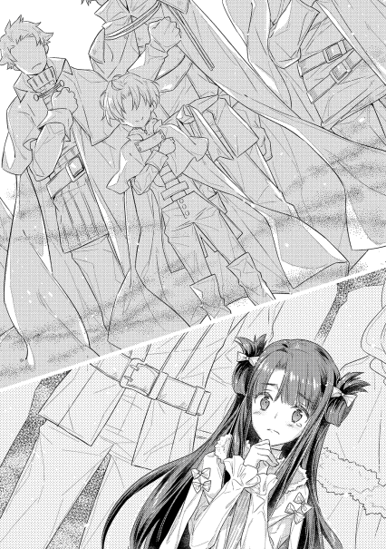
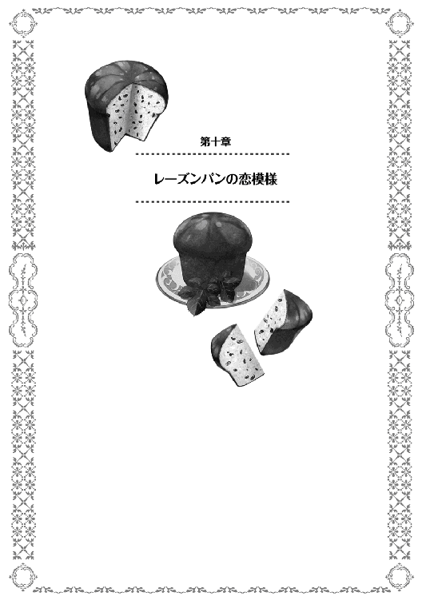

| おかしな転生V レーズンパンの恋模様 | |
| 古流望 | |
| TOブックス (2016) | |
異世界のある貧しき地の領主の息子・ペイストリー。実はその少年は前世ではお菓子職人だった。やがて、ペイスは持ち前の知略と、お菓子への愛情を武器に、内政に関わりながら、領地を変えていくことになる......。かわいい顔して交渉と剣と魔法に優れた少年が、最高のお菓子作りを夢見て世界を駆ける、王道スイーツ・ファンタジー！
イラスト：珠梨やすゆき YASUYUKI SYURI
デザイン：ヴェイア Veia

プロローグ 嵐の予兆
冬も深まる日々の中で、年の終わりの足音を聞く。
今年も残すところあと少しかと、誰もが不思議と感傷に浸りたくなるある日のこと。モルテールン家の屋敷では、ささやかな茶会が行われていた。
「それで、最近はどうなのよ」
「姉様、いきなりどうと言われても、答えようがないです」
「二人とも、何か進展があったのかって聞いてるの。で、どうなのよ〜最近は〜」
日頃忙しいモルテールン家でも、年末ともなれば家中の行事の準備が目白押しになる。年明けには何かと行事が立て込む為、大人たちはその準備を行う。
ただしペイスは別だ。
政務であればまだしも、神王国独自の行事などには不慣れだからだ。常識外れなことはよく知るが、常識的なことをよく知らないと評されるペイス。彼はこの時期だけ、暇になる。
こういう時こそ私の出番とばかりに姉であるジョゼが、リコリスと共にペイスを誘い、彼女主催のお茶会が開かれていた。
名目としては、秋口に収穫した豆から作った豆茶の出来を見る試飲会。一応、建前としては仕事の一環だ。最近はこの豆茶も、対外的な輸出品目とするべく品質の改良と量産化が試行されていて、出来がいいものはこうしてモルテールン家のお茶会に使われる。
ここしばらく忙しかったペイスを休ませてやろうという家中の気遣いもあり、久方ぶりにゆっくりまったりとお茶を楽しんでいた。
「姉様も知っての通り、最近は忙しかったですから......」
「特に進展といわれましても、こうしてペイスさんとゆっくりお茶を飲むのも久しぶりですよね」
リコリスがモルテールン家に厄介になり始めて、それなりになる。
腹黒い辺境伯たちの思惑を多分に含みながらも、当人たちは割と気楽に受け取っているこの状況。
年が明ければ、リコリスも十代の半ばになる。背も伸び、段々と体つきが女の子から女性のそれへと変わりつつある中。さすがにそろそろ男女の違いを意識し出す頃合い。
そのカウンターパートナーが、元より中身が大人っぽいペイスであるから、何かしら一歩進んだ報告が聞きたいと姉がごねる。
「それじゃあつまんないわよ。だってさ〜、二人は婚約者なわけでしょう」
「ええ。僕の大事な人です」
「ノロケは良いのよノロケは。でさ、もうそろそろ、次の段階に進んでもいいんじゃない？」
「次の段階？ 姉様、なんだかよからぬことを企んでいる顔になっていますよ」
姉のからかいをあっさり流せるペイスは、普通の顔色でお茶を飲む。
それに比べると、いまだ色恋沙汰に免疫のないリコリスは顔を僅かばかりに赤らめながら、落ち着く為にお茶を飲んでいる。
ジョゼに至っては、最近の嫁入り修行にストレスが溜まっていたのか、ここぞとばかりに〝弟夫婦〟をからかって楽しんでいた。悪だくみを思いついてほくそ笑む顔は、どこかの弟のそれと似ている。
「むふふん、ということで、ここは一つお泊り会をしましょう」
「お泊り会？」
「そっ、リコちゃんもうちにきて結構経つし、ここでお互いの仲をもっと深める為に、ペイスとリコちゃんの二人が、同じ部屋で一晩お泊りするのよ」
「なっ!! お義姉様!!」
「姉様、そんなこと出来るわけないでしょう」
ジョゼによる提案に、さっきから赤かった顔をもっと赤くさせ、リンゴのようになったリコリス。ペイスにしても、さすがにこの提案は多少の動揺を見せる。
南大陸のみならず、この世界では医療がまだ未熟。それだけに、不用意な妊娠や出産は妊婦の命にかかわるとして、貞操観念にはとてもうるさい。特に、血統が重要視される貴族社会では尚更。
リコリスは、モルテールン家が責任をもって預かっている、他家の独身女性。同じく成人している独身のペイスと、幾ら未成熟な子供で婚約者だといえども、結婚前に同じ部屋で寝起きさせるわけにはいかない、というのが常識である。それはジョゼにしても口を酸っぱくして言われることでもあるわけで、知らないはずがないのだ。
そんな非難めいた弟の抗議を、姉は軽い感じで受け流す。
「大丈夫よ〜あたしも一緒に泊まるから」
「......ということは、姉様含めた三人でですか？ それならまあ何とか体面的には......」
一応、姉弟同士であれば同じ部屋に寝泊まりするのも、推奨はされずとも許容はされる。倫理的には結構きわどい状況ではあるが、出来なくもないといったところだろうか。
それでも世間体としては好ましくないことには変わりがない。そう思ってペイスが顔を顰めていると、姉の方が更に笑みを深める。
「ううん、違うわよ」
「え？」
「むふふ、このお泊り会の発案者は、別の人なのよ。その人も一緒だから、三人じゃなくて四人ね」
「別の人......まさかっ!!」
ペイスは気付く。
この手の過剰とも思えるスキンシップを好み、最近の忙しいペイスと触れ合える時間が減っていることを寂しがっていて、体面的に一緒に寝泊まりしても問題がない人物。
これだけの条件が揃う人物は、たった一人だ。
「そっ、母様が言い出したのよ。たまにはペイスやリコちゃんとゆっくりと話がしたいって」
「お義母様が......」
ペイスとジョゼの母アニエス。
この二人の親として、彼女もまた人を喜ばせるのが好きであると同時に、驚かすのも大好きというイタズラ好きな性格をしている。
「確かに、母様と同室で寝泊まりというのはまだ。でも......」
「あら？ 不服そうねペイス」
「あの母様ですよ？ どうあっても僕らをからかおうとしているとしか思えません。正直なところ、気乗りがしません」
「あらそう。じゃあペイスはお泊り会に参加しないと？」
「僕は忙しいので、余計な心労は増やしたくないのです」
ペイスは大人顔負けの知識と行動力を持つ天才児と、誰もが認めている。
だが、そんな異才であっても苦手とするものがいくつかある。母親というものも、そのうちの一つだ。
産み育ててくれた母親に対して恩もあれば愛情もあり、どうしても邪険に出来ない為に、からかわれても強く返せないのだ。
故に、そんな相手との夜会などは、可能な限り避けたいと思うのが当然である。
しかし、そんなペイスの様子を姉は笑顔のまま眺めていた。
彼女とてモルテールン家の子。明らかに嫌がっているペイスを策に引きずり込むぐらいは、やってのける。
「ペイスぅ〜」
「何です？ 何と言われても僕は不参加ですよ？」
「あらそう。じゃあ無理には誘わないわ。でも、そうなるとリコちゃんはどうでしょうね〜」
「リコ？」
リコリスの立場は、今は弱い。
あくまでお客さんという立場ではあるが、婚約者として相手の家に厄介になっているというのも事実。将来の義母となるかもしれない相手や、義姉となるかも知れない相手に対して、むやみやたらと反感を買うわけにもいかず、どうあっても一歩引いた対応をせざるを得ない。
ましてリコリスは生来おとなしい性格で、不満があってもグッと堪えてしまう程度の我慢強さもある。
「母様がどうしてもっていえば、リコちゃんは断りづらいわよね？」
「そうでしょうね」
「つまりペイスは、リコちゃんだけを母様の面前に立たせておいて、自分だけは身の安全を守ろうというわけね。いいのよ別に。それはそれで貴方の選択ですものね〜」
「姉様、性格悪くなりました？」
「失礼ね。貴族として成長したと言って欲しいわ。第一、ペイスは人の性格をとやかく言えると思ってるの？ 父様やシイツが何度泣かされたことか......もう少し貴方も跡取りとしての自覚を持って、責任感というものを身に着けるべきよ。この間だって、結果的に上手く収まったから良かったようなものの、敵地の真っただ中に乗り込むなんて真似したらしいじゃない。後から聞いて私や母様やリコちゃんが、どれだけ心配したか分かってるの？ だいたいペイスは昔っからあたしたちに相談もなく危ないことに首を突っ込むから」
「分かった。分かりました。確かに、最近は心配をお掛けすることも多かったと思いますので、その辺の釈明もあわせてご説明いたします」
「つまり？」
「......参加します。そのお泊り会とやらに」
「むふふ〜素直な弟は好きよ〜」
ジョゼは、弟の頭をかき抱いた。
この抱き着き癖は、母親からの伝統である。
いい加減成人したのだからやめて欲しいとペイスは常々思っているのだが、アニエスやジョゼが治すそぶりを見せたことは一度もない。
義母や義姉と一緒とはいえ、ペイスと同じ寝室に寝ることになったリコリスなどは、早くもテンパってしまい、早々に侍女のキャエラが引き取る羽目になった。
「それで、そのお泊り会とやらは何時やるつもりですか？」
「母様と相談だけど、新年の後ってのはどうかと思って。年越しで夜更かしするのは普通じゃない。その後になし崩しでお泊り会に突入ってのが、無理のない建前だと思うの」
「建前を気にするとは。姉様も成長なさいましたね」
「弟に言われると複雑な気持ちなんだけど、まあペイスだしね......」
ジョゼは、男爵令嬢であった母の教育を受け、また人手不足の領地の政務を手伝う機会もあった為、国中を見渡してもかなり賢い部類に入る。ペイスが出鱈目をやらかし始めるまでは、男に生まれてこなかったことを惜しまれたことも多かった。
そんなジョゼからしても、ペイスは飛び抜けて優秀なのだ。弟が優秀すぎる姉として、何かと複雑な心境にもなる。もっと世話を焼きたいのに、焼かせてくれないのだ。
今回の企画を喜んでいるのは、母だけではない。
「新年のお祝いとなると、何か美味しいものを用意した方が良いですかね？」
「そうね。それで飲んで食べて騒いで、お泊り会を盛り上げるの。あ〜ワクワクしてきた」
「折角ですし、僕が腕を振るいましょう」
「やったぁ〜!! じゃああたし、あの白身魚のパイが良い!!」
「前に作ったあれですか......この時期に狙った魚が水揚げされているとも限りませんから、今から手配しても間に合うかどうか分かりませんよ？」
「その時はその時。でも聞いたところだと、港の幾つかに大きな伝手が出来てるらしいじゃない。美味しい魚と、ペイスのデザートのフルコースを希望するわ」
「それ、ちょっとしたイベントの規模じゃないですよね。結構な大仕事ですよ？」
「良いじゃないの。偶にはワガママを聞いてくれても。あたしだって何時お嫁に行くか分からないわけだし、ペイスの料理なんて今度は何時食べられるか分からないし。リコちゃんやペイスと揃って夜更かしなんて、もう機会がないかもしれないし。う〜食べたい食べたい食べたい〜!!」
「分かりましたから、足をバタつかせないでください。駄々っ子ですか姉様は」
ペイスの作る料理の美味しさは、モルテールン家では周知の事実。
皆が知らないような材料すらも使いこなし、聞いたこともない調味料を駆使し、見たことがないような技術で作る、食べたことがない料理。
レパートリーも底が見えないほど多いらしく、また常から色々な料理研究や菓子研究をしている為に、増えていく一方。
この世界では、菓子職人としても超一流ならば、料理人としても一流の技量を持つ。それがペイストリーという少年なのだ。
「じゃあ、新年の料理とデザートは期待していいわけね」
「他ならぬ姉様のリクエストですから、頑張りましょう」
「やふぅう!! これだからペイスは可愛いのよ」
「だから、そうやってすぐに抱き着くのを止めてください!!」
「あぁ〜髪の毛もサラサラね〜」
弟の必死の抵抗もむなしく、背も伸びてきた弟をおもちゃにする姉。
この仲睦まじい様子は、乱入者によって止められる。
「若様、ちょっといいですか......って、何やってるんです？」
「ニコロ、いいところに。助けてください」
「ご姉弟の仲が良いのは分かりましたけど、暴れるのは程々に。ジョゼフィーネ様、ペイストリー様をお離し下さい。残念ながら仕事の話です」
「えぇ〜」
しぶしぶペイスを解放した姉ではあったが、機嫌はよさそうだった。
ここしばらく勉強や嫁入り修行ばかりで気が滅入っていた分、弟とじゃれてストレスも解消出来たのだろう。
ようやく解放されたと、これ幸いに逃げ出すペイス。とニコロが連れ立って歩く。
行き先は、執務室だ。
「失礼します」
扉を、ノックと同時に開けて入るペイス。
中にいたのは、シイツ、グラサージュ、コアントローといったモルテールン家譜代の面々。
皆一様に表情が硬く、ただ事ではない雰囲気が漂っている。
「何かありましたか」
そう短く問いかけたペイスに対し、答えたのはシイツ。
「坊、大変なことになりやした」
「大変なこと？」
聞き返したペイスはふと気付く。その場に今日はいるはずの男が不在であることに。
モルテールン家にとって大黒柱ともいうべき現当主、カセロールの姿がそこには無かった。
「大将が、窃盗の容疑で召喚されやした」
黒下月の末。真冬の最中のこと。
モルテールン家に嵐の予感であった。
王宮の事件
神王国の王都ボーヴァルディーア。この街にはひと際目立つ巨大な城が鎮座する。
国王の住まう場所として、また国務の中心として聳える建造物。
権威の象徴として佇む城の中には、国王の家族の住まうプライベートなスペースも存在する。
このプライベートスペースに出入り出来るのは、侍従や侍女として雇われた身分確かな貴族子女。或いは、下働きとなる出自の確かな従士階級の子女。国内でも選りすぐられた者が集められていて、家の跡を継目げない者や、戦場で身を立てることが出来ない人間にとっては憧れの職場になっている。
だが、如何に出自が確かな彼らとてほとんど出入りを許されない場所も存在した。
宝物庫、資料室、執務室、金竜の間や青狼の間、寝室などだ。
こういった場所は、侍女や侍従の中でも更に立場が上の者しか入ることを許されない為、城で働く者たちの中でも内部を知るものは少ない。
「陛下、王子殿下の件はそろそろ頃合いではございませんか。関係各位より、このように書状が届いておりますれば、陛下のご英断を頂きたく思います」
「見せろ」
「はっ」
プラウリッヒ神王国第十三代国王カリソン。
働き盛りのこの男は、今日も今日とて政務に励んでいた。そして、今日は酷く悩ましい問題が持ち上がっていた。
「クラウシアンテ。性格はやや良し、家柄はとても良し、容姿は良し、教養は良し、推薦人筆頭がルーラー伯」
「ルーラー辺境伯の縁戚筋にあたり、ルンスバッジ男爵の御令嬢です。ルンスバッジ家は国家創建以来の臣でありますれば、こと家柄に関しては申し分ない方かと」
「しかし、ルンスバッジ子爵......いや、今は男爵か。あそこは俺に反抗した経緯があるだろう」
「はい。しかしながら既に二十年以上も前のこと。昔であればいざ知らず、今であれば外戚の専横の懸念も薄うございます。ここであえて王家に取り込み、挙国一致体制の確立を図るべきというルーラー辺境伯の意見には、一理ございます」
カリソンが悩んでいるのは、自分の息子であるルニキスの伴侶について。
王家とは血統をもってその正当性を担保されているわけで、子孫繁栄を願うのは王家のみならず神王国の主要な者全てが欲していること。
それだけに、既に成人している王子の妃を決めて、次代継承を確実なものにしておくのはかなり優先度の高い問題である。
だが、このお妃選びがまた難題なのだ。候補の誰もが一長一短。誰を選んでも批判は出るし、誰を選んでもメリットがある。パーフェクトが無く、合格点以上が横並びという状況。
「オリガ。性格良し、家柄良し、容姿とても良し、教養良し、推薦人がエンツェンスベルガー辺境伯か」
「エンツェンスベルガー辺境伯の愛娘とのことにございます。推薦について私情が入っている点は否めませんが、器量については申し分なく」
「しかし、ルニキスよりは年上になるのか」
「年上を正室とした前例がございますれば、問題ないかと」
「子を増やすという観点からいうならば、年上である点はやや懸念がある。今は特に問題がなくとも、全く無視することも出来ぬ。万難を排したい」
「御意」
エンツェンスベルガー辺境伯は、北部を守る領地貴族。王家の監視が届きにくい辺境の有力貴族が王家の外戚となる点でも、問題があると懸念される。今はまだカリソンが健在であり、当代のエンツェンスベルガー辺境伯自身も権力欲の薄い人物だ。しかし、次代の辺境伯も権力欲が薄いとは限らず、またカリソンの力が衰えれば、それだけ外戚の圧力と権力は増す。
王家に次ぐ四伯の娘は、利点も大きければ懸念も多い。
「そして、エレンマスリー。性格とても良し、家柄やや良し、容姿やや良し、教養とても良し。推薦人がアスロウム子爵とドビュッセンガー子爵の連名」
「アスロウム子爵令嬢で、非常な賢才として知られております。慈悲深く温厚な性格であると評判にございますれば、将来の国母となられるに際しては賢母となられるに相違ありません」
「だが、容姿に関しては今一つ、というわけか」
「美醜の別は人それぞれでございますれば何とも申し上げにくきことながら、私見を申せば、親しみの持てる方であるかと存じます」
「馬鹿よりは賢い女の方が良い。だが、賢しらに国政に口を出す女では無い方が望ましいな」
「ご懸念は御尤もかと」
アスロウム子爵は領内に幾つかの鉱山を持ち、西部では相応の権勢家。王家との縁組とその影響力を背景に、更なる躍進を狙っているものと推測された。
王家としても、金満な子爵家から得られる利益はでかいだろうが、権力闘争の火種を抱え込むことにもなりかねない。
「そしてお前の娘か」
「はっ。ラビリアンヌ。憚りながら殿下とは幼少の時分より面識があり、気心は知れた仲かと」
将来のお妃候補として挙げられている四人。誰にしても国内では屈指の女性ばかり。王子の嫁としても、どこに出しても恥ずかしくない者ばかりである分、悩ましさは常に付きまとう。
後継者の伴侶とは、歴代の王が必ず頭を悩ませる問題でもあるのだ。
女性の結婚には年齢という制限がある以上、後送りにしても良い問題ではない。
故に、国王はしばしの黙考の後に決断した。
「王としての決断をする、お前の娘とアスロウム子爵の娘は却下だ。無用の混乱や、ただでさえ大きい宮廷派閥の増長を避ける方が重要と判断したからだ」
「御意」
「何だ、もう少し残念そうにするかと思ったが、そうでもなさそうだな」
「馴れ合いや私情は、国政にとって害となります。恐らく陛下がそうご決断されるであろうと覚悟しておりましたので」
「ふっ、お前らしいな。では後の二人のどちらか、という話だが、これは当人に決めさせる」
「殿下にでございますか？ 恐れながら殿下は御政務について習熟に励まれているところにございます。殿下におかれてはいささか役不足の政務となるかと存じますが」
「そういう時は、あいつはまだ未熟だから、荷が重いとはっきり言え。それは分かっていることだ。ただ、あいつにしても、自分の知らないところで勝手に決められるよりは、例え二択でも自分で選ぶ方がよかろう。もうそろそろ、自分で決断する癖を身に付けておいて良い頃ではないか？」
「陛下の仰せの通りにございます」
カリソンは、僅かに片頬を上げて笑う。
腹心たるジーベルト侯爵は、政務の補佐役としては申し分なく、国務尚書の任を過不足なく務めている。ただ、時折言葉遣いが回りくどいと感じることも多い。
元より儀典も管轄する内務職である分、言葉遣いや礼儀作法にやたらうるさいのだ。それだけに、不敬となりかねない王子批判は絶対にしないのがこの中年男である。
「ルニキスが自分で選べるのならそれでよし。優柔不断な姿勢を見せるのならば、叱責の上で改めて両人のどちらを妃とするかを決める。それで手配しろ」
「はっ。して、殿下がお決めになられるあたって、いつまでを目途にお待ち申し上げればよろしいのか、お伺いしとうございます」
「期限か、そうだな。ひと月......いや、半月だな。それ以上掛かるようではどんな決断も出来まいよ」
「承知いたしました。ところで、それに関しまして」
「ん？」
「殿下が半月の間にお妃となられる女性をお決めになられるにせよ、陛下がよき伴侶を選ばれるにせよ、どちらになりましても半月程度で決まることになりましょう。さすれば、その後のことにつきましても、準備が必要かと存じますが」
国務尚書は、薄くなってきた頭を慇懃に下げる。
彼が言う準備とは、王太子妃を決めた際に行われる、諸々の手続きや式典、或いは儀式を指している。
正嫡である王子の妃となれば、将来の国母となる可能性が非常に高くなる。国家にとって、大きな影響力を持つようになるのだ。
当然、国の顔としての面も持つようになる。社交の面においては、王太子であるルニキスとセットで顔を出す機会も増えることから、入念な準備が必要になる。
例えば、王族のみが纏える儀典服の採寸等の手配であったり、王妃および王太子妃のみが着けられる宝冠を用意したりといった具合だ。
「ふむ、そうだな。確かに色々と準備を進めておくべきだろう。構わん、お前の裁量で準備を行っておけ」
「はっ。さすれば陛下、宝物庫への出入りも必要かと存じますが如何取り計らいましょう」
「ふむ、宝物庫の出入りを許可出来るもので、今比較的手の空いている者はいるか？」
「アイスレング男爵は如何でございましょう」
「ああ、アイスレング男爵か。確か、まだ代替わりして日が浅かったな」
「はい」
王城には貴族のみが出入りを許される部屋がある。そういった部屋の管理や、或いは王族の護衛といった任務について、爵位のある貴族やその子弟が任に就いている。これを指して、王宮勤めの宮廷貴族と呼ぶ。宮廷雀と呼ばれることもある。
彼らは役職に応じた手当を貰い、それで生計を立てているだけに、官職の有無は死活問題。
アイスレング男爵は、代々儀典などを担当する宮廷貴族家の一つであるが、現在は代替わり間もないこともあって官職が無い。内務系のトップとして派閥を率いるジーベルト侯爵は、子飼いの部下を推薦することで、求心力を保っているのだ。
「ならばアイスレング男爵に命じて、王太子妃選任の準備をさせておけ」
「御意」
「ふむ、とりあえずこの件はそれぐらいか？」
「はい」
「よし、ならば次の案件だな。次は何だったか」
「次はヴォルトゥザラ王国との関係見直しについての奏上の検討でございますが......陛下、そろそろ玉体をお労り下さいませ」
国王の政務とは、つまるところ意思決定。
やらなければ、誰が片づけてくれる手合いのものではなく、ここしばらく大きな案件が続いた為に、カリソンは根を詰めていた。
侯爵が見るところ、相当に疲労が溜まっているように見える。
「......そうか。ならば後は頼む」
「はっ」
国務尚書から言われてみれば、確かに強い疲労を感じると、王は一旦休憩を取ることにした。
執務室のすぐ隣の部屋に、仮眠用のベッドまであるのだから、日頃からどれほど政務が溜まっているかは言うまでもない。
本来であれば、ある程度の最終決定権を他人に預け楽をする方法もあるのだが、三権において全て国王が最終決定権を持っている現状では、余人をもって替え難い。
「少し仮眠を取る。半鐘ほどしたら起こせ」
席を立つに際し、侍従にそう命じるカリソン。
疲れが溜まっていたのか、あっという間に眠りがやってくる。
ところが、寝入ってしばらく経った頃、ジーベルト侯爵からの連絡で、侍従に呼び起こされる羽目になった。
「陛下」
「ん、むう、何だ」
「ジーベルト侯爵が至急のご報告とのことです」
「ちっ、俺はおちおち仮眠も取れんのか」
起こされていささか不機嫌なまま執務室に入れば、ジーベルト侯爵の他に、若い男が跪いて臣下の礼を取っていた。
誰であったか、とカリソンは少しばかりぼんやりとする頭で考えたが、ややあって、それが先ほど話題に出ていたアイスレング男爵であることに気付いた。
「至急の報告とのことだな。どうした」
「はっ、実は事件が起きました」
「畏まった話は要らん。要点だけ簡潔に言え」
「では結論から。王妃陛下の宝冠が、何者かに盗まれた模様です」
「なにっ、この王宮からか!?」
「はっ。現状では不確かなことが多うございますれば、経緯の詳細をアイスレング男爵より奏上申し上げます」
「許す」
国王に許可され、跪いたまま畏まって話し出す男。年の頃はまだ十代で、みなぎる活力を隠そうともしない若々しい雰囲気。
「先ほど、陛下よりの勅命を受け、王太子妃殿下をお迎えせんと不肖ながら私めが場を整えることとなりました。会場の設営手配や人員配置などは後日でもよいとなりましたが、取り急ぎ手配せねばならないのが衣装と宝飾品でございます」
「うむ。それらは手配を急がせても限度があるからな」
「しかしながら私めは若輩でございますれば、王太子妃殿下の宝飾品がどのようなものか存じ上げません。そこでジーベルト侯爵閣下とも相談の上で、王妃様をお迎えした際の装飾品を参考にしようと致しました」
「......そこまでは問題ない。続けよ」
儀典を取り仕切るに際し、前例を踏襲することは当たり前の話だ。
手抜かりの無いように準備しようと思えば、前回どうであったかを参考にするのは、儀典の担当者としては極普通。その為に、現在の王妃がかつて王太子妃として迎え入れられた時の宝冠を参考にするという発想も、自然な発想である。
アイスレング男爵は遠縁に王家の血筋が混じる家柄で、それ故に宝物庫の出入りを許される家柄。
ただし、宝物庫の出入りの際は必ず複数人で相互監視が要るなどといった、決まりごとは多い。
「宝物庫から持ち出した宝冠は、細かな寸法や材質を確認する必要から、一旦我々儀典官の部屋に持ち込みました。その際、作業中に緊張から催し、一旦場を離れることになりました。戻ってきた時、宝冠が見当たらず......」
「それで盗られたと判断したわけか」
「まことに申し訳ありません。この失態を陛下になんとお詫び申し上げてよいか言葉もございません。如何様にも罰し下さい」
「......場を離れるとは、部屋を出たのか」
「はい」
「部屋の鍵はどうであった」
「窓は元より天窓ではめ殺し。出入りの出来る扉は一つで、出る際には間違いなく鍵をかけました。戻ってきた際に中からあけた形跡があり、ジーベルト侯爵と共に部屋に入った時には、宝冠が無くなっておりました」
「合鍵は？」
「ございますが、管理しております者は間違いなく今日は一度も持ち出されていないと申しております」
王は色々と確認するが、間違いなく密室状態であったはずであるとアイスレング男爵は言い張る。彼だけならば疑わしさも残るが、ジーベルト侯爵も現場を検分しているという。そしてその話を聞く限りでは、どうあっても第三者の介在が疑わしい状況。
紛失ではなく、窃盗の被害に遭ったとみるのも無理はない。
「......不可解な事件だな」
「はっ。特に扉に関して。中から人が開けねば、起こり得ない状況でございます」
「ならば、疑わしいのは魔法使い、ということだろうが......それが出来るものといえば、あいつか」
「臣はあり得ないことと断言致します。ただし、可能であるかどうかというならば、可能でしょう」
この世界、不可思議なことが起きたのなら、まず魔法の介在を疑う。あり得ないことを可能にしてしまう超常の力が魔法。不可能を可能にしてきた者たち。
そして残念なことに、王や侯爵のよく知る人物であれば、鍵の掛かった部屋だろうが入ることは可能。今回の状況を、作れてしまう人物。
「話を聞かねばなるまいな」
「はっ。早速手配いたします......モルテールン卿の召喚について」
信頼
「よく来られたペイストリー＝モルテールン卿。久しぶりに貴殿と会えたこと嬉しく思う」
「公爵閣下におかれてはご健勝のご様子、何よりのこととお喜び申し上げます。不精を致しまして御挨拶もろくに致しませんで」
「儂の方こそ、忙しさから挨拶も出来んでな。活躍の様子は聞いておるよ。色々とな。最近もなかなか派手にやらかしたようだな」
「閣下のお耳に届くほどのことに心当たりがございませんが、当家の発展は閣下のお力添えのおかげと感謝する次第です」
王宮に、ペイストリーが呼ばれた。
呼んだのは、ペイスとも浅からぬ縁のある重鎮。国内の軍権を一手に握る軍務閥領袖カドレチェク公爵。
年季と皺の入った顔を綻ばせ、年配の男性は少年を歓迎した。
「して閣下。この度の用件は、やはり父のことでございましょうか」
「うむ。貴殿も承知の通り、モルテールン卿が妃陛下の宝冠窃盗の容疑で召喚された。それについて、いささか儂も困る事態となっておる。貴殿も無関係ではないし、是非知恵を借りたいと呼んだのよ」
カドレチェク公爵は、ペイストリーの賢さを知る。子供の姿と侮って痛い目を見た経験もあるだけに、年は離れていても、ある種の尊崇の念すらある。若かりし頃の自分以上に才気溢れる若者に、新しい世代の波の到来を予感したことも記憶に新しい。
それだけに、現状の拙い事態に際して、藁にもすがる思いでペイスに頼っているのだ。
「窃盗？ 父様は窃盗の容疑がかけられているのですか」
「うむ。ただ、儂は元より、陛下やジーベルト侯爵はモルテールン卿が盗みを働いたなどは微塵も思っておらんよ」
「ありがとうございます。では何故父が呼ばれたのでしょう？」
「それは、モルテールン卿が【瞬間移動】を使えるからよ。ことのあらましは追々説明するが、要点だけ話すならば、密室と思われる場所で窃盗事件が起きたのだ。余人ならば不可能でも、モルテールン卿であれば容易いことである、との理由が大きい」
「かなり強引に思えます。可能だから捕まえた、というのなら、犯罪捜査など成り立たないでしょう」
ペイスは、公爵の説明にいささか憤慨した。
可能だから容疑者、と言われるのならば、男は皆性犯罪の容疑者になるだろう。杜撰にもほどがあると、怒るのは当然のことだった。
「貴殿の思いは分かっている。儂もそう思う。ただ、事情があるのよ」
「事情？」
「これは貴殿が生まれる前のことなので知らずとも仕方がないが、十五年程前にも同じような事件があったのよ。誰も近寄っていないのに、明らかに殺人と思しき溺死体になった者が出た、という痛ましい事件がな」
「それと今回の件と何の関係が？」
「それよ。その事件の時の犯人が魔法使いであってな。儂も責任者として、以後同じようなことがあってはならんと、魔法使いに対してかなり厳しい防護体制を整えたのよ」
十五年前の王宮の事件など、ペイスが知るわけがない。
マスコミがセンセーショナルに煽って書き立てるわけでもなく、ゴシップが週刊誌上で飛び交うわけでもないこの世界。一度緘口令が敷かれた痛ましい事件などは、時間と共に風化していくしかないのだから。
「つまり？」
「防護体制の内実は、警護の観点から詳細は言えん。だが、貴殿を含めて魔法使いが好き勝手に城で魔法を使えんようになっている。庭などは別だが。まあ、使えば分かる、という意味でもあるがの」
「なるほど......あれ？」
ペイスはふと気付く。
王城で魔法が使えない。いや、言葉のニュアンスから、使い難くなっているのだとして。それでは矛盾があることに気付く。
「うむ。貴殿も気付いた通り。これには例外がある。臣下を疑う真似は出来ん、と陛下が仰せでな。陛下の直臣たる貴族家当主本人には、この防護体制は当てはまらぬのよ。モルテールン卿以外にも魔法を使える貴族家当主はいるが、その全てが今回の事件を起こすのは不可能な魔法ばかり。例えば、【発火】で盗みは出来まいよ」
「それで父様が呼ばれたと」
「そうだ。これは、モルテールン卿を守る為でもある。疑われることが分かっていた為に、早々に召喚して陛下の元に留め置いた。さすれば、少なくともそれ以後に類似の事件が起きても、同じように嫌疑がかけられることがないし、その時点でモルテールン卿の容疑が晴れる。以前の殺人事件の際は、連続殺人という痛ましい事件でな。ことの最初に召喚という名で保護し、監視下に置いた魔法使いは、早々に嫌疑も晴れて事件解決に功績をたてた。今回も同じことを陛下はお考えになったに違いない。ものが窃盗だけに、事件が続けざまに起きる可能性もあったわけで、その度にモルテールン卿に嫌疑の目が向けられるのを防ぎたかったのだろう」
「なるほど」
城の魔法的防御は、その手の知識が全くないペイスには想像も出来ない。ただし、軍務の長が断言する以上、そうそう綻びがあるとも考えづらい。
完全な監視下に置いた上で、更なる事件が起きるとなれば、これ以上ない完璧なアリバイが出来上がる。カセロールの為にそれを狙っていたのだと言われれば、召喚にも一定の筋が通っているようにも思えた。
「では、父様の疑いは晴れたのですか？」
「ところが、ここからがややこしい話になる。早々に召喚してモルテールン卿を保護したものの、事件が単発だった為に、却って容疑を深める結果になってしまったのよ。事件が続かないのは、犯人が早々に捕まったせいではないか、という声が出始めた。というよりは、それを煽り出した者がいるのだ。何かと目立つモルテールン卿であるし、ここぞとばかりに足を引っ張ろうとするものが出始めておるし、政治的な問題を孕み始めた」
「それで、何とか出来ないかと僕を呼んだ」
「その通りだ」
モルテールン準男爵家は軍家である。内務の家であれば、例えば有事の際は後方支援に回るし、外務であれば戦後処理が仕事の場。対し軍家は、率先して前線に出向く。カセロールが軍家に属するのは必然だ。
大きな目で見るならば、カドレチェク公爵率いる公爵派の派閥にカセロールも含まれていると言える。
それはすなわち、モルテールン家の失態が、僅かながらでもカドレチェク公爵の傷になるということを意味する。
「モルテールン家は、先ごろレイング伯をやり込めたと聞く。ヴォルトゥザラ王国とのやり取りも仕事の範疇である外務閥は、横やりを入れられた形になって面白くない。内務閥は、今回の窃盗事件の責任回避に、スケープゴートを欲している。この両派閥は普段一枚岩にはなれるはずもないのだが、それだけに手を取って動かれると、非常に始末が悪い」
「......それは、今起こっていることだと？」
「これは儂の責任でもある。あちこちで恨みを買っているでな。モルテールン卿を徹底的に貶め、それをもって儂の影響力を少しでも減らそうとしているのよ。この場合、事件は解決しないまま、モルテールン卿が極めて疑わしい状況を継続させようとする。そしてそれは、時間が経てば経つほど容易になるだろう」
時間が経つほどカセロールの嫌疑は深まる。それは、別に犯人がいたとして、残した痕跡や証拠などは、時間と共に薄れていくからだ。相対的に、カセロールが犯人だったのではないか、という疑惑は深まっていく。何せ、彼ならば間違いなく可能なのだから。
カドレチェク公爵がモルテールン家を庇い、擁護するのは派閥力学からも当たり前だが、その場合はモルテールン家が落ちれば落ちるほど、カドレチェク公爵の傷が深くなる。犯罪者を庇うような目で見られることになれば、カドレチェク家も庇いきれなくなり、そうなればモルテールン家は外交的に疎外されていく。
モルテールン家がそれを避けようと思うのならば、現実的な二つの道がある。
一つは、あっさりと当主を見放して切り捨て、代替わりをする。カセロールがやっていないと信じていても、疑わしきを罰することで、出血を抑える対処法は、存在するのだ。臭いものに蓋をするような行動ではあるが、政治の世界は往々にして行われる方法。
別にカセロールが引退したとしても実質は何も変わらないし、後継者の質次第ではより大きい発展を目指せるかもしれない。
そしてもう一つは、犯人を見つけ出すこと。
モルテールン家の躍進を望まない人間たちが邪魔をする可能性はあるものの、達成出来ればベストの結果になる。ただし、時間をかけてしまえば、実はカセロールが犯人だった、という説をより強固にしてしまうリスクも存在する。
現実解の二者択一。
どちらを選ぶかなど、ペイスにとっては悩むまでもないことだ。
「真犯人を捕まえます。モルテールン家が落ちることを喜ぶ人間が、邪魔をしてくる前に」
「うむ、儂も出来る限りの協力はしよう。利害は一致するでな」
モルテールン家次期領主ペイストリー。
世にも珍しい少年探偵誕生の瞬間であった。
◇◇◇◇◇
王城の一室。
窓ははめ殺しの上で、扉が一つしかない、よくあるタイプの部屋。
この手の部屋は、城内で仕事をする人間に貸し与えられることも多い部屋だが、現在は別の用途に使われている。
いや、執務中といえばそれに違いないのだが、一般的な執務とはイメージが異なるのだ。
「日が落ちたな」
「最近は暗くなるのが早いですね」
「腹が減ったんだが、食事を持って来てくれないだろうか」
「もう少しすれば係の者が持ってきますので、お待ちください。モルテールン卿には不便をお掛けしておりますが、ご理解のほどを」
部屋の中には、カセロールがいる。手持ちぶたさな風で、筋力トレーニングなどをしながら暇を潰していた。
そして、そのカセロールの監視役として、三名の人物が部屋にいる。
代表は、アイスレング男爵。宝冠窃盗事件が起きて以来、責任を最も感じていることから、この任務に志願した。
アイスレング男爵ロックガンドは、当年とって十九歳。先代である父親が病で亡くなり、跡を継いでまだ三ヶ月。
これまでも父に鍛えられていたこともあり、自分の力量にも多少の自信はあった。それが、初仕事と言える仕事で管理していた宝物を盗まれるという不手際。どう取り繕っても、自分の失態であると、自責の念を強くしていた。
そして今、事態は思わぬ方向へと進みつつある。
自分の上役に当たる宮内尚書らが、モルテールン準男爵が極めて怪しいと言い始めたのだ。ロックガンドも貴族である。ここに政治的な意図を感じる嗅覚ぐらいはあった。
宮内尚書からすれば、自分たちの管轄内の失態を、こすり付ける相手を欲していたのだ。いっそ事件が迷宮入りになってくれれば、誤魔化せると考えている節すら垣間見える。
事の起こりが偶然であることを知っているロックガンドは、モルテールン準男爵が犯人だとは思っていない。だが、政治力学がそれを口にさせないのだ。
自責の念は、増すばかり。
「......閣下は何故、そうやって平然とされているのでしょうか」
「ん？」
後悔や自責の念、巻き込んだカセロールへの罪悪感、窃盗犯への怒り。色々な感情が渦巻くロックガンドからすれば、今のカセロールの在り様は異常だった。
濡れ衣を着せられつつあり、政治的に不利な立場に置かれ、理不尽極まりない状況。刻一刻と悪くなる情勢。下手をすれば、自分が切り捨てられて罪を被せられるかもしれない今の立場を思えば、平然としているのは不自然に思えた。
「何故、何故閣下はそうやって落ち着いていられるのです。閣下であれば、今のご自分の状況ぐらいはお分かりのはずだ......何故っ!!」
アイスレング男爵の声は、狭い室内ではとてもよく響いた。自戒を孕む、自らへの慟哭のような言葉。
カセロールは、そんな若者の叫びに、ひどく静かな声で応えた。
「今の状況が、落ち着いていられる状況だからだ」
「馬鹿な。敵だらけになり、こうして軟禁され、何も出来ない状況で、どうして落ち着いていられるのですっ!!」
カセロールは、功績を立てて一代で成り上がった。それだけに、方々から妬まれているし、疎まれている。
今回の事件をこれ幸いと、良くて傍観、悪くすれば積極的に落としにかかる者たちは日に日に増えつつある。
一体今の状況の何に落ち着くのかと、ロックガンドは思う。カセロールのカラ元気にさえ思えた。
「私を見捨てない戦友が、絶対にこの状況を解決して見せると信じられるからだよ」
「戦友？」
「ああ。私が心から信じる、最高の男が動いている。そう確信すればこそ、私は心おだやかでいられるのだ......アイスレング男爵!!」
「はっ」
「そう気に病まれるな。この事件、時間は我々の味方だ」
ニヤリと笑ったカセロールの顔。
浮かべたのは、探偵少年のそれとよく似た笑顔だった。
迷推理？
王城で、一人の少年が呟いた。
「犯人が分かりました」
「何？ それは本当か、モルテールン卿」
カドレチェク公爵の問いに、にこりと笑ったペイストリー。
「ええ。これは、とても単純な事件です」
少年は、自信を持って断言するのだった。
◇◇◇◇◇
王城の一室。
宝冠窃盗事件の現場である儀典官の執務室に、ペイスはいた。傍には大人が一人。
「天井付近の窓ははめ殺し......高いですね。シイツ、見えますか？」
「間違いなく埋め込んでありまさ。あれは開かない窓ですぜ。梯子を掛けるのも難しいでしょうよ」
「壊した跡や、工作した形跡は？」
「ねえです。少なくとも部屋の内側から細工した形跡はねえです。外からも見ておきますかい？」
「それは僕が事前に見ておきました。外には工作どころか、人が近づいた形跡すらありませんでしたよ」
「さすが坊、どうやって見たのかは知りませんが、抜け目ねえです」
銀髪の少年と共にいるのは、モルテールン家従士長シイツ。
一家の主が軟禁中という一大事に、人手として狩り出された。
何をしているのかといえば、もちろん真犯人探し。その為の現場調査だ。
カドレチェク公爵が融通を利かせてくれたおかげで、好きに捜査することが出来ている。この辺は人脈がものをいう貴族社会ならではだろう。
「にしても、さみしい部屋だ」
「仕事部屋というよりは、仮眠室のようなものだったそうです。日頃使う人もおらず、事件当時はアイスレング男爵以外に使うはずも無かったとか」
「道理で埃だらけなわけだ。棚が一つ。机が一つ、ベッドが一つ。これっきりですぜ。調べるにしたって手掛かりなんぞ見つかるんですかい？」
「それは調べてみないことには分かりませんよ」
「これだけ物がねえんなら、調べもそこそこに大将を疑えって話も、満更馬鹿に出来んでしょうぜ。隠れる場所もなし、何か細工する場所もほとんどねえ」
儀典官という職務は、見方を変えれば儀式専門の雑用係みたいなものだ。専門的な知識も要求されるが、やることに独自の工夫や目新しい発想は不要である。
その為、内務系の中でも割と低い位階の人間が担うことの多い職種でもあった。
だからだろうか、与えられている部屋の中もかなり殺風景。
棚と机と椅子とベッド。ベッドは仮眠用で、机は椅子と一セットになっている。棚には諸々の物品管理を初めとする記録が置かれていて、丸まった羊皮紙や木板が置かれていた。
「この棚も、かなり手入れが雑ですね」
「うひゃあ、これなんて何年前のやつですかね？ 羊皮紙がボロボロになってら......ゲホッ埃がっ」
古い羊皮紙を手に取り、ふっと息を吹きかけたシイツは咳き込んだ。
「下手に触らないように。どこに手掛かりがあるか分かりませんからね。ん？」
「どうしたんで、坊」
「いえ......続けますよ」
相当古いものらしく、巻いてある紙が劣化して色づき、括ってある紐も触れるだけでボロボロと崩れるほどの古さだ。
「ベッドは......何度か使った形跡がありますね。シーツの交換もろくにされてない。不衛生ですね」
「仮眠用なんざそんなもんでしょう。宮廷貴族は実入りが少ないってんで、人を雇うのも限られる。こんな部屋の維持管理に人を雇う余裕もねえでしょう」
「王城の管理の範疇ですから、掃除ぐらいは王宮勤めの人間がするのでは？」
「執務用に用意されてる部屋だと、何がゴミかなんて分かりませんし、機密に関わる仕事をしている人間もいますからね。決められた部屋以外は入ることも無いでしょう」
「だから掃除もされていない......ベッドの下は......」
「人が入れる隙間じゃねえですね。坊でもギリギリってところでしょう。俺ならまず入れない」
「おや？ シイツ、灯りを」
「こんな昼間に持ってるわきゃねえでしょう」
「埃が一部掃われています。見えますか？」
「......ほんとだ。坊よく気付きましたね」
極々僅かな埃の堆積。その形跡を見るに、ベッドの下になにがしかの跡が残っている。
よくよく目を凝らさねば分からない。目線の低いペイスだから気付けたといってもいい。地面に這いつくばるように、地面スレスレに目を持っていけば埃の様子が分かった。
「何かベッドの下に置かれていたのでしょうか？」
「ベッドの下に隠すもんなんざ、あまり他人に見られたくねえでしょうよ」
「シイツにも経験が？」
「一般論ですぜ、一般論」
ベッドの下によからぬものを隠すのが一般論であるとシイツは言い張る。母親に見つかるまでがワンセットだと抜かすあたり、シイツの経験談のような気もするが、ペイスはいちいち指摘したりはしない。
「机の上は......意外と綺麗ですね」
「人が出入りしねえんじゃあ散らかす人間もいないんでしょうよ」
「ふむふむ。儀典の手順についての申し送り書ですか。代々の儀典官の伝達事項をメモ書きしていたようですね。これは王族の生誕祝いに関する流れと留意点。こっちは、諸外国の来賓をもてなす際に外務貴族と折衝するコツですか。機密では無いにしても、あまり知られることのない知識ですね」
「こりゃいい。この際だから坊、【転写】しておきましょうや。儀典官のいないうちにとっちゃ、金で買えない価値があります」
「事件の解決の目算がついてからですよ。そういった些事は、父様の解放に目途がついてから改めてやればいいのです。第一、王城で僕は魔法は使えない」
「へいへい、おっしゃる通りで」
「ことに区切りがついた後、捜査の延長線上という名目で魔法を使わせてもらえないか、カドレチェク公爵に交渉してみましょう」
「こういう時に恩を売ってりゃ強いですぜ」
「カドレチェク公爵には今回の貸しもありますから、大丈夫でしょう」
机といっても、引き出しすらついていないシンプルなものだ。
何時のものか分からない、乾ききったインク瓶が一つ。白紙の羊皮紙が数枚。作業途中で置かれたらしき儀典官の書類が数枚。羽ペンが一つ。机の上はこれだけである。
「坊、机に傷がありますぜ」
「どれどれ。これは相当に古い傷ですね。それもあちこちにある。この机の古さから言って、傷の一つや二つはあっても不思議はありませんが......」
「小細工の跡かも」
「可能性は否定しませんよ」
部屋の中にあるものといえば、数も少なくすぐに調査が終わった。中の調査が終われば、次は出入り口の調査に掛かる。
「部屋の鍵は、内側からも開け閉め出来るタイプですか。珍しいですね」
「外から鍵を使って、閉めることも出来るようで」
ペイスは、観察の後に鍵を触ってみた。王城の部屋だけに仕組みが凝っていて、鍵を使うことで外から閂を操作することが出来るつくりになっている。中からであれば、そのまま閂を動かせば鍵を開けられるようだ。
少し錆び付いた感はあるが、動かすのに対して力は要らない。実際に開けてみたが、片手で楽に開けることが出来た。
「紐でも使って、外から開けることは出来ますかね？」
「やりようによっては方法はあるかもしれませんが、はっきりとは分かりません。錆も浮いて古すぎるので、傷だらけですし」
「これで一通り調べたわけですが、犯人は分かりそうですかい？」
「......仮説は幾つか立ちました。それぞれ可能性を潰していくのが確実でしょうが、まだまだ調べたいこともあります」
ぐるりと部屋を見て回ったところで、あまりはっきりとしたことは分からずじまい。
結局、そのままペイスはカドレチェク公爵の元に戻ることにした。
「それでは僕は戻ります。シイツは、このまま聞き込みに回ってください」
「打ち合わせ通りに、ですかい。任せてくださいって」
「お楽しみは後回しですよ。ほどほどに。今は毒牙を隠すようにしてください」
「坊は俺を一体なんだと思ってるんですかい」
シイツは、働いている従業員に話を聞きに行く。お偉い貴族様や、或いはどう見ても子供にしか見えないペイスが聞くより、適任だからだ。
伊達に王都の色町で顔になっているわけではなく、経験に裏打ちされた、女性と初対面でも親密になる手練手管をシイツは持っている。ペイスには無いものだ。
困るとすれば、例えば下働きの若い侍女のような人間に、その手練手管でもって当たればトラブルの元になるという点。時折、元傭兵としての癖の悪さが出るのは、モルテールン家従士長の悪いところだ。
カドレチェク公爵は、王城の一室。
黒蛇の間と呼ばれる部屋にいた。王家血縁者が時折借り受ける部屋であり、平民以外は誰でも入れる。
「閣下、現場を調べてまいりました」
「うむ、こちらも、宝冠についての資料を揃えておいた」
「拝見してもよろしいでしょうか」
「勿論だ。是非貴殿の意見を拝聴したい」
公爵の集めた資料は、本当に宝冠について雑多な資料が集まっていた。
代々の王妃宝冠の絵図面、宝冠の予算についての記録、着けている女性の肖像画などなど。それをつぶさに見ていったペイスは、気付いたことを口にする。
「宝冠は、どの代のものもよく似ているのですね」
「うむ。前例に倣うことが多いのだ。あまり過度な装飾は王太子妃という控えるべき立場に相応しくなく、かといって質素に過ぎれば王太子そのもの軽んじることになる。さじ加減が難しい為、どうしても無難な意匠になる」
「パッと見ても見分けがつきません」
「見分けられるのは、専門の人間ぐらいだろうて」
絵図面を見る限り、王太子妃や王族女性の冠は、どれも似ている。
国王を頂点とする権威のピラミッドで、王やその後継者よりも豪華な意匠を避けつつ、一般貴族より華やかにせねばならないという縛りがあるからだ。
制約が厳しいながらもそれぞれに違いはあるのだが、一卵性双生児の見分けぐらいの差異しかない。素人には分からない。
その後、ペイスとカドレチェク公爵は情報のすり合わせを行う。
「なるほど、当時城にいたのはこの面々......アイスレング男爵は白で？」
「ああ。早々に儂の手のものが尋問したが、間違いない。彼の証言は信頼出来るもので、宝冠を置いて部屋を出る時、間違いなく鍵をかけていたと証言している」
「宝冠を宝物庫から部屋に持って行った時はどうでしたか？ 最初は部屋の鍵はかかっていたのですか？」
「いや。最初に部屋に入る時は、鍵はかかっていなかったそうじゃ。前任者が鍵をかけ忘れていたと思われる」
「......事前に入っておくことは出来たわけですか」
「隠れるところなど無いがな」
資料を見ていく中で、事件発生当時の容疑者が絞られていく。
「教会の大司教は除外出来ますね」
「傍に控えていた侍女がおったでな。侍女の証言は証拠にはならんが、まず間違いない」
「軍務教練をしていた者や、近衛騎士も除外出来ますか？」
「ことが起きた際にしごかれていた者や、職務中であった者の多くは確認が取れとる」
「残ったのは、侍女や侍従の二十人ほどと、宮廷貴族の十人程。外来ではアスロウム子爵のみ」
「それで全員かの？」
「......いえ。まだいます」
「ん？ 誰じゃ」
当時城にいたもので、身の潔白が完全に証明されているものを除いていった、残りの人間が先に挙げた面々。カドレチェク公爵にはそれ以外に容疑者がいるとも思えなかったが、ペイスには違ったものが見えていた。
「王族が含まれていません。事件発生当時城にいた、プティカーリー王女殿下、ルニキス王子殿下、それに王妃陛下と国王陛下」
「ペイストリー＝モルテールン卿。王族のお方々を疑うなど、不敬である!!」
カドレチェク公爵は立ち上がって吠えた。
封建制の身分制度が色濃く残る世界にあっては、王族を裁けるのは王族のみである。幾らペイストリーが優秀であったとしても、その部分は覆らない。
この常識が深く根付いている老年の公爵は、そもそも王族を疑うという発想すら無かった。
「閣下。例えばの話ですが、王子殿下に意中の女性がおり、望まぬ婚約を強いられようとしていて、偶然にも誰にも分からず宝冠を手にする機会があったとしたら、つい隠してしまいたくなる衝動に襲われる可能性はあると思いませんか？」
「むう......しかし、王族を疑うことなど......」
「僕は初めから王族を疑っていました」
「なっ!!」
「閣下をはじめ、優秀な人間が大勢動員されていて尚、本当の犯人が分からない。ならば、本来疑われるはずのないものが犯人ではないか。そう考えています」
睨み合う両者の間には、一見すると剣呑な雰囲気すら漂っていた。
カセロールから受け継ぎ、ペイスの特殊性も相まって生まれる合理性と、封建的道徳観に根差す拭い難い先入観のせめぎ合い。
その睨み合いは、乱入者のノックの音によって中断された。
「どうぞ」
「失礼します。両閣下、聞き込みを終えましたのでご報告に参りました」
「シイツ、待っていました。結果は如何でした？」
「はい。面白い話が幾つか聞けました」
シイツの聞き込みの結果を、じっと黙って聞いていたペイス。
ふむふむと頷きながらであったが、聞き終わると公爵に向けて笑顔を見せる。
「閣下、今の話で犯人が分かりました」
「何？ それは本当か、モルテールン卿」
「ええ。これは、とても単純な事件です。いや、多分当人は事件を起こしたとも思っていない可能性がありますね」
「して、宝冠を盗んだ犯人とは？」
気色ばむ公爵に対し、ペイスは涼しげな態で答えた。
「王女殿下です。恐らく、ですが」
探偵≒スパイ
プラウリッヒ神王国の歴代国王には子供が多い。
代々王位を世襲してきた国体にあって、王位を継承すべき子供がいないという事態を避ける為、産めよ増やせよと多産が奨励されてきた文化がある。
例えば初代国王には十三人の子供がいたとされ、四代国王などは側室四十人との間に三十七人もの子供を作ったと記録されている。
八代国王は女王であったが、これは後に九代国王となる弟に譲位する為であったとされており、彼女自身兄弟姉妹は多かった。
どの代の国王も、子孫繁栄を図っていた事実は歴史の記録するところ。
当代の王にしても、子供を増やす努力を行ってきた。
しかしながら、医療技術が未熟なことや、騒乱と政争から側室を迎えることが遅かったなどの理由から、当代の国王には子供が五人しかいない。しかも、うち二人は既に亡くなっている。
存命中の三人にしても一人は側室の子であり、正室との間に生まれた正嫡は年の離れた一男一女。
正嫡の王子が成人を迎えており、婚約者の選定が取りざたされる歳である一方で、正嫡の王女は未だ六歳という幼さであることには、政治的な理由が多分に影響していた。
王の最初の子が側室の女児であった為に、側室の子を増やしてお家騒動が起きることを懸念した王が、正室との間に正嫡が生まれるまでは他との子作りを自制したのだ。
これは、先代国王が残した側室の男児が、かつて反乱軍の神輿にされたという苦い経験もあったからだと噂されている。
「王女殿下の部屋で、王妃陛下の宝冠が見つかりました。王女の話では、事件当時は勉強が嫌で逃げ出し、たまたま開いていた部屋のベッドの下に隠れていたという話です。その際、見つけた宝冠が王族のものらしいと気付き、自分が大事に置いておいてあげよう、と考えたそうです。関連する侍女らからの話も、裏が取れました。王宮の奥はカドレチェク公爵にしろ近衛にしろ容易に立ち入ることも出来ず、また幼い殿下に対する謁見は制限もあり、話が出来るは王族の方のみの為、事情を聞くことも出来ておりませんでした」
「まさか、プティの仕業であったとは......」
「騒動の結末としてはあっけなくもありますが、大事に至る最悪のケースでなくてほっとしているのが正直な心情です」
「うむ。関係各位に労をねぎらい、特にモルテールン準男爵には手厚い報いをするように」
「はっ」
王宮の執務室では、国王カリソンが溜め息をついていた。
宝冠盗難事件が解決したのは良いのだが、その犯人はよりにもよって自分の娘だったのだ。
大山鳴動して鼠一匹との言葉もあるが、カリソンが感じた胸中もまたこれである。さんざん大騒ぎしておいて、結果だけ見れば子供の悪さだったのだから親として何とも情けない。
子供のやらかしたことに頭を痛めるのは、どこぞの騎士といい勝負である。
「しかし、カセロールの息子は、よくプティの行動が分かったな。面識はなかっただろう？」
「御意。彼にも詳しい話を聞いておりますが、錠が彼自身のような子供にでも届く位置だったこと、ベットの下に隠れられそうな空間があったこと。諸々の痕跡と、不自然な状況等々、色々な仮説を立てた上で王宮侍女に聞き込みを行い、確信を得たと言っておりました」
「ふむ。外部犯の犯行とは思わなかったのか？」
「ことが偶然に頼りすぎている以上、外部犯が狙って起こした事件ではない。部屋の場所も外部の人間がうろつく場所でなく、内部犯で間違いないと思ったそうです。聞き込みでもその点に確信が持てたとか」
「内部犯が作為を持って盗んだ可能性は無かったのか？」
「開錠して入った人間が、鍵を開けっぱなしで出たという点が疑問だったそうです。部屋に人が隠れていて、中から開けて出て行ったと考える方が自然な状況だったと。政治状況的にも、モルテールン準男爵を陥れるのが目的とするなら粗がありすぎ、かといって他の目的も見当たらない状況に首をかしげていたとか」
「ふむ......それで、突発的に手を出すことが可能であった子供の仕業と考え、プティの可能性が一番高かったと推察したか。見事よな。他にも可能性を考えていたというのなら、一つ一つ可能性を潰していったのだろうが、他の者が見逃していた可能性に気付けただけでも価値がある」
「言われてみれば分かることでも、王女殿下とは盲点でございました。私共もまさか殿下がそこまでお転婆であるとは露にも思わず......」
「よせ。頭が痛くなる。あれは俺の悪いところに似たのだ」
カリソンは部下の指摘に頭を抱えた。
王女が、勉強嫌いで逃げ出すような性格をしているとして、両親のどちらに似たのだと言われれば、王には心当たりがありすぎた。
元より放蕩王子と言われながら市井でもお忍びで見聞を広げ、勉強嫌いから教育係の目を盗んで遊びまくっていた過去が思い出される。だからこそ有事には最前線で戦うような破天荒も出来たのだから良し悪しはあるにせよ、親の立場からすればあまり見習って欲しくはない性質でもある。
「とりあえず、カセロールとその息子を呼べ。今回の件、俺から直接詫びねば気が済まん」
「はっ」
王に呼ばれて、執務室に参上したのはモルテールン親子。
息子の方は自然体であるが、父親の方はどうにも動きがぎこちない。この親子を知るのであれば自然にも思えるが、世間一般の普通の親子以上には考えていない王には不自然に見えた。普通は親の方が慣れていて、子供の方が緊張するものだ。
そう思いながらも、目の前に跪いて臣下の礼を取る二人に声を掛ける。
「カセロール、苦労を掛けたな。俺の不用意な行動で迷惑もかけた。すまなかった」
「陛下のご英邁なるお考えを臣は信じておりました。後から聞きましたところ、カドレチェク公爵にも御助力頂いていたご様子。私を思ってのことに、感謝こそあれ詫びは不要にございます」
「さて、助力とは何のことか分かりかねるが、お前が俺の忠臣であることは信じている。不甲斐ない主ではあるが、今後とも俺を信じ、ついてきてくれ。今回の件の詫びも、出来る限りの物で応えるつもりだ」
「はっ」
今回の事件に際し、王はひっそりとカドレチェク公爵に援助を行っていた。大々的にカセロールを庇う真似は他の手前出来なかったが、裏から回した手は多い。
とある部屋の捜査が必要ながら、重要な儀典があって数日塞がっているとなった時、何故か国王が体調不良を理由に式典を取りやめて後日にしたり、日頃王宮に来るはずも無い関係者が、聞き取りの必要が出た時に都合よく用事で呼ばれたりといったことがあったのだ。
政治的配慮に隠れる国王の意図が何であるかは明々白々。カセロールは国王を信頼していたし、王も出来る限りのことでカセロールを守ろうとしていたのだ。
ペイストリーが王宮に出入りする許可を迅速に発行したのも、王の配慮である。
「それと、ペイストリーだったな」
「はい」
「面を上げろ」
ペイストリーは、これが国王との初顔合わせになる。
一方的に観察されたことはあっても、面と向かって顔を突き合わせるのはこれが最初。噂に聞き及んでいた神童との直接の顔合わせに、カリソンにしても少し緊張するものがある。
「お前にも色々と手間を掛けさせた。父親が不本意な待遇を甘受したことで不満もあろうが、ここで詫びておく。俺の顔に免じて、それで感情に折り合いをつけてはくれまいか」
国王の態度は、臣下に対するものとしてはかなり遜っている対応。明確に王が過ちを認めることはそうそうに無いのだが、ことカセロール親子に対しては一個人としての誠実さを持ち合わせているのがこの王である。
自らの父親が忠誠を尽くす王の謝罪。それを受けては、普通ならばそれ以上追求しようとはしない。
普通ならば。
「陛下。畏れながら申し上げます。事件はまだ解決しておりません。つきましては、陛下の謝罪を受け取ることも、今は出来ません」
「何!?」
如何に図太いペイストリーといえども、この時ばかりは少々緊張していた。
彼からしてみれば、本当の意味で自分の生殺与奪を握る相手との交渉は、初めてだったのだから。
「陛下。犯人は未だ見つかっておりません。そこで父への謝罪に代えましてお願いしたいことがございます」
「何だ？」
「さすれば、王城にて僕の魔法の使用を許可願います。その後であれば、宝冠が見つかっても不思議はないと考えます」
「魔法......何が狙いだ？」
実際に宝冠が見つかり、当人が証言している以上、王女の宝冠持ちだしは確実。その点を罪にするかどうかは政治的な判断を要するが、ひとまず真犯人としても良く、カセロールが軟禁を解かれたのはこれが理由。
それを、まだ犯人が見つかっていないことにしろという。しかも、魔法を解禁させた上でとなれば、何か企んでいると宣伝しているようなものだ。
「......捜査の際、僕はカドレチェク公爵から幾つかの場所に入ってよいと許可を得ました」
「ふむ」
「その中には、内務や外務に関わる部署の部屋もありました。彼らの部屋からならば、持ち帰って〝犯罪捜査〟を行いたい資料が多々あると存じます」
ペイスは、国王に言ってのけた。
その言葉の意味は、今回の父親への対応を理由に、他派閥の内情を調べさせろということ。
王としても、常から監視の目を巧妙に掻い潜って私腹を肥やそうとする宮廷貴族の対応は、何とかしておきたいとも思っているはずだ。
ペイスは知っている。日本でも、会社員が交通費や接待交際費を誤魔化そうとしたり、飲み会の幹事の際にクレジットカードのポイントを懐に入れたりという、ある意味〝要領のいい〟私腹の肥やし方をする人間は存在する。
学生とて、適当な学習教材の購入を名目に親に小遣いをせびって、お釣りを懐に入れるぐらいのことはやりかねない。
こと神王国については、お金の計算も相当にアバウトな部分も多く、数字に詳しい内務系であったり、不明瞭な支出が正当化されやすい外務系などがこの手の狡っからいやり口を隠していることは容易に推測出来た。
「なるほど。それは面白い。だが、王宮外に持ち出してはならんものが多すぎるぞ？ 捜査といってもどうする気だ」
「だからこそ、僕の魔法を使わせて頂きたいのです」
「ほう、お前の魔法なら資料を持ち出さず、捜査が出来るというのか？」
「はい。僕の魔法は〝文字や絵を写し取ることが出来る〟魔法ですので、原本の持ち出しを禁じた資料を、一瞬で写し取ることが出来ます」
「......面白い」
カリソンは、ペイスの提案に興味をひかれた。
といっても、提案そのものではない。ここで有用性を示す魔法の使い方について思案が浮かんだからだ。
今回の事件での捜査に際し、カドレチェク公爵関係者による内務・外務閥関連場所の立ち入りは、重要な資料が仮にあったとしても、持ち出しさえしなければ大丈夫だという大前提があるからだ。
人間の記憶力などはたかが知れていて、軽く目を通しただけで内容が記憶出来るのなら、それは既に超常の能力。普通の人間は、十桁程度の数字すら長く覚えておくのは難しい。
かといって、写本しようにも時間的な余裕もない。だからこその立ち入り許可であったはず。
機密文書を気付かれないまま内容を写し取ってこれるというならば、その使い道は幾らでも思いつく。
無論、悪用されれば恐ろしいことになりかねないわけで、今回のように明らかに悪用を前提としている提案に、頷くのは普通は難しい。
国王として常識的に考えるならば、事件の解決にかこつけて内偵をさせるような真似は出来ようはずもない。
「よし、許可する。カドレチェクに俺の許可が出たと言え。後で俺からも言っておく。城で魔法を使えるように手配してくれるだろう」
ただし、カリソンは常識を考えるよりも実利を取る国王である。
そうでなければ、戦乱の後の混乱を治めることなど出来なかった。
王が自分の提案を呑んでくれたことに、ペイスは深く安堵する。
「ありがとうございます」
「無論その間は、形だけでもカセロールを監視することになるわけだが、あまり長く誤魔化すのも難しくなる。二日やる。その間に、俺が喜ぶものを見つけてみせろ。褒美はやる。その後、晴れて真犯人が見つかったと公表し、カセロールも自由にする。これで良いか？」
「陛下の聡明なるお考えには感服する所存」
「よせよせ。子供の世辞など聞いていて背中が痒くなる。だが、ここまで俺に譲らせたのだ。楽しませてくれるのだろうな？ 多少の横領が見つかる程度では、面白くないぞ？」
「最善を尽くします」
少年は、慇懃に頭を下げる。
こうして晴れてペイストリーは、探偵稼業を続けることになったのだが、横でこのやり取りを聞いていた男にとっては困りもの。
「結局、私はまた退屈な軟禁生活に逆戻りか」
カセロールは、聞こえることもない溜め息をつくのだった。
調査の結末
「ふっ、ふっ、ふっ、せぃっ!!」
一人の男が、部屋の中で汗を流していた。
真剣を持ち込むことは出来なかった為に木剣であったが、素振りと型稽古を一心に行っている。
「ふっ!!」
勢いよく振り下ろされた木剣が、ぴたりと止まったところで一区切りがついた。
それを見計らって、見張り役の男が声を掛ける。
「モルテールン卿も御精が出ますね」
「日頃忙しさにかまけ鍛錬も出来ておりません。今回のことは鍛え直すのに丁度良い機会であったと思うことにしました」
「それは前向きな心掛けですね。流石に英雄と呼ばれる方は違います」
「なんの。武人としては当然のことです」
見張り役とはアイスレング男爵ロックガンド。まだ若いこの男の顔色は、いつぞやの土気色から大分血の気が戻っている。
これににこやかに答えるのが、木剣を振るうカセロール。
この二人が今いる場所は王城の一室。以前に軟禁されていた場所からは場所を移され、客間としても使われるグレードと格式の高い部屋になっていた。少なくとも木窓の開け閉めが出来る分、開放的な印象がある。
部屋が馬鹿に広い為、暇を持て余したカセロールがこれ幸いと鍛錬に励んでいたのだ。
「それにしても、王女殿下の件、何故すぐに公表なさらないのです？ 冤罪は晴れたのでしょう？」
「息子やカドレチェク公爵とも相談したのだが、考えあってのこと。ご心配は無用のことです」
「今更心配はしておりません。モルテールン卿は私ごとき若輩の身で測れる器にないと心底実感したばかりですから、これは単なる好奇心です。失礼ながら、まだ幼いご子息に大事を任せておられるご様子。不安にはなりませんか？」
「不安......不安ですな。確かに」
「ほう、やはりモルテールン卿といえども、不安ですか。失敗した時のことを思えば不安にもなるでしょうね」
「違うのです。私の言う不安とは、アイスレング男爵の想像とは違う。私が不安に思っているのは、失敗することではない。やりすぎてしまわないかという不安です」
「ははは、さすがは閣下。我々とは胆の座り方が違いますね。ご子息の成功を微塵も疑っておられない。どうすればそれほど豪胆になれるのか。是非とも実のある経験則をご教授願いたいものです」
ロックガンドはつい先日自分の未熟を痛感したばかり。
それだけに歴戦の勇士にして熟達の戦術家として名高いカセロールの考えには興味がある。自分とは違うものが見えている人生の先輩に、何か実のある話を聞きたいとせがむ。
「実のある話ですか」
「今後の参考になるような話を是非。何でしたら、先ほども出てきたご子息のことでも」
「暇つぶしにはなるかもしれませんな。それでは息子がやらかした最初の事件を......」
カセロールが自分の息子について語ろうとした時。
ノックと共にドアが開いた。入ってきたのは老年の紳士とその護衛。
「失礼する。扉の向こうにも聞こえておった。その話は是非とも儂にも聞かせて欲しいと思うが、如何かな」
「これは、カドレチェク公爵」
「無聊をかこっているようじゃな、モルテールン卿」
「お忙しい閣下が斯様な所にわざわざお越しとは......どのようなご用件でしょう」
「それは勿論、稀代の大泥棒の顔を拝みに来たのよ」
「これはまた御冗談を」
「ははは、しかし、あながち冗談でもない。モルテールン家は、とんでもないものを盗んでいきよったでな」
「とんでもないもの？」
「うむ。卿の息子がやらかしたぞ。おかげで城中が大騒ぎよ」
「......詳しくお聞かせ願いたい」
カセロールの真剣な要請に、老人は含み笑いを何とか堪えながら話し始めた。
◇◇◇◇◇
「こことここ、数字が違いますね。巧妙に年をまたぎ、月をずらしてはいますが、合計が二十クラウンも差異が出ています。帳尻合わせでバッツィエン子爵への軍費が減らされていますから、当人に教えてあげれば嬉々として糾弾するでしょう」
「何故そんなことを気付かなかったのでしょう？」
「発言力が弱い家ですし、当主がまだ若かったはずです。色々と言い含められたのか、のらりくらりと躱されるうちに諦めたのか。理由は分かりませんが、不正は不正です。ニコロ、そのまま帳簿のチェックを。ダグラッド、急ぎで手紙を用意してください。証拠付きで、僕が【瞬間移動】させます」
「了解です。しかし送るにしても、行ったことがあるんですか？」
「王都の別館には招待されたことがあります」
「封蝋は？」
「......一度押したうえで、あえてどこの家か分からないように削ってください。匿名投書の形にして、家に投げ込んできます」
ペイスがモルテールン家に持ち帰った大量の資料。
戦乱時に一度散逸した後に、改めて作成された資料のみである為、精々が二十年ちょいの分しか溜まっていないわけだが、それでも結構すごい量になる。子供では到底持ち運べないほどの量だ。
さすがにペイス一人ではチェックしきれないと、モルテールン家の従士総動員で書類仕事を行っていた。
「......おっと、これは口利きの際のダブルブッキングの証拠ですよ。いや、トリプルブッキングですね。一つしかない席を、三人に約束する空手形を切って、それを最初から承知していながら誤魔化してうやむやにした経緯が分かります」
「坊、よくそんなもん見つけられますね」
「なんとなく、やりそうな手口を見当つけてから調べると、不思議と痕跡が見つかるんですよね......」
「仮説を立てて、証拠と痕跡を探す、ですかい。こりゃ確かに探偵だ。やってることは下らねえ書類のあら捜しですがね」
「書類から犯罪の証拠を探すのも、密室から証拠を探すのも、やっていることは変わり映えはしません。おっと、これは酷い。三人どころか五人に空手形切っていたようです。それでいて、五人とも手形が不渡りになって別人がポストを得ている。これは騙されたところに、事前から出来レースだった証拠を贈ってあげると、喜ばれるでしょうね」
「喜ぶってか怒りが収まらねえんじゃねえですかい？ ようは芽がねえのに期待だけ煽られてカスを掴まされたってことでしょうし」
シイツは、手を動かしながらも驚いていた。
普通、数ある書類の中から、巧妙に偽装されている不正の痕跡を見つけるのは難しい。しかし、とうのペイスはそれを軽々とやって見せる。
疑わしい痕跡を見つけたところで関連する部分を調べ、目途が付いたら詳細のまとめを部下に投げる。
一連の作業で見つかった不正は、過去に遡っても既に十六件の不正が発覚していた。
「シイツさん、俺思うんですけどね。若様がこうやって他人の悪さを見つけられるのは、同類だからじゃないですか？」
「なるほどな。普段から悪さばっかりしている人間だから、他人の悪さにも敏感に気付けるんだな。そりゃ筋が通ってら」
部下と上司が意見を交換する。
ペイスがモルテールン領屈指のイタズラ坊主なのは誰もが知っていることなので、反論も出ない。
当の本人以外からは。
「失礼ですね。コツがあるだけです」
「コツ？ そんなものがあるんですかい？」
「ケーキのクリームを塗る時と同じですよ。綺麗な平面をイメージしながら、スーっとなぞっていく。下地に凸凹があれば、そこだけ引っかかったりする。或いはへこんだりする。これを誤魔化そうとすると、必ず不自然さが生まれる。書類も、当たり前の作業をしつつスーッと見ていると、ひょんなタイミングで不自然な引っ掛かりが出来る。それが不正の見つけ方のコツです。ある意味、慣れでしょうね。細かい数字ではなく大局観を養うのです」
「うへえ、ケーキってのが何なのかは分かんねえっけど、それならうちじゃあ何かチョロまかしてもすぐバレるってことじゃないですかい」
「その通り。誤魔化すには、コソコソとその場だけ帳尻を合わせるのではなく、もっと幅広く丁寧に誤魔化さなければならないのです。ところが、高位貴族ならまだしも職域や職権の限られた人間が狭い範囲で誤魔化そうとするものだから、一部だけクリームを寄せて均したような不自然な形になる。局所で見れば綺麗でも、大きく引いて見れば変に見えるものです」
「坊、力説結構なことですがね、俺はこれからチェックを厳しくしやすぜ？ うちで坊の誤魔化しは徹底的に潰しますんで。そこんとこよろしく願います」
「しまった!! 黙っていればよかったですね」
「わははは」
和気あいあいという雰囲気がモルテールン家にはあった。
既にカセロールの無罪放免が確定しているからこその雰囲気であり、これに乗ぜよとばかりに暗躍している人間を掣肘してやるとの義憤から、士気も高い。
「よし、これで手に入った資料は全て調べ終わりましたね」
「疲れたっち。俺ぁ、こんなに文字や数字追っかけたの初めてだでよ」
「スラヴォミールはヤギ追っかけるのが本業だしな」
「女追っかけてるよりはマシだがな。いや、ヤギよりそっちの方が男としては健全か？ 気を付けねえとスリーはヤギを恋人に生涯独身なんてことに......」
「うへえ、気をつけろよスラヴォミール」
「みんな酷いっち〜」
先輩に茶化されるスラヴォミールは、まだ十代。元が難民なので正確な年齢は当人すら分からないが、およそ十代前半といった風情。アライグマのようにどこか憎めない愛嬌のある顔立ちで、可愛らしい童顔の容貌と相まって、モルテールン家従士団では癒し系担当のいじられ役である。
「若様、手紙を書き終わりました」
「ダグラッド、ご苦労様です。控えは大丈夫ですか？」
「勿論。使い過ぎで手が腫れたら、特別手当下さいよ。毎度のことながら若様は人使いが荒すぎるんで」
「ぼやかないぼやかない。腱鞘炎になるほど仕事したのなら、それは名誉の負傷です。考えておきますよ。さて、それでは手紙を全て持って行きましょう」
ペイスは部下に手紙の束を持たせて上着を羽織った。
従士一同雰囲気が変わる。
「なはは、若様は探偵から手紙配達人に鞍替えか？」
「すんげえ物騒な配達人だな。配る手紙が悲劇と悪夢だぞ」
「配られる人間にはプラスになるから良いんですよ。では行ってきます」
そう言い残して、ペイスは神王国中を【瞬間移動】した。そのまま国中を飛び回る。
匿名手紙による、証拠付きの不正告発。ターゲットになった者たちの共通点は、今現在モルテールン家が宝冠窃盗の犯人だという噂を流布する者たちだ。
情報伝達の乏しい世界。王都近辺とその周辺では、まだまだカセロール犯人説が流されている。
これに積極的に加担している人間がおよそ二十名弱。軍家の台頭を嫌い、内家や外家に属するもので、他家を貶める陰謀を躊躇しない連中。
そういった共通点のある家の不正が、こぞって告発されるわけだから、関係各位にはたまらない。
しばらく国内のあちこちを飛び回っての後、ペイスは護衛代わりにボヤキ屋のダグラッドのみを連れて王城に行く。
一応、今回の捜査については上位権限を持つカドレチェク公爵に、現状の報告をする為だ。
ところが、ペイスが指定の部屋に入った時、そこにはカドレチェク公爵以外の人間がいた。何人かは傍仕えの侍女や護衛の従士らしき風体だが、目立つ場所に一人だけ初老と思しき貴族男性がいる。
それも、公爵が上座を譲っていた。
王族では無いことが衣装から分かるが、ペイスからすればほぼ初対面で面識のない人物。
「おお、ペイストリー＝モルテールン卿。首尾は如何かな？」
「ぼちぼちといったところです、カドレチェク公爵閣下。とりあえず区切りが良いところまでやりましたので、事前に連絡した通り、ご報告をと思い伺った次第です」
「そうかそうか。まあこちらに来て座られよ。貴殿も色々と忙しくしておった様子。お茶でも振る舞おう」
「ありがとうございます。ところで、そちらの方はどちら様ですか？」
ペイスは、大よそ察しがついている。
公爵が上座を譲る可能性がありながら王族でない。ならば、外国の要人か宗教関係者か、或いは同等以上の貴族。
貴族の場合、軍務尚書の公爵と同等と呼べるほどの地位にあるのは二人。外務尚書か、或いは国務尚書。
「貴殿の話は色々と伺っておりますよ、ペイストリー＝モルテールン卿。こうして話をするのは初めてになりますが、バルダッサーレ=パイジエッロ=ミル＝ジーベルトと申します。国務尚書の任を陛下より仰せつかっております」
「ペイストリーです。名高い侯爵閣下と知遇を得ましたこと光栄に存じます。して、この場に両閣下がお揃いの理由はなんでしょう」
少し薄くなった頭のジーベルト侯爵。
本来ならば、ペイスが面識を持つことすら縁遠いはずの男が、カドレチェク公爵と揃ってペイスを待っていたとなれば、何を企んでいるのかと訝しむ。
「......謝罪です」
「謝罪？」
「私の部下が失態を犯し、モルテールン家に対し著しくご迷惑をお掛けしたことを深く詫びる所存」
心底申し訳なさそうに、深々と謝罪の姿勢を取る男に、ペイスは面食らった。
いきなり国家最大派閥領袖の謝罪なのだ。驚くなという方に無理がある。
「ペイストリー＝モルテールン卿。侯爵の謝罪を受け入れてやって欲しい。儂の顔を立ててはくれまいか」
更には、カドレチェク公爵までジーベルト侯爵の肩を持つ。
じっと無言のまま動かずに大人達を見つめていた少年は、しばらく考え込んだ後に声を吐き出した。
「侯爵閣下がそこまでおっしゃるのなら、謝罪を受け入れます。そもそも此度の事件は、宝冠の管理だけではなく、城内の警備にも問題があった。その両方の責任者が責任を認めたのなら、僕からは何も言うことが無い」
「ありがたい。ついては、モルテールン家に対しての要請なのですが」
「要請？」
「ええ。カドレチェク公爵からも聞きました、今されている不正調査について。処罰を私に任せて頂けませんか？ 貴君らがお持ちの不正の証拠。私から陛下に奏上したいのだが」
侯爵の狙いがここにきて判明する。
自分の子飼いも含めて、スキャンダルの暴露が避けられないと知った彼は、せめて傷を小さくしたいと考えた。その為の対処療法として、不正を自分たちで罰することで落としどころとしたいと言っているのだ。
ペイスにしても、出来れば自分の手で仕返しをしてやりたいという思いはあれど、弱小準男爵家で出来ることも限られている。
「カドレチェク家としても、国内の混乱は最小限に抑えたい。無論不正は許しがたいし、モルテールン卿に対する無礼を許そうとも思わん。が、国政を滞らせても困るのは我々じゃ」
「......それならば、今から言う人間の罷免と懲戒は最低条件とします」
「聞こう」
「宮内尚書、宮内次官、ゴール子爵、バルック男爵、ジョーメッセン準男爵、カナコロバッハ準男爵」
「なるほど。モルテールン卿に冤罪を被せようとしていた連中ですね。間違いなく厳しい沙汰が下るよう手配しましょう。勿論、私自身にも陛下に懲罰をご裁可願います」
ペイスが名前を挙げた連中は、今回不正が見つかった者の中でも特にペイスが怒りを感じていた者たちだ。
「それと......」
「まだ何か条件がおありかな？」
「一つ、欲しいものがあります」
「......今回の件の謝罪もあります。出来る限りのことはしましょう」
ペイスが、欲しいものと言い出した。
この少年の規格外な発想を知る二人の高位貴族は、何を言い出すのかと警戒を露わにした。もっとも、カドレチェク公爵の方は好奇心が多分に含まれていたが。
「ならば、要求します。当家の領地からレーテシュ伯領まで。ロッカーラ街道以外に、街道を敷設頂きたい。無論、国家予算で。これは国務尚書の管轄する領分でございましょう？」
「なんと!!」
ジーベルト侯爵は想定外の要求に目を丸くするのだった。
◇◇◇◇◇
「あのバカ息子っ!!」
「ははは、宝冠を盗まず、国家予算をもぎ取っていくとは儂も想定しておらんでな。その後見せられた調査資料もまた驚きよ。一つ二つの不正が見つかるぐらいは覚悟しておったが、二十近い数。ほとんど全ての部署を網羅するようなものでな。陛下もことのほか喜んで、この機会に膿を出し切ろと仰せだ。ジーベルトは頭を抱えておったよ」
「城の中が荒れそうですな」
「何の。偶には宮廷雀どもにもいい薬になるじゃろ。儂としても、席の空くところに知り合いを座らせられぬものか調整中でな。これはそのお礼も兼ねて持ってきたもの。ご子息と卿には重ねて礼を伝えておきたい」
「ありがとうございます」
カドレチェク公爵が革袋を差し出す。
ずっしりと重たく、パンパンに膨れたその様子を見れば、どれほどの額か数えるのすら面倒になりそうだ。
「今後とも、よしなに頼む」
握手を取り交わす二人。
用事が終わったとばかりに颯爽と部屋を出て行った公爵を見送る。
「一件落着、ですか？」
「そうですな。しかし......」
「しかし？」
アイスレング男爵の笑顔に対し、カセロールも笑みを見せた。だが、その顔は完全に晴れた笑顔というわけではない。
カセロールは一言呟く。
「私はいつ帰れるのだろう」
傍観していたアイスレング男爵ともども、その答えは持ち合わせていなかった。
帰還の喜び
リプタウアー騎士爵領は、目下好景気に沸いていた。
その原因を前に、リプタウアー騎士爵が笑顔のまま口を開く。
「話を伺った時には、急なことに耳を疑いましたが、こうして実際に目にすると実感がわきますな」
「閣下の助力に感謝いたします」
「何をおっしゃいますか。街道を通すは当家も望むこと。しがない騎士爵家では王宮に陳情も通りませんが、これほど大規模な工事を持ってくるとは、さすがモルテールン卿ですな」
「ええ。父の奮闘の甲斐もありました。僕としても、誇らしく思います」
ホクホク顔の武者と、肩を並べているのはペイストリー。
先般の騒動以来、半ば脅しのように強引に王宮の予算をもぎ取り、関係各位に急遽の根回しの上で、即座に工事を始めた街道。
一週間も経たない間に街道工事を始められたのは、既にモルテールン家の方では領内の街道敷設の準備を整えていたことも理由に挙げられる。
航空機の無いこの世界では、軍事行動はそのほとんどが街道を利用して行うもの。故に領地と領地をまたぐ街道を敷設するには、関係する全ての領主の合意か、或いは国王大権が必要となる。勝手に他人の土地に街道を敷くのは、勝手に軍を入れる宣戦布告と同義だからだ。
しかし、どの領主にしたところで、自領が便利になることは望む。軍事的な緊張が無い限り、誰にしても道路や交通網の整備は望ましい。だが、大金が必要になるインフラ整備では、弱小領主では負担が重すぎる場合も往々にして起こりうる。
関係する領主全員が合意する難しさもここにあり、仮に強く必要とされているものでも、誰がどの程度負担するかで必ず揉める。
それだけに、王家が全てを負担した上での街道敷設などは、諸手を挙げて歓迎された。
「そういえば、街道の伸長先は決められたのですかな？ 話を伺った折は、まだ決まっていないとのことだったが」
「国務尚書と応相談です。その点では勝算はあるのですが......延伸先候補地の家々が、利権に敏い家ばかりで揉めているようで。まあ、少し北回りで街道を伸ばし、将来的にはボンビーノ子爵領あたりまで延伸させる予定です」
「ほう、ボンビーノ家といえば最近当主が変わったばかりのお家でしたか。南東部の大家であったと思いますが、よく伝手をお持ちでしたな。ここしばらくで急に序列を上げたと、レーテシュ伯の婚儀の際も話題になっておりましたし、面会も順番待ちと聞いておりましたが」
「海賊討伐で同じ船に乗った仲でして、年も近いので仲良くさせて頂いてます」
「なるほど。もし何かの折は、ご紹介頂ければありがたいですな」
「勿論、リプタウアー騎士爵閣下には常日頃お世話になっておりますから、顔合わせを仲介する程度は相談に乗りますよ」
今回の工事は、かねてよりモルテールン家で内々に立案されていた計画に基づいている。
今では発展著しいモルテールン領ではあるが、昔からその成長を妨げる制約が幾つかあった。
水、道、山、人の四つがその中でも顕著な制約だ。
水は言わずもがな。昔から乾燥しがちなモルテールン領では、治水こそ最も大きな政治の役割。領地を豊かにしていこうとしたならば、どうしても水の確保と整理が必須になってくる。ただでさえ限られる水を、どう上手く差配するかが、モルテールン家にとっては重要な政治課題でもある。
山というのも水と同じく、
領地の開発を進めようとした場合、何をするにも山に囲まれた土地である点で制約が出てくる。だだっ広い平野に好き勝手に図面を引ける他領とは違う。
領境は特に起伏に富んだ地形である点で、不利な土地。
そして人。辺境部の貧しい土地に、好き好んで来たがる人間はいない。
モルテールン領に移住した者は、カセロールを慕う者であったり、或いは食い詰めてやむにやまれず移り住んできた者たちばかり。
唯一自分で好き好んで移り住んだと言えるのは、元行商人のデココぐらいなものだろう。
最後が道。
移住当初は街道すら存在しなかった。
長い間の外務折衝の上で、ようやく自費によるロッカーラ街道の延伸が認められた経緯がある。その際も、リプタウアー騎士爵には協力を要請していた。
人や物が行き来するには、道が無くては話にならないし、物流量もどうしたって道路の規模以上は増やせない。
ペイストリー達によって、このそれぞれの課題が整理されており、街道整備についても昔から計画だけは立てられていたのだ。
「新たにこの街道が出来れば、当家としても復興の足掛かりとなるでしょう。盗賊どもに荒らされた時には悔しい思いもしましたが、上手く発展に繋がればと期待しますぞ」
「効果が見込み通りなら、ですが」
「そこはモルテールン卿や貴殿の力量を信頼しておりますよ。私とて、御父君とは馬を並べたのです。見込みが多少ずれることはあっても、全く見当違いに外れることはありますまい」
「ご信頼頂き恐縮です」
ペイスがもぎ取った王家予算による街道敷設。計画では、既存の街道とは全く別の経路を通ることになっている。
こうすることで、物流量は単純に二倍になる以上の効果が見込めると、そろばんをはじいていた。
今までは、道路が一本。終端がモルテールン領で、途中にリプタウアー騎士爵領の村があった。これを、もう一本増やせばどうなるか。
結論としては、物流が環状に循環するようになる。
既存であれば、例えばレーテシュ領との交易などはピストン輸送になる。同じ道を行ったり来たりする形。
レーテシュ領を出て、幾つかの村々を経由し、モルテールン領に至る。そして、レーテシュ領まで戻ってくる際も、全く同じ村々を通るしかない。
交易をする場合、一つの村で仕入れた物が、また同じ村に戻ってくることがあるわけで、交易路としては極めて無駄が大きい。旨みが少ない。
ところが、街道が二本在り、更には離れた経路を通る場合。行きと帰りで違った村々を通ることが可能になる。物流においては淀みのない、静脈と動脈の循環のごとき流れが生まれるのだ。
恐ろしい。
武名で鳴らしたリプタウアー騎士爵にしても、そう感じた。
彼は単純に武力や魔法の力に怯えるほど、臆病な人間ではない。彼が恐れたのは、政治力。
的確にして壮大な構想を立て、具体的な計画を策定し、中央とのパイプを使い、王家に対して顔を利かせ、大きな予算をもぎ取ってこられるだけの政治的な影響力こそ警戒すべきものだ。その余禄を得られるうちは頼もしいが、敵にした時には一騎士爵家では敵うはずがない。
「御家を敵にしたくはないものだ」
「閣下の御領地が当家の領地の隣にある限り、是非とも友好的な関係でありたいと思っております」
お隣同士というのは、何かとトラブルも多い。
それだけに、お互いが信頼関係を醸成する必要があるというのが共通認識。その点、カセロールと戦友でもあるリプタウアー騎士爵は、個人としては信頼関係を構築出来ている方だ。
「さて、そろそろ僕はお暇いたします」
「何と、お茶の一杯も飲んでいかれぬか？ 貴殿の好みに合いそうな茶を仕入れておるのだが」
「それはまたの機会の楽しみとしておきます。どのみち街道の件で何度かお邪魔することになると思いますので」
「そうか、名残惜しいが、御父君にはよろしくお伝え下され」
「はい。......帰ってき次第伝えておきます」
ペイスがモルテールン領に戻るに置き残した言葉。
カセロールがどこかに出かけているのか、と騎士爵は疑問にも思った。だが、相手は転移の魔法使い。どこなりと出かけるにも不自由はないだろうと、気にもしない。
大方、王都あたりに出かけているのではないかとも予想したが、それは半分当たっていた。王都にいるという点では正しく、出かけたのではなく呼ばれたという点で違う。
モルテールン領に戻ったペイスは、忙しい。
何せ、当主が不在の間の代理であるだけに、常日頃の趣味も控えての仕事三昧。
やれ、西の村で農業用水の諍いがあっただの、新村で窃盗事件が起きただの、新年開けての式典の準備だのと、諸々の決済だのの全ての業務を代行しているのだ。
「うぅ......仕事が多い」
「仕方ねえでしょう。他ならぬ坊が、うちの大将が王宮に留め置かれるように仕組んだんですから。おかげで色々と便宜を図ってもらえたんでしょうに」
「こんなことになるなら、適当なところで妥協しておけば良かった」
「坊はいつもやりすぎるんでさぁ。もう少し加減ってもんを知らねえと、尻拭いする方も大変で。今回ばかりは、いい教訓ってことで。あ、それが終わったらこっちの塩の備蓄についても目を通して下せえ」
次期領主が、涙目になるほど仕事に追われるという珍しさもあり、モルテールン領の政務にはいつもと違った雰囲気がある。
その上、ペイスにお灸をすえるつもりで部下達が連帯して仕事を押し付けてくるものだから、常以上に激務となっている。
それ故、主の帰還を最も喜んだのは、他ならぬペイスであった。
「ふう、ただいま戻った」
「父様、良くお戻り下さいました。おかえりなさい」
妻への帰還の報告を終え、執務室へ顔を見せたカセロールの姿を見た瞬間、少年は両手を上げて満面の笑みで迎え入れた。
「留守中、問題は無かったか？」
「大将、どの問題から報告しやしょう」
「......シイツ、帰ってくるなり頭が痛くなるような返事をするなよ」
「そうは言っても、坊が余計なことをしてくれたおかげで、問題山積なもんで。人足が他所からも集まって宿の問題が出てきたり、ガラの悪いのが新村あたりでうろつくもんで、過去に盗賊被害を受けている人間が不安がったり他所のやつらも金を落とすのはともかく、薪やらなんやらを買い込むもんだから備蓄が心もとなくなったりと......とにかく問題が幾らでもありますんで、覚悟しておいてくだせえ」
「とりあえず、それは後で聞く。今は帰ったばかりだから、一息入れたい」
「そりゃまあ、しばらくは坊が代行で良いんですけどね」
父親が帰ってきたから、ようやく菓子作りに勤しめると思っていた矢先に振られた話に、ぎょっとしたのは当の少年。
「僕が？ せっかく父様も帰ってきたというのに......。シイツは僕を苛める趣味でもあるんですか？」
「......冗談でさぁ。坊、本気で泣いてますかい？」
「香ばしく焼ける生地の香り、甘く漂う砂糖やハチミツの香り......禁断症状が出そうなんです。腕が錆び付いたらと思うと気が気じゃない」
「そこまでいけば、もう病気ですぜ。やれやれ、坊のおかげで大分片付いた問題もありますし、後は俺らでやっておきますよ」
「本当に？ 父様も構いませんか？」
「ああ、行っていい」
「やった〜!!」
大人たちの許可を貰うや否や、飛び出していくペイス。
それを見送る者たちは、溜息の一つも出る。
「あいつは、菓子のこと以外に情熱を持てんのか？」
「無理でしょうぜ。......ところで、結局大将が捕まってた件はどう落ち着いたんで？」
「とりあえず、目ぼしい悪徳貴族は宮廷から追い出されたな。何名かは大物が庇ったらしいが、庇いきれずに両手で足りない程度の席が空いた。今はその争奪戦をやっている」
「下らねえ。俺ぁその手の話は嫌いだね。能力でなく縁故で決まるってやつ」
「貴族とはそういうものだからな。より有能な者を選ぶのではなく、無能でない者の中から、利益になる者を上が選ぶ」
「有能過ぎれば、周りと軋轢を生む、ですかい。大将がここに飛ばされた理由でしょうぜ。それで、盗難事件はどう片が付いたんです？」
カセロールも、久しぶりの我が家でリラックスした様子。慣れ親しんだ顔なじみとの会話には、堅苦しさは欠片もない。
「結局、姫様が騒動の原因であったことは隠し、私が犯人ではないことを陛下含め主だった者が断言するのみに終わった。それで、騒いでいた連中は軒並み静まり返った」
「姫様のことを隠す理由は？」
「ことが事故か事件かの立証が難しいし、王家内部の家庭内問題として収めておく方が荒立たないと判断されたらしい。対外的影響を加味した政治判断というやつだ。もっとも、姫君はかなりきつい躾を課せられるらしい、と聞いたがな」
「そりゃまた曖昧な決着で」
「犯人をはっきりさせて大々的に罰すると色々と影響が大きいし、かといって罰しないわけにもいかずという、苦しい判断があったそうだ。宮内尚書もクビが飛んだから、後任が決まるまで王宮内の揉め事を裁きづらい、という理由もあったそうだがな。儀典を取り仕切る部署は古株がごっそり消えたらしいぞ。怪文書が回ったとかで」
「へえ......ああ、そうそう、儀典といえば」
シイツは咄嗟に話題をそらした。
怪文書の出どころに、心当たりがあり過ぎたからだ。
「新年の祝いをどうするか決めてくだせえ。人も増えたし、新年早々に雇うことになる新成人も多い」
「去年と同じで良いだろ。午前中は新しく成人した者の聖別を行い、そのまま午後から新年の祝いだ」
「あちこちから来てる招待はどうしやす？」
「どうしてもというところは、私とペイスで分担するしかなかろうよ。多過ぎるようなら断る所も出るが、代理で構わないというならシイツでも良いか？」
「......俺、ここしばらくろくに寝てねえんだけど？」
「もうしばらくの辛抱だ。新年過ぎれば部下も増える。少しはお前も楽になるだろう」
「だと良いんだけどよ」
数え年のような風習が根強く残る南大陸では、新年で皆揃って一つ年を取る。誕生日を祝うという習慣が無いのでその分、新年を盛大に祝うことになっていた。
当然、貴族家としては身内や親しい者を招待して酒食を振る舞う機会ともなる。
モルテールン家は他所の家よりも招待されることが多く、それをどう捌くのかが毎年の悩みだ。
「何なら、アニエスやジョゼに代理させるという手もある。取り立てて重要でないところなら、妻や娘を代理にしても構わんだろう」
「構いやしませんが、出来ますかね？」
「何だ？ 何か問題があるか？」
「いやね。ここしばらく坊が忙しかったってんで、お嬢や奥方が何か企画していたみたいで、それにかかりっきりになっていたらしく......ほれ」
噂をすれば何とやら。
屋敷の奥から、楽しげな女性陣の笑い声が響いてくる。
ペイストリーの悲痛な叫びと共に。
エピローグ 新年会の名探偵
「乾ぱ〜い!!」
「新年おめでとう!!」
木杯を高らかに掲げる者たち。中身は輸入物北方産のワイン。
老若男女入り乱れての有様に、常ならぬ状態を想起させる。
それも当然のこと。何せ、今日は一年で一番新しい日。新年の祝いなのだ。
「さすがは御領主様。良いもの食ってるわ。特にこの肉の料理。ダグラッド、お前食わねえなら俺に寄越せよ」
「馬鹿を言うな。トバイアムに食わせるぐらいなら、子供にやる。特別に仕入れた牛の肉って話だし、御領主様のところの料理人が、張り切って作ったらしいぞ。滅多に食えるものじゃない」
「詳しいな」
「ああ。事前の下調べは完璧さ。子供たちがよだれ垂らして話してたのを聞いておいたのさ」
現在モルテールン領ザースデンでは、新築の領主館のロビーを解放しての新年祝賀式典が行われていた。
式典という割にかなりくだけた雰囲気であるが、それもまたモルテールン家らしい毎年の光景。元より成り上がりとも言われる家柄で、虚飾や華美よりも合理と実利を重んじるのが家風の為、無駄な飾りや派手な出し物が一切無い。全くのゼロというわけではないのだが、貧乏所帯だった時からの名残で、申し訳程度の飾りしかない。
招待客と呼べるものも、辺境故に他家の貴族などはほとんどおらず、用意された食事を食べるのはもっぱら家人の家族か領民の有志といった具合。
「これ、うちのやつでも作れっかな？」
「無理じゃないか。お前んとこのはスープでも焦がすだろ。まだ息子の方がマシな料理を作るって話じゃないか」
「うちの嫁さんのは愛情がこもってるんだよ」
「愛情よりもハーブでも入れた方が何ぼか旨いだろ」
「そういうなって」
新年祝賀は一年でも一番大きなお祝いごと。ペイスなどが評して曰く、盆と正月と誕生日が一緒に来た、というぐらいには、重要なイベント。
何せ、今日を境に大人になった者たちがいるのだから。成人の日も兼ねるような、重要な一日。
モルテールン家の料理人による料理は、俗にいう「ペイストリーのレシピ」を幾つか伝授されている為、一風変わった物もある。
この世界の最先端ともいえる料理であることは露知らず、領民はただ美味しいものがタダで食べられるからと喜んでいた。
食べながらのおしゃべり。彼らの会話に多いのは、やはり新たに成人した者たちのこと。自分たちの身内や、或いは近所の子供が成人したとなれば話題にもなる。
「それにしても、結局成人の儀式では誰も魔法は授からなかっただろ。結構な金を掛けたのに、ご愁傷様だよな」
「そうだな。本聖別受けるのもタダじゃねえしよ。今日本村に来てたのは司祭って言ってたか？」
「教会の身分なんて分かんないな。うちに来るぐらいだから、下っ端じゃないのか？ まさかお偉いさんが来るってことも無いだろうし」
聖別の儀式は、古い時代の通過儀礼に起源を持つ成人の儀式。危険な行為を進んで行うことで成人に足る勇気を示し、過酷な状況で過ごすことによって成熟した精神を表す。
これが魔法の習得と結びつき、宗教的な権威が管轄とするようになって幾年月。
王都や、或いは多くの領地では、生活の身近な場所に教会がある。そこへ出向いて聖別の儀を執り行ってもらうのが通例。
ところが、モルテールン領のような超ど田舎には、教会が無い。その場合にどうするのかといえば、聖職者を領内に招くのだ。領主家が費用を負担して。
幾ばくかの浄財をもって信心を示し、その信心に対し徳を持って応えるという教会の建前の元、モルテールン領にも聖職者が呼ばれていた。
「彼らは、助祭。教会でも、聖職者としては一番低い扱いですね」
「ありゃ、若様。いつの間に」
「さっき、ようやくあいさつ回りを終えて戻ったばかりですよ。もうすっかり暗くなってしまっていますが、楽しんでいますか？」
「そりゃもう。こうして集まるのも年に一度ですからね」
「若様も一杯どうです？ 北方産の酒って話でしょう？」
「ちょっとしたコネでエンツェンスベルガー辺境伯領から仕入れたワインですね。原酒をうちで寝かせたものです。出来上がりが気にはなりますが、僕はこれから後があるので遠慮しておきます」
いつの間にか賑やかな喧騒の中に、ひと際目立つ銀髪の少年が紛れていた。
モルテールン領には現在四つの村が存在する。王都に近い中央付近ならば村一つ、畑一枚でも男爵や子爵の位階を持つ家もあるが、それを考えるなら準男爵家としてはかなり多い。もっとも、辺境という点で質という面ではまだまだ田舎。
田舎故にすべての村に聖職者を呼ぶわけにもいかず、すべての村の新成人が本村に集められているのだ。毎年、新成人とその家族も集まることで、とても賑やかになる。
「ふ〜ん。しかし若様、慌ててこっちに戻ってこなくても、出かけてたんなら他所に泊まりって話もあったんじゃ？ 御領主様はまだ見えねえようだし、そうしちゃならねえってことは無いでしょう」
「おう、そうそう。ヴィルヴェ様のところには子供も生まれたって聞きましたし、お呼ばれしてたんでしょう？ ゆっくりして来ればよかったのに」
「姉様や義兄様もお忙しいですから。それに、先約もあって......」
「先約？」
ペイスの言う先約。
それが、目ざとくペイスを見つけて寄ってきた。
「ペイス!! 遅いじゃないの!!」
「ジョゼ姉様、僕は今しがた仕事から戻ったばかりなのですが......」
「もう、おなかがペコペコで倒れそうなのよ。ペイスが料理してくれるって約束じゃない。ずっと待ってたのよ？」
「忘れてませんよ。遅くはなりましたが、下ごしらえは出かける前に終わらせてありますし、すぐ出来ます」
「むふふ、楽しみねえ」
ペイスがこれから料理作る。
それを聞いた周りの人間は、当然反応する。
「くそっ、何で俺は腹いっぱいになるまで食っちまったんだ!!」
「肉何ざ滅多に食えねえと思って食い溜めしたのに、若様、殺生です!!」
「俺、ちょっとその辺走って腹減らしてくる」
新年の祝いの料理はタダで食える。
他家では領民に領主が施すなど滅多にないことなのだが、モルテールン領が極貧に喘ぎ、苦役の如き開拓を行っていた最初期に、せめてこの日ぐらいはというカセロール達の思いやりから生まれた風習。
新年の祝いの席。珍しい料理や、豪華な料理も饗される。日頃は贅沢などしたくても出来ない貧しい人間ばかりだが、この日だけは美味しいものが食べられるのだ。
各家が持ち寄った焼きたてのパン。冬支度に用意していた干した豆を、じっくりと煮て戻したスープ。それに、領主家から振る舞われたヤギの香草焼き。どれもこれも、おなか一杯食べられるだけの量を用意している。
しかし、ペイストリーの料理はそれらに比べると、物が違う。何より希少価値がある。
食べられるのはペイス次第という不定期すぎるタイミング。作るたびに違うメニュー。食べた者たちがこぞって絶賛する味。ザースデンでは手に入ることのない珍しい食材。
どれをとっても、競争心とプレミアム感を煽る料理である為、食べられる機会は逃したくないのが人情というもの。
「ダグラッド、お前若様が料理を準備してること知ってたな。だから肉料理に手を付けてなかったんだろ!!」
「ふっ、情報を制する者は先んじる。外務の基本だ、基本」
自慢気なダグラッドに対し、悔しそうな他の面々。仕事がら、情報の収集や整理、或いは推察や予測を得意とするダグラッドにしてみれば、この日に合わせたようにペイスが材料を揃えて、色々と準備をしていることを探り当てるなどは容易いことである。
「得意そうなところ悪いのですが、今日の料理は我が家のプライベートスペースでの振舞いになります。従士の参加は不可ですよ、ダグラッド」
「なっ!!」
「何でも、お泊り会を企画している関係だそうで、夜遅くまでリコを男の前に置いておくことは止めておいた方が良いとの判断です」
「若様やカセロール様は男でしょう」
「身内は構わないそうです。文句は、母様に言ってください」
ペイスの口ぶりから、本当にアニエスが決めたことだと察した男たち。
如何に従士といえど、主家の奥方が企画したプライベートな催しに、無理やり参加するなど出来るわけがない。
「く〜!!」
「ぶひゃひゃ、残念だったな。肉は俺たちが食っちまったが、ここは皆と一緒に、朝まで飲もうぜ」
「「そうだそうだ」」
既に十分顔を赤らめている酔っ払いたちが、一人だけ賢しらに振る舞おうとしていた裏切者を仲良く囲む。自分たちに内緒で良い思いを独占しようとしていた男に、罰を与えようと息巻く。
皆の手には木杯があり、普段から皮肉屋で賢しらに振る舞うことの多い男を、酔い潰しに掛かる算段らしい。
「皆も酒はほどほどに。それじゃあシイツ、後は任せます。父様が帰ってきたら、母様の部屋まで来るように言っておいてください」
「俺だけ貧乏くじですかい」
「役得もあるでしょう。頼みますね」
「へいよ〜」
ペイスは後事を従士長に任せ、姉に急かされて厨房に入った。
今日のメニューは、新年特別メニューだ。
出来上がりを屋敷の奥の部屋でそわそわしながら待つのは、アニエス、ジョゼ、リコの女性陣と、リコの侍女であるキャエラ。女性ばかりの場ともなれば、おしゃべりが止まることが無い。
炒った豆をお茶菓子代わりに摘まんで空腹を紛らわせ、ペイスの料理が出来るのを今か今かと待ちわびていた。
新年の初めのコース料理。
初めは、軽く酢漬けになっている根野菜のサラダ。シャクシャクとした歯ごたえと、僅かな酸味が心地よく、ドレッシングなど無くても食べられるから低カロリー。
夜更かしする女性陣の肌のことまで考えて用意された一品だ。
前菜を食べ終わる頃。深夜を回って、広間では酔いつぶれた死体もどきが出来上がったタイミングで、モルテールン家の当主が帰ってきた。
「あなた、おかえりなさい」
「うむ。お前たちは今から食事だそうだな。私も腹が空いている」
「ちゃんと、ペイスちゃんが用意してるって言ってたわ」
「なら、少し着替えてくる」
着替えを手早く済ませて妻の部屋に入るカセロール。
夜会の帰りらしい、香油の匂いを漂わせながらであったが、食事を共にするものは誰もそれを嫌がったりしない。
その点、当主の家長権を絶対視する文化的なものである。
二品目は白身魚のスープ。
ボンビーノ子爵領で水揚げされた魚のアラから出汁を取った、根野菜のたっぷり入ったスープだ。
「ほう、これがジョゼの言っていた魚か」
「そう。あたしのリクエストよ。前に一口だけしか食べられなかったから、ペイスに我儘言っちゃった」
「自分で我儘だと分かっているなら、これっきりにしておきなさい。我を通すなら、弟ではなく将来の旦那にすることだ」
カセロールも、父親の威厳をもって娘を諭す。
弟が幾ら出来が良かろうと、我儘を言うのは筋が違うと説教の一つもする。息子の方は説教のタネには事欠いたことが無いが、娘の方をこうして説教するのも久々だと父親は感じていた。
「あら？ それなら私はカセロールに我儘言っても良いのかしら」
「......ほどほどにしておいてくれ」
「うふふ、じゃあゆっくり考えておくわ」
スープを飲みながら歓談に興じる夫婦の間には、一種独特の雰囲気がある。長年連れ添ってきただけあって、阿吽の呼吸だ。
「お義父様も、お義母様も、仲がよろしいのですね」
「うふふ〜リコちゃんも、そのうち分かるわよ。旦那はね、最初の躾が肝心なの」
「こらこら。他所の家の子に何てことを教えているんだ」
「あら、いずれうちの子になるから良いのよ。ね〜」
今日のアニエスは、ご機嫌である。
ここのところ忙しかったからと、家族の触れ合いも限られ、朝ごはんすら顔を合わせられないことがあった。その埋め合わせが今日出来ただけでも、精神的に安堵感が広がる。
メインは魚のパイ。
ジョゼの強いリクエストで焼かれたパイで、深夜の食事になることを踏まえて油っ気を抑えてある一品。
「ふむ、やはり魚は良いな」
「あたしは、もっと味が濃くても良いと思う」
「ジョゼはまだ子供なのだな。大人になると、こうしてあっさりとしたものも美味しく思えるものだ」
「お父様も、おじいちゃんだもんね」
「......そう言われると、自分が年を食って老いたように聞こえる」
「孫がいるのは事実じゃない。姉様の子からすれば、お父様は祖父よ？」
「そりゃそうなんだが、まだ若いつもりなのだ......若いよな？」
「さあ」
ジョゼの指摘に、カセロールは顔を顰めた。事実は事実として受け止めているのだが、まだまだ現役で若いつもりの四十前。ジジイと言われて素直に喜べないのもまた複雑な年ごろ故の心境である。
そんな和気あいあいとした雰囲気の中、最後のデザートを持ってペイスが部屋にやってくる。
「お食事は如何でしたか？」
「美味しかったわ。ペイス、毎日料理する気無い？」
「姉様、それでは料理人が失業してしまいます。料理人を今度鍛えておきますので、それでいいでしょう」
「美味しいものが食べられるなら、何でもいいわ。それで、デザートは何？」
よくぞ聞いてくれました、というペイスの表情に、皆が笑う。
この少年が、お菓子について並々ならぬ情熱を持っていることは周知の事実であり、お約束のようなやり取り、皆が笑ったのだ。
「今日のデザートは、あえてメインと揃えてパイ風にしてみました。それも、新年にぴったりのスイーツ。ガレット・デ・ロワ」
「新年にぴったり？」
「ええ。パイの中には、ソラマメが一粒だけ入っています。それに当たった人が冠を被ることで、今年一年の幸運が贈られるとの言い伝えがとある国にはあるそうです」
「確かに、新年にはぴったりね」
ペイスの説明を聞いた皆は、とても興味深そうな顔をした。
切り分けられたどこかに豆があるのだと、結構真剣に選び始める。
特に、こういったイベントごとが大好きなジョゼが、リコと共に絶対に当てると息巻く。
「こっちの方がちょっと厚くないかしら」
「でもお義姉様、こっちの一切れのここらへんが、少し膨らんでいるように見えませんか？」
「確かに。う〜どれだろ」
そんな娘たちをペイスとアニエスの二人は微笑ましそうに見ているのだが、カセロールだけは雰囲気が違っていた。
アニエスにしても、順番こそ娘たちが先に選ぶように言うが、当てるつもりはある。だが、父親はその気がなさそうなのだ。
「父様、どうかしたのですか？」
「ん、ちょっとな。そうだペイス、お前なら、どこにその豆が入っているか、分かるんじゃないか？」
「え？ それはもう。はっきりと。でも、僕が選ぶのは最後ですよ？」
「なら、外れを教えてくれ」
「外れを？ 当たりではなく？ 何故です」
ことお菓子に関して、類まれな嗅覚と観察眼を持つペイス。彼にかかれば、微妙な焼き具合の違和感から豆の位置を探り当てることも容易い。菓子に関してのみならば、名探偵である。
父親に言われ、あえて外れのピースを渡すペイス。
何でわざわざ豆の入っていないものを選ぶのかと、疑問を持ったのだが、その答えを父親が教えてくれる。
実に、心のこもった、深々とした溜息共に。
「......しばらくは、冠は遠慮したい。当分は冠と名の付くものは見たくない。退屈で死にそうだったからな」
カセロールの言葉に、ペイスは無言でもう一切れを彼の皿に追加するのだった。
隣国の御姫様
時は真夜中。月も隠れた暗闇の中。
廊下を、抜き足差し足とゆっくり移動する人影があった。
音を立てないように慎重に移動しているらしいその影は、どこか小柄で、そしてどこか素人くさい動きをしている。
そろそろと動いていた何かが、角を曲がろうとした時だった。
「姫様!!」
「きゃっ、ばあや!! 脅かさないでよ!!」
「それはこちらのセリフでございます。こんな夜中にどこへ行こうというのです」
「それは、あれよ、ほら、寝付けないからちょっと外へ散歩に行こうかと」
「いけません。貴女は公女なのですよ。何を考えているのですか。護衛も付けずにこんな真夜中に出歩くなど、言語道断です。お転婆もいい加減になさいませ!!」
曲がった先には、孫がいそうな年頃の女性がまなじりを上げて立っていた。仁王立ちという奴だ。
大きな声で叱責する彼女は、オース公国公女付き筆頭侍女。
「さあ、お部屋にお戻りなさいませ」
「え〜」
「えぇじゃありません。全く、いつもいつも」
月が、雲の隙間から顔を出す。
月光が照らし出したのは、金髪赤目の美少女の、不満そうな顔だった。
◇◇◇◇◇
南大陸にはオース公国という国がある。
西にユノウェル山脈、北にナヌーテック国、東にアテオス国とエレセ・ヤ・サイリ王国があり、南をプラウリッヒ神王国と接する国。
周囲を仮想敵国と山脈に囲まれた小国で、元々の歴史を辿ればナヌーテック国に滅ぼされた国の公爵家が独立して起こした国だ。
ナヌーテック、プラウリッヒ神王国、サイリ王国といった大国に囲まれていることから緩衝地帯としての役割を強かに築き上げ、どの国にも寄らず、かといって離れずの等距離外交を国策とする。
強国に囲まれる立地とは、外交的には常に緊張と屈辱を強いられる。
しかし経済的には、直に貿易を行えない強国同士を仲立ちする利点があり、経済的な豊かさは他の国にも劣ることは無い。
この公国。名前の通り、対外的には国のトップは王でなく公である。
元々の歴史的経緯ということもあるが、外交的配慮という一面もある。他の国からは一段低く見られることを甘受して、安全を買っていた。小国なりの賢しい知恵もいう。
現在の国のトップは三代目オース公。先代は既に病気で亡くなっている。
齢三十三。淡い金髪に淡褐色の瞳。体は小柄で肌の色も白く、猫背気味なこともあって不健康そうな印象を持たれがち。実際に、子供の頃は病弱だった。
しかも、子種が薄いという悪評があるように、子供は一男一女と、国のトップとしては少ない。側室を数人は抱えているにもかかわらず子宝に恵まれないのだ。
難しい国のかじ取りで神経衰弱を起こしているとか、陰謀を張り巡らせすぎて疑心暗鬼になっているせいだとか、色々と風聞がある。が、実際は小国故にお家騒動を起こさぬ配慮がなされているからだ。
一男一女。公子と公女となる二人だが、これまた厄介ごとを抱えている。
本来ならば王子とも呼ぶべき公子は、唯一の男子とあって厳しく躾けられて育ってきた。その分何事も積極性に欠け、自発的行動というものをほとんど見せないという点で大人たちを悩ませる。良い子ではあるのだが、良い子過ぎて個性が皆無。
これからの公国を担う者がこれで良いものかと、周りの人間は大いに気を揉んでいる。
そして公女。
これは兄とは正反対の性格で、とにかく人から無理やりにさせられることが大の苦手。じっとしているのも苦手で、大人しいという言葉の対極にあるようなお転婆。
十三歳という、結婚適齢期も間近というこの年頃でありながら、騎士に混じって走り回る方が性に合うというのだから、周りはこれまた頭を抱えていた。
公子と公女。足して二で割ることが出来ないものかと、公王も側近も真剣に悩んだことがある。
「昨晩もまた、部屋を抜け出そうとしたらしいな」
「まことに残念ながらそのようでございます」
王宮と呼ぶのか、公宮と呼ぶのか。
民衆からは王宮と呼ばれる建物の中の一室で、公王とその腹心が溜め息をついた。
「やはり姫様にはまだ早いのではないですか？」
「神王国への親善訪問が、か？」
「はい。もう少しご自身の御立場を弁えて頂けるようになってからの方が良いと思うのですが」
重臣たちが相談しているのは、神王国への外交使節の派遣について。
何かと争いの絶えない南大陸にあって、今代の神王国国王は稀に見る穏健派と言われている。無論国内の事情があっただろうことは察せられるものの、公国とも出来る限り揉め事を避けようとする姿勢を取るのだから、いざという時の為にも仲良くしておきたい相手である。
先だって、神王国第一王子の伴侶が粗方決まったという連絡が届いたのだが、それに合わせての外交使節を派遣することになった。
今までであれば姫を送り出せば、すわ婚姻政策かと他国に疑われる状況だったのだが、その心配もなくなり、近々正式に王太子妃が決まるとなれば、祝いの一言も言わねばならない。
王子への祝いとなれば、外交使節にもそれ相応の格が要る。
「しかし、他に誰がいる？」
「公子殿下では？」
「駄目だ。他国にやるとなれば、最悪の事態を考えねばならん。監禁しておいて人質にするぐらいならまだ良いが、殺される可能性もある。唯一の男児をやるわけにはいかん。反公子派の連中もいるし、目の届くところに置いておきたい」
「ならば臣下の者を誰か特使とされては」
「馬鹿な。神王国を怒らせることになる。王子に相手をさせることになるのだから、こちらが臣下を送り込んでは、舐められたと思うことだろう。外交的な冒険は出来る状況にない」
「となれば、やはり姫様に？」
「やむを得んだろう。その辺、良く言って聞かせねばならんから、あいつを呼んできてくれ」
重臣たちの溜息と共に、公王が姫を呼びつけた。
本来のスケジュールならば今頃は姫としての勉強をしているはず。神王国語やサイリ語などの外国語を学んでいるはずの時間。
陸続きの隣国などは言葉も方言程度の違いしかないが、それでも外国語を覚えておかねばいざという時に困るもの。
もっとも、公王は自分の娘が素直に勉強しているとは思っていない。外国語は一番嫌いな勉強なのだから、まず間違いなく逃げ出しているとの確信があった。
「陛下、姫様が......」
「何だ？ やはり抜け出していたか？」
「勉強から抜け出して、屋根の上で猫と遊んでいたと......連れ戻そうにも、危険な為に皆が困っておりまして」
「構わん、勅命であると連れてこい。近衛を動かしても良い」
「はっ!!」
案の定、部下からの報告は頭の痛い内容だった。
この活動的な部分の半分でも息子にあれば。いや、息子の大人しさの半分でも娘にあればと、無駄なことを考えたりもする。
すったもんだの末、姫が公王の前に連れてこられる。
「また周りに迷惑を掛けたそうだな」
「迷惑なんて掛けていません。放っておいてくれればいいのに、余計なことばかりするんです。迷惑なのは私の方ですわ父様」
はあと溜息をつく父親。
それに対して堂々と胸を張って自己主張するのはこの国の姫。マーシェルフィンリー＝チェルビー＝フォン＝オース。
父親に似た淡い金髪が緩くウェーブを描いて肩の下まで伸び、勝気そうな目はその内面を表すように、ルビーのような透き通った赤目。国の起こりから北方の血が多分に入る白い肌。鼻筋は高く、年相応に幼さの残る口元は瑞々しい。
シミ一つない頬に軽く赤みが指しているのが幼さを強調し、身長も百四十センチ前後と成長途上。
黙って座っていれば人形のように愛くるしいのに、何をどう間違ったのかやんちゃに育ってしまった少女。
「シェリー。お前はもっと一国の姫であることを自覚せねばならん」
「分かっています」
「そうか。ならばお前にこの国の公女として、仕事を任せる」
「仕事？ この間の晩餐会みたいに、じっと座ってるだけなら嫌ですよ？」
「大丈夫だ。この仕事はお前向きだぞ」
父親の言葉に、シェリーことマーシェルフィンリーは目を輝かす。
彼女は、じっと座っているだけの仕事なんて人形でも座らせておけばいいと思っている。
そうではない仕事というのなら、元より旺盛な好奇心が疼く。
「神王国へ親善特使として出向いてもらう。向こうの王子が婚約者を決める頃合いで、祝いを贈る使者だ」
「外国に行けるのですか!?」
「そうだ。お前の初外遊。期待している」
「お任せください父様。いえ、公王陛下。その任間違いなく果たして見せます」
冬の寒さも厳しい中。
一人頬を上気させる姫の姿があった。
国一番の問題児
「ペイス!! ペイス!!」
大きな声で父親が息子を呼んでいた。年明け早々で超が付くほど忙しく、どうしてもペイスの手が必要になったからだ。廊下を歩きながらであるからか、声を上げるたびにそこかしこで反響する。
そんな主人に対し、耳を半ば押さえながらニコロが声を掛けた。
「若様なら、さっき厨房で見かけましたよ？」
「そうか。ならニコロ、ちょっとペイスを呼んで......いや、連れてきてくれ」
「それは構いませんがカセロール様、どこまで〝連行〟すれば？」
「執務室までだ」
モルテールン家財務担当のニコロは、普段はモルテールン家の屋敷の中で仕事をしている。自分の部屋もお屋敷に用意してもらっている住み込みの為、何かとモルテールン家の人間と顔を合わせる機会が多い。だから、彼が朝ごはんを食べようとしていた時、ペイスが厨房で何やら怪しいことをしていたのを見ていたのだ。
彼の少年が趣味に邁進している時、それを邪魔するが如き行為は危険である。件の次期領主が不機嫌になるだけならいざ知らず、ありとあらゆる言い訳と手練手管を駆使して呼び出しを無視しかねないし、時には部下を脅迫することもある。
だからこそ、父親はあえてきつく命じたのだ。
毎度のことなので、ニコロとしても分かり切った命令である。
甘い香りを身にまとい、文句たらたらで執務室までペイスが連れてこられたのはそれから小一時間ほど後だった。これでも上手く引き剥がせた方である。
「折角、生地が良い感じに膨らんだところだったのですが」
「お前の趣味を邪魔して悪いとは思うが、大事な話だ。座りなさい。ニコロはご苦労だった。自分の仕事に戻ってくれ」
「うへぇ、そこはせめてゆっくり休めと言って貰えませんか？」
「もう少しすれば新人が入ってくるんだ。それまでは悪いが、頑張ってくれ」
父親に促されて、執務室のソファーに座ったペイス。彼が腰を下ろすと同時に、若き苦労人が仕事に戻っていく。
年明け早々の金庫番とくれば忙しさは他の比ではなく、ニコロも新人が配属されてくるのを切実に願っている一人である。
「それで父様、お話とは何でしょう」
親子は、今ではビジネスパートナーでもある。
発想力があり思考が柔軟なペイスと、決断力があって責任感の強いカセロール。お互いが意見をぶつけることで、型破りな意見と常識的な意見の化学反応が起きる。それがモルテールン家躍進の秘密でもあった。
「うむ。お前に、一軍を率いてアルフレードのところに行ってもらいたいのだ」
「アルフレードというと、エンツェンスベルガー辺境伯ですか。北に何かありましたか？」
エンツェンスベルガー辺境伯家といえば、護国の盾との二つ名もある重鎮。
神王国では最北に位置する領地を持ち、北部閥を率いる派閥の長でもある政治権力者。
オース公国と国境を接し、対外交易についても影響力を持つ大家である。
「無論、軍を率いるだけの理由がある。お前は例の盗賊のことを覚えているか？」
「例の盗賊？」
「ここら辺を荒らしまわり、我々が撃退し、マルクを攫おうとしてお前が追いかけた盗賊だ」
「ああ!!」
二年ほど前になるだろうが、モルテールン領は盗賊に襲われた。
当時はまだ従士の数も片手の指に満たぬ少数で、領内の村人を総動員して撃退したのだ。他所から移ってきた従士の中には、この騒動を知らない者もいる。
ペイスにとってみれば、幼馴染二人を危険な目に遭わせた事件であるだけに、忘れるはずも無い。
「勿論覚えています」
「なら、その盗賊の頭が最後はどうなったかも覚えているな？」
「ええ。僕がマルクを助けることを優先した為に、逃がしてしまいました」
「そうだ」
ペイスが魔法を覚えたての頃に相手をした屈強な盗賊。手ごわい相手であったことはモルテールン家の皆が知る。
ペイス自身も今よりも身体が小さく、逃げに徹して幼馴染を救った。このことには一片の後悔も無く、友達を守れたことを誇らしく思っているのだが、それでも盗賊の首魁を逃がしてしまった事実は重い。
「その盗賊が、北にいるらしいと分かった」
父親の言葉に、ペイスもピクリと片眉を上げた。
「ほう。情報は確かなのですか？」
「正直、噂の域を出ない。ラミトが行商人たちの間で交わされる情報を送ってきてな。その中に、北の方で盗賊被害が増えているという話があった。被害に遭った者の生き残りが、例の盗賊らしい特徴を持つ男を見たと証言したらしい。それも、複数人の証言だ」
「なるほど、行商人の噂話が情報の出どころですか......」
オース公国は交易国の為、神王国の行商人の中には、詳しい情報を持っている者もいる。彼らが交易を行うルートは、当然エンツェンスベルガー辺境伯領を通るルートだ。
行商人にとって盗賊の有無は死活問題。文字通り自分の命が関わることだけに、些細なことでもあっという間に広がる。
カセロールの言う通り噂でしかないが、かといって無視するわけにもいかない情報だ。外務官として他所に出ているラミトも、いい仕事をしているようである。
「そうだ。情報を聞き、対処すべきだと判断した。賊がお前の魔法の秘密を知る可能性があるし、放置は許されん。この問題は、私にも責任がある。が、お前の残した課題でもある以上、お前が片づけるのも大事だと私は考える。新しく従士が増える前のケジメにもなるだろうし、箔付けにもなる」
父親として、また騎士として、成人している息子を一人前の男として扱うカセロール。
自分の蒔いた種は自分で刈るべきだと、威厳ある態度で語る。
「それで僕に手勢を率いて片づけてこい、とおっしゃるのですね？」
「うむ。勿論肩透かしに終わるかもしれん。アルフレードとの交渉や、関係各位の根回しは私がしておくので、お前は盗賊の討伐に専念するように。念の為にシイツも付けよう」
「分かりました」
「今度は逃がすな」
「無論です」
話の早い親子。
次の日には従士四名、徴募民兵二十一名の討伐隊が組織されていた。総数二十六名の遠征隊。半個小隊の戦力だ。
従士のメンバーは、シイツ、コアントロー、グラサージュ、トバイアム。モルテールン家でも精鋭と呼べる武闘派ぞろい。
去年は臨時収入も多かった為に、彼らの武装も一通り新調されていて、がちゃがちゃと鳴る軽装の鎧まで身に付けていた。革で出来た胸当てや、革地の手甲を鉄で補強したようなものだが、動きやすさと守りの堅さをある程度両立させた武装。無論、徴募した民兵にも支給されている。
日も明けきらない早朝。屋敷の前で一同がずらりと揃っていた。
当然、中心にはペイスがいる。人一倍小柄ながらひと際存在感がある少年。
「無茶はしないでね。私はペイスが無事に帰ってくることだけを望んでいます」
「はい母様。無茶はしませんのでご安心ください」
出立前の挨拶で、母親は息子を抱擁して送り出す。
いつもいつも、そしていつも無茶をする息子だけに、心配してもし過ぎるということは無い。
「ペイスさん、私も待っていますから、ちゃんと帰ってきてくださいね」
「リコ、しばらく留守にしますが、母様や姉様にはリコのことを頼んであります。絶対に戻ってくるので大丈夫ですよ」
「危ないことはしないでください」
「ええ。帰ってきたら、ゆっくりお茶でも飲みましょう」
「はい。待ってます」
リコリスも、婚約者として、恋人として、ペイスの身を案じていた。

涙目になっている少女の肩に手を置いて、恋人の少年はそっと労わる。抱きしめないのは、他の目があるからだ。
周りのにやにやした目線については、極力無視するペイス。
「それでは父様、行ってまいります」
「うむ、気を付けてな」
最後に父親と会話を交わし、ペイス達は出立する。
お互いに右手を握りながら左胸に当てる礼をしての見送り。
エンツェンスベルガー辺境伯領は神王国でも最北に位置する広大な領地だが、更にその中でも最北の村ヴィニョレ。国境沿いの最前線ということもあって、堀に囲まれた上に物見台まである、物々しい防備を整えた村。開拓村の雰囲気を色濃く醸し出す、猛々しい村だ。
期待半分、不安半分。
だが、ペイス達がそこに着いた時、待っていたのは驚きだった。
「動くな!!」
「おい、例の奴らかも知れん、集まれ!!」
いきなりモルテールン家の一軍を囲う様に、わらわらと集まってきた男たち。彼らは手に手に剣や木槍やホークを持ち、ペイス達を睨みつける。問答無用の荒々しさ。
幾ら国境沿いで警戒心が強いといっても限度がある。
「若様、大歓迎ですね。モテるじゃないですか」
「それはどうも」
グラサージュの軽口に、ペイスもおざなりに答える。モルテールン家の精鋭だ。この程度の修羅場などは朝飯前の日常茶飯事。徴募された村人は多少驚いているようだが、指揮官の少年を筆頭に、モルテールンの面々が落ち着いていることで動揺も少ない。
「何をしゃべっている。いいか、動くなよ!!」
ただし、問題は解決していない。
前途多難な有様に、ペイスはやれやれと肩を竦めるのだった。
◇◇◇◇◇
雪の積もる街道を、馬車が行く。
先行した騎士団や儀仗隊が道を踏み均している為、後部の貴賓はさほど揺らされることも無い順調な旅路。
寒さが堪える外に比べ、馬車の中はぬくぬくとしている。
「姫様、もう間もなくヴィニョレに付きます」
「そうですか。そこはもう神王国なのですよね？」
「さようです。エンツェンスベルガー辺境伯の治める領地と聞いています」
シェリー公女は今回の外遊に浮かれていた。
生まれて初めての外国である。好奇心旺盛な少女にとって、浮かれるなという方に無理がある。
普段は交易にも使われる為に人通りの多い街道も、この時期は人がいない。雪の積もる街道を行く行商人もいないからだ。特に今、色々と噂が流れている場所だけに、優秀な人間ほど近寄らない。
そんな場所に、一国の姫が足を踏み入れたのだ。何も知らずに。
ヴィニョレに着いた一行は、まず村長の家に部屋を用意する。年に何度かは徴税等で辺境伯家の家人が訪れる為、どの村にも一応は来賓を泊める部屋があるのだ。
姫とその御付きを優先に泊め、儀仗隊が身辺の護衛。騎士団たちは村の外に野営だ。事前に連絡を入れているとはいえ、物々しい外国の兵が村に駐屯することを好む領主もいない。配慮として、村の外に寝泊まりするのが常識。
無論、村からはおもてなしがある。薪や水や食料の提供と、ワインなどの差し入れが、エンツェンスベルガー辺境伯からの指示で用意されていた。医薬品は一般的なものが提供され、馬車の補修や馬の世話も十二分に手当てされる。総じて、手厚い歓迎という奴だ。
騎士団は、野営もまた仕事のうち。
姫のすぐ傍で護衛するのは、見た目を優先して選ばれている儀仗隊の仕事になるが、その更に外側で護衛しつつ、休息をとるのもまた騎士団の仕事。
暗くなる前にと雪かきがされ、野営用のテントが設営されていく。獣脂を塗った雨露避けの布や、暖を取る為の羊毛地の布など、寒い時期の野営の為に複雑な構造になっているテントは、建てるのにも相応の訓練が必要。何せ、テントの中に薪の暖炉があって煙突まで生えている。布一枚で出来ている安物のテントとはわけが違う。
それをわずかな時間で設営出来るのも、騎士団員の訓練の賜物である。
テントが建てば、食事や休息の時間。一応は敵国内である為用心は要るが、かといって今から気を張り詰め過ぎては最後までもたない。
テントの中には、白湯を飲んでくつろぐ騎士たちがいた。
「しかし、妙だな」
「何がです団長」
そんな騎士の一人が、この騎士団を率いる男。コンラリー＝フォン＝エセルトン。
鍛え上げられた屈強な肉体と、それを支える不屈の精神力を持つと評される、公国の精鋭中の精鋭。諸外国にも名前が知られた武人。
姫が外国に出向くに際し、公王直々に頼まれた今回の任務。彼は名誉なことであると気合をみなぎらせていた。
「本来の予定では、この村に着く前に神王国からの迎えが来る手筈になっていたはずだ。その後、この村で神王国の護衛と落ち合うことになっていた」
「そういえば。しかし、我々の行軍は予定よりも数日早かった。それもあって、向こうがまだ来ていないだけではないですか？」
「かも知れん。我々が既にヴィニョレに着いたことは、連絡したのか？」
「道中の行程管理は儀仗隊の仕事ですが、一応うちからもエンツェンスベルガー辺境伯に連絡するよう、伝令を出しています。この村の連絡網でも既に知らせが行っているようです」
「そりゃそうだろうな。外国の軍人が来たとなれば、知らせるのが当たり前だ。それすら無ければ、国防に不安がある。......雪の時期だからと余裕を持っていたのが裏目に出たか？」
「しばらくここで待ちぼうけになりそうですな。皆の気持ちが緩んでしまわないか気になります」
「そうだな。ここは敵地と思い行動しろと、引き締めておくか」
儀式を飾る儀仗隊は、全員が貴族。一応は騎士ではあるものの、見た目を優先する為に実力は怪しい。装備だって実用性よりも華やかさを優先している。文字通りのお飾り部隊。
ただ、彼らは公王直下の部隊であり、公国では一般の騎士団より格式は上。
それだけに今回の旅程の差配は儀仗隊の領分となっていた。彼らが待つといえば、騎士団も待つしかない。悲しき上意下達の身分社会。
数日はこのまま待機。それが騎士団にも伝えられた時も驚きは無かった。
それからしばらくしてのことだった。夜もかなり更けた頃合い。
気が緩んでいたわけではないが、やはりどこか休息に意識が向いていたのだろう。
村に入ってすぐの晩にもかかわらず騒動が起きる。
「団長!!」
「何だ？ 騒々しい」
「大変です。盗賊が出ました」
「何!? すぐに戦闘態勢。寝ている連中は叩き起こせ!!」
冬は日が暮れるのも早く夜が長い。
幅の広い深夜帯。おおよそ誰もが真夜中と答える頃合いに、村の東側に武装した一団が現れたとの知らせが入った。
こういう時の為の騎士団である。
あっという間に準備を整え、村を守るように隊列を整えた騎士団の面々。精鋭と呼ばれるだけに、動きは機敏であった。
「いいか、深追いはするな。我々の仕事は姫様たちを守ることにある。無駄に殲滅する必要はない」
コンラリー団長の指揮のもと、盗賊たちとの戦闘が始まる。
といっても、どうやら盗賊も騎士団がいることは予想外だったようで、戦闘自体も散発的になる。何より雪のせいで、どちらも機敏な軍事行動が取れないということもあった。
しばらくすれば、盗賊の方から逃げ出し始めた。
「何だ、手ごたえの無い連中だな」
「怪我人の確認はどうします？」
「誰か怪我したのか？」
「いえ。全員無傷です。一人雪で足を滑らせて尻にあざを作ったぐらいでしょう」
「そいつは後で笑ってやれ。警戒はそのままにして、臨戦態勢は解除。一応見張りは倍に増やしておけ」
「了解」
騎士団員は被害ゼロ。盗賊にしたところで、さほど被害は無いと思われた。
お互いに偶発的な戦闘だったのだろう。
そう騎士団員たちが安堵した矢先だった。
「団長!!」
「今度は何だ!?」
団長の叫びに、部下が顔面蒼白で答える。いや、蒼白どころではない。血の気が完全に引いて、土気色になっていた。ただならぬ様子であると、誰の目にも明らかだ。
「儀仗隊から連絡が......姫様が、賊に攫われたと」
「何だと!!」
この知らせに、騎士団は沸騰する。
怒髪天を衝く勢いで儀仗隊に乗り込んでみれば、そこは葬式の会場のように陰気だった。
全員が全員表情を無くしており、異様な雰囲気に包まれていた。
怒り心頭で怒鳴り込みに来た団長も能面が並んだような不気味さ流石に鼻白む。
「一体何があった？」
「実は......」
儀仗兵の一人が語りだす。ぽつり、ぽつりと滴がこぼれる様に、思い出しながらの会話だった。
それによると、そもそもシェリー姫が初めての外国ということに浮かれ、どうしても村を見て回りたいとごねていたらしい。村に入るなりのことだ。
最初は、村長の家から出ることは止めて欲しいと説得していたのだが、姫はどうしても村を見ると言って聞かず、無理やり押し通るような感じで屋敷を飛び出したそうだ。
慌てて侍女や護衛の人間も追いかけ、しばらくの間姫様は上機嫌で視察を行っていた。それが昼間のこと。
視察の時は何事もなく、姫様と子供たちの心温まる交流なども見られたという。
問題が起きたのは真夜中。一度押し通れたことに姫は味を占め、真夜中にこっそり儀仗兵を連れて村を散歩すると言い出した。
外は寒いと押し留めようとした儀仗兵たちも、慣れない護衛ということもあってずるずると外に出てしまう。
そうなれば姫を止めるすべもなく、精々出来るのは姫に対して厚着を用意することぐらいだった。
そこに、盗賊が現れた。
厚着の為に動きの鈍い儀仗兵は、盗賊の頭と思われる屈強な大男になすすべもなくやられ、姫は攫われてしまった。その時侍女も一緒に攫われている。騎士団が戦っている隙をついたらしい。姫については丁重に扱うが、身柄は献上品と引き換え、と言い置いて逃げられたそうだ。馬車三台にも及ぶ神王国への献上品は、確かに盗賊からすればお宝の山。狙われる可能性は十分に分かっていたはずである。
儀仗隊が項垂れていたのは、どう取り繕っても最悪の不祥事を引き起こしてしまったからだ。
「ちっ、これだから宮廷の飾りは役に立たん」
騎士団長は、儀仗隊を一瞥することも無く動く。失態を犯した連中を飾りと吐き捨て、頼れる部下達に指示を飛ばす。
「いいか、一班から四班までは捜索だ。盗賊どもが何処に逃げたか、方角だけでも調べろ。足跡が雪にあるから大丈夫だとは思うが、狡猾な連中なら足跡ぐらいは偽装する、注意して調べろ」
「はっ」
「時間との勝負だ、直ぐに行け!! 五班は村の方に行って使節団員を護衛。六班はこのままテントを含む駐屯地を守れ。怪我人が出ればここに送る」
「はっ」
騎士団長の指揮で動き出す精鋭たち。
捜索態勢の構築が迅速に行われ、残りは村で寝ずの番。
ピリピリとした、険悪な雰囲気が村をむしばむ。
ペイス達が現れたのは、そんな最中だった。
連合討伐軍創設
「我々は、モルテールン家の者です。何故に斯様な手荒い歓迎を受けるのか、説明を求める」
リンとなる鈴のような声。モルテールン家嫡男ペイスの声だ。周りを武装集団に囲まれているにもかかわらず、落ち着いている。
それに答えるように、囲みの中から一人の男が現れる。身長はペイスよりも頭二つか三つ分は高く、腕の辺りの筋肉だけでも下手な人間の太ももぐらいはある。いかにもといった雰囲気を持つ人物。
「これは失礼した。私はコンラリー＝フォン＝エセルトンと申します。オース公国で男爵位を授かり、騎士団を預かる者。手荒な真似をして申し訳ないが、事情あってのこと故、御寛恕頂きたい」
欠片も笑顔を見せず、厳しい表情のまま男は言った。
腕を振り上げ、さっとコンラリー団長が指示を出すと、ペイス達を囲っていた武器が下ろされる。
併せて、ヴィニョレの村の人間も、農具をモルテールン家に向けるのを止めた。
「オース公国？ 外国の人間が我が国で村人を扇動し、神王国の藩屏たる我々に剣を向けるとは、如何なる理由あってかお聞かせ願いたい。ことと次第では、オース公国は神王国を敵に回すと心得られよ」
「うむ。そのあたりの事情も含めご説明しよう。まずはこちらへご同行願おう」
自分達が武器を向けた相手がモルテールン家の人間であると知った村人たちは非常に混乱していたが、それをしり目にコンラリーは村内の屋敷にペイス達を誘った。
戸惑う連中を押しのけ、ざっと動き出すペイス一行。
モルテールン家が案内されたのは、村の中でもひと際大きい建物。
村長の屋敷として紹介されたが、現状は公国の軍人が大勢いる為に、まるで接収下に置かれているようだった。ピリピリとした雰囲気から、ただならぬ様子が伺える。
「それで、事情とは？」
屋敷に腰を落ち着けるなりの、単刀直入のペイスの質問に、騎士団長は頷いて答える。
回りくどい会話が嫌いなのは軍人の特性だ。
「ふむ、そのまえに卿らは、主家の王太子の婚約者については知っているか？」
「さて、まだ決まっていないとは聞いています。候補が絞られていて、近々本決まりになるとか」
「そうだ。公国は神王国の王子殿下が近々ご婚約なさるとの連絡を受け、お祝いを述べる為に公女殿下を使節とした。我々は、使節となられたマーシェルフィンリー公女殿下をお守りするよう御役目を賜った。ところがつい昨日。いや、今日か。真夜中のことだ。盗賊の襲撃があった。これを撃退したまでは良いのだが、その際に不用意に外へ出られていた公女殿下が攫われた。卿らを警戒したのも、賊の一味という疑いがあったからだ。ご理解頂きたい」
「そんなことが......」
盗賊の襲撃。それも、姫が攫われたとあっては張り詰めた雰囲気も分かる。賊の追撃を警戒する気持ちも理解出来た。
それに、ペイス達が目的とする盗賊の可能性もあるとなれば、協力的な姿勢を見せて、詳しい情報を得たいとの思いもあった。
「なるほど、それならば武器を向けられても仕方ないですね。この件は水に流しましょう」
「理解して頂けたようでありがたい」
「しかし、ここは辺境伯領です。エンツェンスベルガー辺境伯への連絡は？」
「情報封鎖中だ。正直、事情が事情だけにことを荒立てて良いものか判断しかねる。卿らにこうして同行願ったのも、その為だ」
「何故です。姫様のことを心配するなら、即刻人手を集めるべきでしょう。命だけでなく、貞操や精神の心配もあります」
盗賊に襲われた女性など、ろくな目に合わない。
一国の姫君が攫われたというならば、即刻国を挙げて討伐隊を組むべき。
常識ではそうなる。
「......盗賊は、姫を丁重に扱うと言い置いたらしい。身代金として、我々の持ってきた神王国への贈答品を寄越せと言ってきたがな。侍女二名も一緒に攫っている。侍女の貞操はともかく、姫はご無事な可能性がある。狡猾な行動を見れば、二国を全面的に敵にするより、適当な財貨で折り合いを付ける可能性は高いだろう。が、ことを荒立てては暴発しかねない」
「なるほど」
盗賊に姫の身柄を攫われたというのは一大事。国のメンツもあれば、公王位継承権を持つ貴種という付加価値もある。奪還は絶対条件だし、もしも穢されたなら報復は熾烈かつ執拗に行われる。
だが、逆にいえば姫の身に大事が無ければ、金や財物で穏便に解決する道筋だって公国にはあるのだ。盗賊も、それを理解しているのだという。
欲望だけで動くのではない、狡猾な盗賊団。ペイスとしては、益々疑惑を確信に近づけていく。
「しかしまた、何故モルテールン家の方々はここに来られたのだ？」
「......辺境伯との合同訓練です」
「合同訓練？」
「ええ」
「我々は何も聞かされていないが？」
「極秘でしたから。僕がしゃべったことは内密に願います」
流石に、問題の盗賊討伐に来ましたとは言えない。
言えば、疑ってくれと言わんばかりである。
秘密の訓練だと言っておけば、仮に辺境伯に尋ねられてて知らぬことと回答があっても、秘密だからしらばっくれたのだろうと言い訳して、時間が稼げる。
如何にも胡散臭い理由に、じっと睨み合う公国人と神王国人。
「まあいい。言えぬこともあるだろう。それはそうと、公国としては、神王国で襲われたことに遺憾の意を表することになるだろう。卿らもそれは承知してもらえるな？」
「ちょっと待ってもらいましょう。確かに襲われた場所が我が国であることは問題ですが、襲われたのは公女です。聞くところによれば、公子を次期公王とするに難色を示す者もいるとか。もしも貴国の事情を我が国に持ち込んだとするならば、貴国こそただではすみませんよ？ 我が国こそ貴国へ強い抗議を行う。そちらの事情で、我が国での武力衝突。可能性はあるでしょう」
公子の性格上の問題を知る団長は顔を顰める。
確かに、公国の問題で神王国に迷惑を掛けている可能性は排除出来ないからだ。公国では当然騎士団含めて監視の目は厳しいが、反公国運動とも言うべき活動ならば、外国の方が動きやすいのが道理。公国を出たばかりの動きとあっては、これも怪しいと言える。
「しかし、我々としても襲われた被害者であるのは事実だ。抗議するとなれば、神王国であろう」
「献上品か贈答品かは知りませんが、豪勢な荷物を大量に抱えて、ろくな戦力も無く入国したというなら、盗賊に餌をやりに来たようなものでしょう。余計なことをしてくれたと抗議するのは我々では？」
「むむ......」
盗賊に襲われた事実は事実として、責任の有無ははっきりしない。
公国側が金品をチラつかせて盗賊を誘ったと言われれば否定も出来ないし、神王国側の治安維持能力の問題だと言われても否定は出来ない。
何にせよ、今は判断材料も足りていないし、何より優先すべきは姫の身の確保だ。政治的責任の所在を議論することではない。
一つはっきりしているのは、どちらにしても問題を〝無かったこと〟にするのが一番穏健であるということ。問題が無かったのなら、政治的責任も存在しない。
「......エンツェンスベルガー辺境伯家の人間が、ここに来るまでまだ二日程度は余裕があると思われる。それまでに問題を解決出来るのならば、穏便かつ秘密裏に解決するのも可能だろう」
「お互いに、何も無かったことに出来るのはそれがリミット、というわけですか」
「そうだ。だだ、この件についてモルテールン家には関係ないことだろうと思う。それ故、このまま何もせず逗留頂けるのあれば我々としても何も言わない。賊の討滅は我々で行う。事情の調査も我々の仕事だ」
公国からすれば、外国で襲われる可能性は考えていた。モルテールン家がしゃしゃり出てきたことこそ想定外である。
神王国の影響を極力排し、自分たちで解決したいという思いがあった。
しかし、モルテールン家としても引けない。賊を秘密裏に処理出来る丁度いい機会と名分。逃す手は無い。
「いえ。それでは公国が都合のいい話をでっち上げるかもしれません。不本意ですが、神王国貴族として、当家も参加しましょう」
「我々が信用出来ないと？」
「公国の騎士団の名高き声望を疑うわけではありません。しかし、同時に公国への篤い忠誠心も有名です。忠誠ゆえに、騎士としての不名誉を被ってでも公王にとって不利益なことを避ける可能性はあると思っています」
「なるほど。忠誠ゆえに、か。そう言われては否定も出来んな」
騎士として、犯人隠匿や証拠捏造は恥じるべきだ。
しかし、尽くすべき公王や姫の為となれば、あえて不名誉を覚悟することもまた有り得る。
それを言われては反論も出来なかった。そんなことは無いといえば忠誠心の否定だから。
「そこで、どうでしょう。我々と合同で賊の捜索、討滅に当たるというのは。何かあった場合でも、両国の人間が共に手を携えてことに当たったという事実は大きいと思うのですが」
「確かに」
仮に政治的に問題があっても、共同で対処したという事実があれば、穏健にことが運ぶ可能性は高い。
どちらの責任であっても、その解決に尽力した実績が生まれるのだから、妥協の名目には丁度いい。
外交摩擦を嫌う公国としては、一応は納得出来る提案だった。
「良いだろう。いや、こちらからもお願いしたい。モルテールン家の力を御貸し願う」
「喜んで」
立ち上がり、握手を交わすペイスと騎士団長。
ここに、連合討伐軍が結成されたのだった。
囚われの姫
盗賊のアジトは森の中にあった。
国土の八割が森か未開地という神王国では、そこに根拠地を持つ盗賊などは珍しくも無かった。
「酷い面だな。色男になったじゃねえか」
「ゴーブッチさん、顔を引っかかれた人間に色男は無いでしょう」
「これで顔を拭え」
「っ!! 濡れタオルは沁みる!!」
盗賊の頭目ゴーブッチ。かつて神王国西部を荒らしまわった元傭兵。
世に盗人の種は尽きないと言われるが、彼ほど盗賊らしい盗賊もいない。狡猾さと残忍さを兼ね備え、体つきは常人よりも一回り大きく、水浴びすらろくにしない為に不潔で、髪の毛は脂で固まりボサボサ。
そんな男の目の前には、人形のように可愛らしい少女がいた。
「よう姫さん」
捕まえてきた姫に声を掛ける。髪を掴んで強引に顔を向けさせて。
掴まれた方は、露骨に顔を顰めて男を睨む。
「......何か用」
「気の強え女だな」
「あんたたち、あたしを攫ってタダで済むと思ってるの？ 絶対に助けが来るわよ。そうすればあんた達なんて」
「知ってるぜ。あんたのことも。俺にも色々と耳があるんでな。心配すんな。お前たちは俺たちが逃げるまでの盾だ」
「慎重ね」
「一度痛い目を見てるんでな」
物を投げ捨てるように、ドサリと地面に投げられるシェリー姫。
手荒に扱われたことでより一層睨む少女を一瞥し、男たちは、部屋から出て行った。
まだこの時は姫も気丈だった。
盗賊如き、何するものぞと反発する気持ちもあった。
自分が今まで苦労してきたという気持ちもあるし、絶対に助けが来るという気持ちもあったからだ。
「姫様」
「アーシェ、フェニ、無事だった......その顔、どうしたの!!」
だがしかし、それも侍女たちの姿を見るまでだった。
明らかに殴られたと思われる、青紫色に腫れ上がった瞼や頬。口の横には拭うことも出来ずに乾いてこびり付いた赤黒い血。無理やりちぎられたことがありありと分かる、乱れて不揃いになった髪。
服が無事なことから、最悪の事態は避けられているのがせめてもの救いだろうが、眼を瞑りたくなるような有様だった。
「私のせいだ」
この日、姫は生まれて初めて自分の行動を心の底から反省した。
自分の不用意な行動に、ずっと仕えてくれて来た侍女たちを巻き込んでしまったことに。
今まで軽率な行動をするなと、耳にタコが出来るほど聞かされてきた。その理由が目の前に突き付けられた気がした。
「ごめんなさい。本当にごめんなさい」
「姫様が謝ることではございまゴホッゴホッ」
「しゃべらないで!!」
服の下に隠れて見えないが、彼女たちへの暴力は身体にも及んでいるのだ。
姫には医学の知識が無く分からないが、侍女たちの肋骨にはひびが入っている。しゃべるだけでも辛いはずだ。
痛々しい侍女たちの姿と、それの原因となった自分の愚かしさ。悲しさと遣る瀬無さ。少女の目には、溢れるほどの涙が浮かぶ。
ゴーブッチを始めとする盗賊たちは、馬鹿ではない。
下手に姫に手を出して、公国と神王国の両方と敵対するような真似をするはずも無い。が、貴族に恨みのある連中も多く、この機会に報復してやりたいとも思っていた。
理性と感情の行きつく先は、王族に仕える侍女たちへの八つ当たり。貴族令嬢でもある彼女たちへの筋違いの報復。
荒くれ者の手加減無しの暴力は、女性に対しても容赦が無かった。
「とりあえず手当てをしなきゃ。っく、紐が」
姫を初め、後ろ手に縛られた面々は、動くことも難しい。
これがより一層の焦燥感を煽った。
自分のせいで苦しむ者が目の前にいながら、自分は何も出来ないというもどかしさ。止めどなく溢れる悲しみで、目の前がかすむ。
「ひざま。泣かないで下さい」
口の中を切っているからだろう。言葉が何処か聞き取り辛く、痛々しい。
「大丈夫、助けは来ます」
「ええ、そうよね。コンラリー達が来てくれるはずよね」
「はい。ごういう時には、素敵な殿方が助げでくれると、物語では決まっています」
辛いだろうに、そんなそぶりも見せずに気丈に振る舞う侍女。
そんな精いっぱいの言葉に、姫は泣きながら笑う。辛いと思いながらも、明るく振る舞う。
これが、公女としての仮面であると、初めて分かった気がした。
少女の空元気が醸し出す、異様な雰囲気。
それを壊したのは、ちゃちな木壁の壊れる音だった。
ピシリ、という音。
それがやがて二つ三つと重なり、光が漏れだす。
そして突然だった。
ドンという大きな音と共に、壁が一気に壊れて弾けた。
「素敵かどうかは分かりませんが、助けに来ましたよ」
気障な言葉と共に現れたのは、銀髪の少年だった。
◇◇◇◇◇
「あそこですぜ、坊」
「確かですか？」
「無論でさあ。俺を誰だと思ってるんですかい」
「流石シイツ従士長。頼りになりますね」
「いいっすね、坊に褒められるたあ。もっと褒めて下せえよ」
「はいはい。これが終わったら幾らでも褒めますよ。全ては姫様とやらを助け出してからです」
モルテールン家において、サポート役として隠れがちではあるが、従士長シイツも世に聞こえた魔法使いである。
使う魔法は【遠見】であり、遠くのものを見ることが出来る。
使い方の応用範囲は幅広く、特に今回のような〝探し物〟については余人を寄せ付けぬ百人力の働きが出来た。
「なんと、こうもあっさり。モルテールン家、侮り難しといったところかな」
「うちのシイツは凄いでしょう。ふっふっふ」
「何で坊が自慢してんですかい」
モルテールン家の総力と、公国を背負った騎士団の人海戦術があれば、森に隠れた程度の盗賊を見つけるのは容易いことだった。
今はかなり気を使いながら、遠巻きに包囲網を作ろうとしている。
そして、包囲網の完成まであと僅か。
「分担はどうする？ モルテールン家はこのまま見張りで、うちが突入というのが有り難いが。魔法使いもいることだし、能力的にもそれが良策では？」
「馬鹿を言って貰っては困ります。うちの人間も突入しますよ。証拠隠滅の上で我が国を一方的に非難されても困りますから」
「しかし、危ないぞ？ 卿などはまだ幼い。そう血気に逸って死に急ぐことも無かろう」
騎士団長の言葉に、モルテールン家の面々は驚いた。いや、久しぶりにまともな意見を聞いたというところだろうか。
モルテールン家でペイスが実戦に使えることは周知の事実だが、他所の人間には分かるはずも無い。
少年はまだ九歳であり、本来であれば実戦などこなせるはずも無いという、当たり前といえば当たり前の意見。
言われたペイスは、当然反論する。シイツ達が微妙な顔をする中で。
「それは侮辱ですね。モルテールン家の人間に、臆病者はいません。何でしたら、貴方達が周りで囲んで、我々のみで中に突入しても構いませんが？」
「......分かった。お互い協力して突入しよう。ただし、表からは我々が行く」
「ならば裏に回ってからの襲撃は当家が」
「うむ」
騎士団長とペイスのピリピリとしたやり取りで、分担が決まる。
ある意味で国のメンツが掛かっているだけに、譲れないものも多い。
もっとも、公国側は文字通り国を代表する立場だが、モルテールン家は勝手にでしゃばっているだけという点が違う。
大人しく裏手の補助に回ったのは、その負い目を突かれることを避ける為だ。
「では、我々の突入に合わせて、そちらも動いてくれ。悪いがタイミングはそちらで合わせてくれよ。こっちには覗き屋がいないから、合わせられないからな」
「その名前は嫌いなんですがね」
シイツの二つ名でもある『覗き屋』との呼び名。シイツはこの呼び名が大嫌いなのだ。どうにも犯罪者くさい呼び名であるし、女性にはあらぬ誤解を受けてしまうからだ。
しかし、広まってしまって市民権を得たものが、今更変わるわけでも無い。
取り決めで決まった通り、モルテールン家は盗賊のアジトの裏から回る。
アジト自体は掘っ立て小屋のようなものだから、部屋の数もたかが知れているだろうと思われた。
「姫さんってのは、多分あの壁の向こうでしょうぜ」
「魔法ですか？」
「いや、俺の勘でさあ」
「なら、信用出来ますね」
シイツもシイツで、伊達に従士長をやっているわけではない。
一見すると遠慮して、しぶしぶ裏手に回ったように思わせておきながら、実は重要なことは隠していた。
長い付き合いでそれを察したペイスとの連係プレー。美味しいところを要領よく持って行くつもりである。
「ん？」
「坊、どうしました？」
「声が聞こえますね......素敵な助けが来るからとか何とか。女性の声。間違いなさそうです」
ペイス達の準備が整った時、丁度表側で戦闘の始まった音がし出した。
「皆、一斉に壁をぶち破れ!!」
号令一下。全員で薄い壁に体当たりをかます。
ミシリミシリと音がしたところで、最後にペイスやシイツが飛び蹴りのようにして壁を壊す。
中に飛び込んでみれば、敵はおらずに女性が三人。
「素敵かどうかは分かりませんが、助けに来ましたよ」
飛び込んだ穴からの後光を背負いながらも、少年は見惚れるような笑みを見せたのだった。
◇◇◇◇◇
一連の盗賊騒動が終わった後。
両家の取り決めもあったことから〝何も無かった〟ということで決着が着いた。
姫をモルテールン家が助けたという功績もあった為、お互いに功罪無しとした方が公国に利益が出るという政治判断が働いたのだ。
何も無かったのだから、その後の親善も滞りなく行われた。
モルテールン家にしてみれば、結局狙った盗賊では無かっただけ骨折り損ではあったが、公国とのパイプが出来たことはひとまずの収穫だとされた。
姫の外交使節役も、事件の影響から大人しいものとなった。黙って座っていれば文句なしの容貌だけに、神王国ではシェリー姫は御淑やかな深窓の令嬢という評判までついた。人間万事塞翁が馬。何がどう転ぶか分からないのが世の中というもの。
大成功に終わった外交を終えて公国に戻ったコンラリー騎士団長は、仕える主人たる公王に謁見し、ことの次第を包み隠さず報告していた。
「なるほど、そのようなことがあったのか」
「はっ。幸い、神王国とも何事も無かったこととする取り決めが整いまして、責任は双方ともに無しということに」
「それは良い。こちらの非を責められるようなことがあっては敵わん。或いは、こちらが非を責めたてて関係を悪化させるようなことがあっては、他の国に付け込まれる。我が国としては、何事も無い方がよい。ご苦労、よくやってくれた」
「はっ」
公王の呟きには、感慨と共に自嘲の響きがあった。
小国としての悲哀として、問題を解決することが簡単にはいかない。ことなかれ主義といえばそれまでだが、大国に囲まれた小国なりに、気苦労が絶えないのだ。
「それで、あいつはどうしている」
「あいつ？」
「シェリーだ。斯様なことがあったのだ。少しは大人しくなったか？」
公王は期待を込めて問いかけた。
今回の事件、誰も得の無い話だっただけに、せめてもの利益として、姫が大人しくなっていてくれればという期待があった。外交で成果を上げられたように、大人しくて美しい姫となれば、得られるメリットもあるというもの。父親としては多少思うところはあるが、俗な言い方をするならば付加価値が付く。
息子の方が凡庸なだけに、娘の方に期待が出来ればとも思う。
「姫様におかれては、今回の外遊は実り多きものとなった由にございます」
「うむ」
「さすれば、今回のような事件を二度と引き起こしてはならぬとおっしゃっておりまして、自分の至らなさ故に侍女たちに辛い思いをさせたと反省されたとか。先の事件で怪我をした侍女を自ら見舞うなど、行動にも変化が見られました」
「そうかそうか、それは良いことじゃ」
部下の前向きな言葉に、期待も高まる。
だがしかし、世の中の期待というものは往々にして裏切られることの方が多い。
「しかし......」
「うん？ しかし？」
「何故か、至らぬ自分を鍛えねばならないという結論に達したらしく、以前にも増して、武術や馬術の鍛錬に励んでおられます。無礼を承知で申し上げますならば、お転婆に磨きがかかったものかと......」
「なんということだ」
子育てとは、斯くも難しきことなのか。
公王は、思わず天を仰ぐのだった。

新人オリエンテーション
モルテールン家の新年は慌ただしさから始まる。
常から業務過多が慢性的になっているモルテールン領の、人的リソースに対して増員があるからだ。
「コローナ＝ミル＝ハースキヴィであります。モルテールン閣下の御為に身命を賭してお仕えする所存です」
「コローナさんね。義兄上からの紹介状は読みました。女性ながら、頼もしい武人であると伺っています。当家は何かと妬まれやすく、他家の圧力を受けやすい家柄。力を振るう機会も多いと思いますので、期待しています」
「はっ。微力を尽くします」
ペイスの軽い雰囲気に、武人然としたキビキビした動きで応えるのは、新年を機に新たに雇い入れた従士予定者の一人。これから教育を行う為に正式な雇用契約と配属はまだ先で、今は挨拶を行っていた。
コローナと名乗った女性は、十八歳。ペイスの姉が嫁いだハースキヴィ家当主の、縁戚筋にあたる。
自分より弱い男とは結婚しないと言い張って、今の今まで恋人も作らず独身で通してきた堅物という評判で、婚約者となるはずだった男を公衆の面前で叩きのめして、婚約を破棄された過去があるらしい。以来、婚約者に名乗りを上げる者が出なくなったという話が、手紙に書かれていた。
小所帯で貧乏なハースキヴィ家では、婚姻政策に難がある女性をただ扶養するだけというのも難しい。新しく武官を雇う余裕もないからと、モルテールン家に紹介という形で押し付けられた人材。何かと非常識なモルテールン家に触発されれば、考え方も少しは柔軟になってくれるに違いないという思惑もあったらしい。
赤みがかった黒髪を、なんと肩の上あたりで切り揃えている。武人としてなら普通だが、結婚前の妙齢の女性が髪をバッサリと切っているのだから、一筋縄で扱える女性でもなさそうだと、ペイスは注記を書いておく。
背も百七十センチを少し超えたぐらいある長身で、いかり肩。この時点で御淑やかな雰囲気は欠片もない。そばかすの乗った顔は少し日に焼けていて、意志の強そうな目がキッとペイスを見つめている。
義兄が代々の軍人であると知るペイスからすれば、お家の雰囲気に染まった尚武の感じが色濃く見えた。
一対一の挨拶も終われば、目線は横に向く。他にも採用予定者はいる。
「ジョアノーブ＝トロンです。親しいものからはジョアンと呼ばれています。計算は親に仕込まれているので得意ですが、弓と乗馬は苦手です。親はボンビーノ子爵閣下にお仕えしていますが、兄貴たちがいるので、俺はモルテールン家を紹介されました。甘くて美味しいものがたくさん食べられると聞いております」
「ジョアン。お菓子の話は僕が語ると長くなると、シイツから止められているので後日。計算が得意というのは、当家としては心から欲していた人材です。恐らく研修が終われば配属されるのは内務になるでしょう。貴方の希望次第で別の部署も可能です。新規事業を幾つも計画している当家では、内務系は今後ますます人手が必要となる部署ですから、即戦力として活躍してもらいます」
「お手柔らかに頼みます」
ジョアンと名乗った青年は、十五歳。子爵家に仕える家の三男坊。今年成人してすぐに、色々な思惑や縁故という意味もあって、ボンビーノ子爵の紹介状付きでモルテールン家に雇われることになった。
夕日のような赤い髪が特徴的で、たれ目がちな顔立ちと低めの身長が合わさって、荒事には向かない雰囲気がする。
「バッチレー＝モーレット。ジョアンとは幼馴染で、走るのが得意。えっと......頑張ります」
「バッチレー。バッチね。足が速いのは助かります。何かと忙しい当家では、走ってもらう用事も多い。仲の良い友人が既にいるのなら、協調性にも......多分問題はないでしょう」
「ども」
口下手な男は、ジョアンと同じような、子爵家従士の家の子。幼馴染という言葉の通り、年は同い年で十五歳。全く同じような事情から家を出ることになった、五男坊。実はボンビーノ子爵ウランタとは、相当離れてはいるが親戚になる。
細身ながら背は高く、ひょろっとした感じのする、鍛えがいのありそうな青年。
「さて、後の三人は、お互いによく知っているでしょうし、自己紹介は良いですね。モンティ、ジョーム、ビオ」
「はい」
「よろしくです」
「......うん」
モンティことモンテモッチ。モルテールン領西の村出身の十三才の青年。ジョームことジョーメッセナリーも、コッヒェン出身の十四才の青年。そして、ビオことビオレータは新村出身の十三歳の女性。
彼ら三人は、モルテールン領出身の新成人から、希望と能力を勘案して雇い入れることになった者たち。領内では、いわゆる出世頭のエリートというやつだ。
ペイスやカセロール始め、モルテールン家の者とは大分前から交流があるので、お互いに顔や名前ぐらいは知っているし、多少の性格も掴んでいた。
「三人共、親から独立して新たに従士家を建てるとなれば、家名が要ります。親元から通うにしても、形式ではあなた方が従士家の家長。今の家の者全員を家中に囲い込んでも構いませんが、その場合でも家名は要ります。お互いに相談して、被らないようにしておいてください」
「ペイス様、なんか良いのを付けて下さいよ」
「じゃあ、シュガーアマアマ家、ハニーネバネバ家、パイモグモグ家......」
「あ、やっぱり自分で考えます」
「そうですか」
名乗るのが恥ずかしくなりそうな家名を付けられかけて、慌てたのは三人。横で笑ったのが二人で、一人は背筋を伸ばしたまま無表情に立っていた。
「後からもう一名ラミトが合流することになりますが、あなた達六名は、これから新人研修の後に当家で従士として雇うつもりです。活躍を期待します」
「「はい!!」」
新人特有の、張り切った感じの声が唱和される。
「それでは、領内の案内がてら視察に向かいます。皆、馬には乗れますか？」
ペイスの質問には、半数がはいと答えた。
貴族家出身のコローナや、従士家出身の男二人は習っていたらしく騎乗も出来るが、村人出身の三人は乗ったことが無いという。
「なら、二人一組で騎乗してください」
馬に乗れるのが三人、乗れないのが三人ならば、二人一組にするのが丁度いい。
「ビオちゃん、俺んところに乗りなよ」
「え？ でも......」
「良いからいいから。ほいっ。う〜ん女の子の香り。肌もスベスベで」
「あのっ......ぅぅ」
「うひょっ、太ももが張りもある。鍛えてるね〜グボッ!!」
「ビオ、私の所に乗れ」
二人一組になれと言ったとたんに、ナチュラルにセクハラしたのがジョアン。大人しそうなビオに鼻の下を伸ばして痴漢まがいのことをやらかしたので、ビオと同性であるコローナが痴漢野郎を殴り飛ばした。そして、年下の同期女性を自分の馬に誘った。
やれやれと溜息をついたのは、問題児の面倒を見なければならないペイスだ。
「......ジョアン、同僚の嫌がることをするのは禁じます。全く。罰として、貴方は走ってついてきなさい。モンティはバッチと同乗。ジョームは僕と同乗です」
「はい」
「ちょっ、俺は走りって酷い!!」
「セクハラは許しません。さて、まずは森と貯水池に案内しましょう」
馬が三頭歩き出す。人二人を乗せているのでそれほど速度は出せないが、人間が軽くランニングする以上にはスピードも出るので、ついていくセクハラ男は必死である。
「ここが最初の貯水池です。ザースデンと東の村とル・ミロッテの水需要を賄っていて、今の時期は一番水位が低いです」
「へ〜思ってた以上にデカイ。魚とかはいないのですか？」
「掃除の時には完全に水が抜けて干上がるので、魚が自然に住み着くことはあり得ません。養殖は今後の検討ですね」
「養殖？」
「家畜を飼う様に、魚を飼って増やしたり、育てたりすることです」
「それは良いですね」
最初に作った貯水池は、位置的に新村に近い。大昔から貯水池を作るならここと調査済みの土地で、地盤は比較的安定しているところ。
ここの管理は、森の管理と合わせてガラガンが行っているので、新人の挨拶回りも兼ねて連れてきたのだ。
「若様、今日は大勢連れてお疲れ様っす。新人っすか？」
「ええそうです。皆、彼がガラガン。森林管理長兼、第一貯水池管理役兼、本村の窯役という偉い先輩なので、色々と教わるように」
「はいっ」
「俺、偉くないっすよ。若様やカセロール様に色々とこき使われてるから肩書も増えただけで。ってか若様、部下が欲しいっす」
「この中の誰かが、ガラガンの部下になる予定なので、少し話をすると良いですよ」
ペイスが言葉を発したところで、先輩になる男は新人を見回した。
若干、女性陣に目を向ける時間が長かったのは御愛嬌だが、先輩として優秀そうな人間にはツバをつけておこうというしたたかさも垣間見える。
「森番は、余禄も多いから、おすすめっす。見回りや管理が主な業務で、新人として配属されたなら、まずは夜番の見回りからっすね。今は俺が、睡眠時間が不規則になりながらこなしてるんで、その部分を補って貰えるだけでも助かるっす」
「森の木も、大分大きくなりましたね。僕の腕よりは太くなっていますから、上々でしょうか」
「そうっすね。この夏には花の一つも咲くと思うんで、若様御所望のハチミツ作りも準備はしてるっす。俺の部下なら、このハチミツも一番に味わえるんで、希望者は大歓迎ってことで」
「抜け目ないですね」
ペイスは笑った。
ハチミツという甘いもので釣ってあわよくば可愛い部下をという、ガラガンの狡猾さにではない。それに簡単に釣られそうな人間が複数名いたことにだ。
「ぜいはぁ、ぜいはぁ」
ガラガンのプレゼンテーションもあらかた終わったところで、馬の後を走って追いかけてきたジョアンが追いついた。
かなり息が上がっていて、追い付いたところでしゃがみ込み、両腕を後ろの方についたまま天を仰いで苦しそうにしている。
最後の一人も森に着いたのを見計らい、ペイスは声を上げた。
「さて、では次行きましょう。新村に向かいます」
「「はい」」
「嘘っ!! もう少し休ませて」
早速次のところへ案内に向かう。
一人だけヘロヘロと付いていくのを不思議そうにガラガンが見送った。
ル・ミロッテの村は、出来てまだ間がない。
村人たちも他所のところから寄り集まっているという事情から、とにかく細かいことでもトラブルの多い村。
水の豊富な地域で生まれ育った人間が井戸の水を使いすぎるというトラブル。日が暮れてからも仕事をする地域出身の人間が、そんな風習の無い人間と起こす夜間の騒音トラブル。或いは、言葉のニュアンスの違いからくる諍い。
挙げればきりがない為、この村だけは管理者として治安維持の責任者が任じられている。
「彼らがトバイアムとグラサージュ。トバイアムはこの新村の治安維持を担っていて、諸々の揉め事の仲裁も行っています。グラサージュは領内の土木関連を一手に担っていますし、新人の教育係も担当しているので、皆もよく覚えておくように」
「「はい、よろしくお願いします」」
新村について早々に、新人たちを先輩たちに紹介する。
グラサージュやトバイアムも、業務過多が慢性的になっているだけに新人には歓迎の意を見せた。
「うん、期待しているよ」
「ぶひゃひゃ、若様に比べりゃ皆可愛いもんだな。ってか若様、何で一人だけ寝転がってんだ？」
「ちょっとした騒動の罰ですよ。放っておいて下さい」
不思議そうな顔をしたグラスとトバイアムだったが、ペイスが不思議なことをやらかすのは今に始まったことではないので、あっさりと流して説明を始めた。
「それじゃあ、グラスんところの仕事は研修中に教えてもらえるだろうから、俺んところの説明をするとだな......まあ何だ。腕っぷしの強え奴は俺んとこに来い」
鼻息も荒く、新人の勧誘には気勢を上げていたのだが、元より武断派のトバイアムに細かい説明は無理である。
「はぁ......トバイアムの説明では分からなかっただろうから、私が説明しよう。自己紹介からしておくと、私はグラサージュ。そこにおられるペイストリー様や、親しいものにはグラスと呼ばれているので、皆もそう呼んでくれて構わない。私の仕事は、紹介にあった通り、領内の建設や工事関係の統括だ。現在モルテールン領では多くの工事計画があり、かつ国家事業として東方に伸びる国道の建設も進んでいる。配属されれば、これらの事業統括の補佐から始めてもらうつもりだ。自分が人を動かし、物を作り上げていくという楽しさが味わえるので、新人諸君には是非とも志望して欲しい」
「おお」
「次にトバイアムの仕事だが、新村の治安維持を行っている。司法的な部分の仲裁も管轄に含まれている。この仕事を説明するのは村の歴史から語る必要があるな。先年、南部に大規模な盗賊かがあったことを、皆は知っているな」
さすがに経験を積んできたグラスは落ち着きがあったし、去年も新人研修を担当しているだけに慣れた説明だった。
盗賊の被害についての質問が新人に飛ぶ頃には、既に新人研修的な雰囲気になっていたのだが、教官の質問には全員が知っていると答えた。
「結構。この盗賊の被害に遭ったり、或いはその余波を受けたりといった理由から、当時は周辺所領の多くで、生活に困窮する者が増えた。彼ら彼女らは身売りしたり、領内難民とも呼べるほどに貧苦を甘受せねばならなくなった。遅かれ早かれ、難民となって無秩序な流入出が起きると判断した当家では、事前に問題に対処するべく、受け皿としてこの村を作った。無秩序な動乱では何時どれだけの費用が掛かるか分からないが、秩序だった困窮者救済策であれば費用が見積もれたという裏事情もある」
「へ〜」
新人たちの目には好奇心があった。
特に、内務をかじったことのある人間や、モルテールン領出身の人間は興味深そうに話を聞く。
領主の行う施策の裏事情という、普通の村人には知りえない情報だからだ。
「当然、村人の出自は様々だし、事情もそれぞれに違う。経済事情もバラバラだし、人口構成も女性や子供や老人が多いという歪さがある。いずれ落ち着くまで、普通の村落運営とは違う対応が求められるが、本村で常に領主が対応するというのも難しい。そこで、責任者としてトバイアムが専任として対応に当たっているのだ」
「ぶひゃひゃ、凄えだろ」
グラスの説明に、ものすごく偉そうな態度をとるトバイアム。
なまじ身体がゴツイだけに、胸を張るような姿勢を取れば、成人したての者からすれば少し怖い。事実、村人出身の三人は少し引き気味だ。
「トバイアムの部下となれば、子供や老人、或いはご婦人方と接する機会も増えるし、直接的に感謝もされるのでやりがいがある。仕事の多くが揉め事の仲裁なので腕っぷしも時には必要だが、上司はこの通りのゴツイ野郎だ。出来ればトバイアムと村人の仲介役になれるような人当たりの良い人材が配属されて欲しいと思っている」
上手くグラスが纏めたところで、新人たちも悩み始める。
自分たちの希望をある程度聞いてもらえると知らされているだけに、どんな仕事をやりたいかを決めなければならない。
「グラスとトバイアムの二人は先輩として、このまま引き続き頑張ってください。それでは次。本村に戻って話を聞きますよ〜」
武闘派二人に見送られつつ、若者たちは村を出る。
そのままペイスは新人たちを連れ、本村に戻ってきた。
彼らを待っていたのは、領内の金銭管理を預かる金庫番。未だ年若く独身のニコロだ。
「ペイストリー様、お疲れ様です」
「ニコロ。貴方の番です。新人たちに、自分の仕事について教えてあげてください。新人が配属を希望したくなるような紹介を出来なければ、困るのはニコロですからね」
「また若様からの無茶振りが......」
モルテールン家が日ごとに大きく豊かになっていく中。それに比例するどころか加速度的に増す勢いで仕事も溜まっているのがニコロ。予定外の出費の管理や、なんとか建前をつけてチョロまかそうとする次期領主の対応も任されている為、ここのところは目の下に隈が出来ている有様。
金銭管理の場合は、銅貨一枚すらミスがあってはならないのだから、おおざっぱな人間には務まらない。適性が無い人間が希望したとしても、配属は見送られる。
しかし、強制的に配属させるようなことも避けたいというのが上層部の意見。ただでさえ忙しいのだから、希望ぐらいは出来るだけ適えて、辞職を減らしたい。
つまり、新人が全員ニコロのところ以外を希望したならば、新人配属無しとなる可能性もあるのだ。責任重大である。
「え〜私のところは、あ〜主に計算が業務で、え〜日頃から頑張って仕事していまして、え〜......」
しかし、プレゼンなどというものを今までやったことが無いだけに、緊張しまくりの様子。
見かねて、ペイスが説明を代わる。
「こほん、ニコロのところは当家の財務管理です。各部署からの要望を聞いてまとめ、領主である父上が予算を立てる補佐を行ったり、実際に使われた金銭の記録を行ったりというのが仕事になります。お金については多くを任せることになりますので、大変重要な役割を担うことになりますし、その分やりがいは大きいところです。自分の能力を最大限に活かせる部署ですし、女性でも活躍出来ます。また、全ての部署と密接に関わることになりますので、当家の全体像を知ることも出来、交流の幅も増え、出会いの機会は多いでしょう」
「「おお〜」」
「そう、それが言いたかった。流石若様」
ほっと胸をなで下ろすニコロ。
新人たちの様子からすれば、前向きに考えてくれそうだからだ。
いきなり一つの部門を任される大役を、雇用早々に担ってきた彼からすれば、部下をつけてもらえるというのはステータスでもあるし、疲労的に切実に欲しているものでもある。
もっとも、ニコロの仕事で一番大変なのが次期領主との折衝であるというのは、当然プレゼンには含まれていない。
「計算の出来る人は？」
手が幾つか上がるが、満場一致ではない。
「金銭管理は計算力を必要とする部署でもあります。その点で、希望に沿えない事もある点注意してください。どうしてもというなら、勉強から始めてもらうことになるでしょう。さて、では次に行きましょう」
そう言って、ペイスは本村の広場まで皆を案内する。
開けた場所には、木槍を振るう十人ほどの村人と、ペイスにとっては見慣れた男たちがいた。
「コアン、シイツ、やってますね」
「坊、新人の案内ですかい？」
「ええそうです。皆、この二人は当家の重鎮です。従士長兼、私兵団長のシイツと、私兵団副長のコアントロー。コアンは領内でも治安維持を初めとした任務に就いていて、日頃は私兵団の運用を任せています。シイツは当家の家中取り纏め役です。従士長なので、皆も仕事に就き始めれば世話になると思いますので、顔はよく覚えておくように」
少年の言葉に、新人たちは揃って挨拶をする。
村人出身の三人などは、二人のことをよく知っているので今更であるが、それ以外の三人からすれば、自分たちの上司の上司に当たる人間を紹介された形になるので緊張もする。
「ペイストリー様、今は何をしていたんですか？」
「良い質問です。当家では、領民の有志に戦闘訓練を行っています。いざという時には、戦力として数えることもあるのです」
「へ〜」
「じゃあ、シイツ。その辺も含めて、説明を」
「俺ですかいっ」
いきなりの指名に、しぶしぶしゃべり出したのはいい年をしたおっさん。
年が自分の半分ほどの連中に、話をし出す。
「俺んところに配属ってなら、全員が必ずそうなるわけだから良いとして、コアンのところの説明をするなら、領地を守るのが仕事だ。日頃は見回りを行い、トラブルがあれば可能な限り対処する。最近だと、畑の野菜を盗んだよそ者を捕まえたか。夜中に父親の目を盗んで家を抜け出そうとする、不良魔法使いを捕まえるのも仕事だ。基本的には腕っぷしがものをいう仕事なんで、自信のねえ奴はやめときな」
「シイツ、それじゃあ勧誘にならないでしょう......」
「いいんすよ。これぐらい言っておいても来るぐらいの奴じゃなきゃ」
「え〜、シイツの言葉について補足するなら、本村をはじめ古くからの村人は、開拓初期の苦労を知るだけに胆が据わっていて図太く、その子供たちや孫たちもその影響からかふてぶてしい者が多い為、少々怒鳴りつけた程度では効果がありません。それに、体力的に鍛えられているという点でも同じです。多分、皆が思っている以上に要求される水準が高いと思われるので、苦労する覚悟を持っておいてください、という意味です。ちなみに、図太い古株の見本がここに二人いるので、参考までに。こんなのがいっぱいいます」
「お、坊もやるじゃねえですかい」
「シイツ、分かってて僕に説明させたでしょう」
従士長とペイスが互いに言葉で刺し合う。
二人の後ろでは腕組みをしたコアンがじっと見守り、村人たちは訓練の手を止めて若々しい従士見習い達を観察する。
いずれ自分たちと関わるかもしれない連中だけに、どんな人間がいるかをよく知らねばならない。田舎の噂話ネットワークは高精度なので、数日中には村人全員に新しいメンバーの情報がいきわたることだろう。
「さて、それでは次に行きましょう。ここから離れたところに、スラヴォミールがいるので、ついてきてください」
不良中年が不良少年を見送り、ゾロゾロと移動する。
移動先は、農地の一角。今年度の休耕地となっている区画だ。
村人数名がヤギや鶏の世話をしているところに、家畜番の青年がいた。
「ペイストリー様、こん子らが新人か？」
「ええ。皆にも紹介しておきましょう。彼がスラヴォミール。当家で畜産管理長兼、農業政策監督官をしています。村人と接する機会も多いので、馴染みがある者もいるでしょう」
「よろしくだで。俺ぁ難しいことはよく分からんけども、今はヤギやロバ、馬や鶏なんかの世話が仕事だ〜。ペイストリー様が指示なさる畑の作業なんかも、俺が監督してるだで」
「彼は元孤児ですが、農業知識と畜産知識の豊富さ、実務経験、実直な人柄、勤勉な性格、新しい物事に対する柔軟性と応用力などが高く評価されています。彼の部下になれば、より実践的な知識を多く身に付けることが出来るでしょうし、騎乗の可能性がある従士としては馬と仲良くなれる点も利点ですね。子ヤギやヒヨコといった可愛らしい動物と触れ合えるのもオススメのポイントです」
ペイスの言葉に、スラヴォミールは一匹のヒヨコを披露する。
オスとメスを区別するのに経験が要るとの説明と共に、ピヨピヨと鳴くヒヨコを皆に触らせた。
可愛らしいヒヨコは女性陣に好感触だったらしく、ヒヨコという小道具を用意していたスラヴォールの準備の良さにはペイスも驚いた。朱に交われば赤くなるのが道理であり、モルテールン家の従士は皆、大なり小なりしたたかである。ぼやっとしていれば、新人を全員他の部署に取られてしまいかねないので、否応なく狡すっからくなるのだ。
「さて、とりあえず視察は以上です。今日見て回った以外では、既にラミトが配属済みのダグラッドのところもあるわけですが、ここは特殊な環境なので皆の配属はありません。それでは屋敷に戻りましょう」
モルテールン家の従士は、望めば屋敷の一室を与えられる。
今後従士の数が増えれば、離れなり寮なりを用意する必要もあるのだが、現在は無駄に部屋数が余っている為、有効利用というわけだ。
屋敷に戻り、六人が整列する。
「さて......ひと通り皆の上司を案内していったわけですが、気に入ったところはありましたか？」
ペイスの質問に、悩みの声が上がった。
「ガラガンさんのところのハチミツも良いけど、スラヴォミールさんのところで卵ってのも良い。悩ましい」
「トバイアム殿のところか、コアントロー殿のところで悩んでおります。どちらも武力を必要としており、私向きと考えます」
「グラサージュさんのところで人を動かすのにも憧れるけど、ニコロさんみたいに大きなお金を差配するのも憧れるかな」
悩みどころは人それぞれだが、なんとなく希望がばらけそうである。
その点では、モルテールン家の面々からすれば嬉しいことだろう。どの部署も新人を含めて人手を切実に欲しているわけで、本人の希望で来てくれるのを待っているのだから。
さて、どういう部署に希望するか、と悩んでいた新人たち。
それを一通り見回したペイスが、とてもいい笑顔で話しかける。
「悩むようなら、新規事業を担当するというのも可能です」
「え？ そんなものもあるんですか？」
「はい。当家では今幾つかのプロジェクトを計画中です。美味しいお菓子が食べられるプロジェクトや、大金が儲かるプロジェクトなど、人手が足りずに凍結されているものが幾つかあります。皆が希望するのであれば、これらを担当することも可能です。ただし......」
「ただし？」
「その場合の上司は、僕になります。心配しなくても、懇切丁寧に教えますので、希望者は是非手を上げてください」
新人たちはまだ知らない。
地獄への案内人は、天使の顔でやってくることを。
新人商人もどき
モルテールン領で新人が〝洗礼〟を受けている頃。
同じく新人として従士に採用されたばかりのラミトは、街商人デココと共にレーテシュ領まで足を運んでいた。
彼なりに外務官として情報収集任務に就くにあたり、まずは商人としての顔を作るのが目的。目くらましの肩書の為、商人として大儲けする必要が無いし、多少の損失ならば領主が補填してくれるという恵まれた商売人だが、それとて大損しないだけの知識は必要になってくる。
「麦の粉を扱う際に、商人同士が価格を決める最も重要な要素が分かりますか？」
「......麦の産地や、麦の良し悪しの見極めだと思います」
デココの行うレクチャーに対し、一生懸命に青年は答える。
神王国の南部一帯は、モルテールン地域のような例外を除いて、豊かな穀倉地帯というのが一般認識。麦はこの地域で最もポピュラーな商材である。
従士の子として、将来は政務に関わるからと教育を受けてきたラミト。自分の答えには、ある程度の確信を持っていた。
だがその答えに、熟練の商人は首を横に振った。
「そんなものは商人なら常識の範疇。分からなければ話にならない共通の了承なので、交渉の必要すらない前提条件です。相場以前の問題」
「じゃあ何が？」
デココの言う話は、素人が大事だと思う前提条件と、商人が考える相場要因の違い。
美味しい料理を作ろうと思った時。例えば、素人であれば野菜の下茹でであったり、材料の面取りといった部分が美味しく作るコツだと考える。
しかし、料理のプロからみれば、そんな下ごしらえなどは出来ていて当たり前だ。むしろ、その程度のことさえ分からずに料理をする人間は、プロとは呼べないとすら考える。素材の相性であったり、他の料理とのバランスであったり、客の体調であったり。素人とは見る部分が違う。
商売人の相場観にも、同じようなことが言える。
素人が大事だと考える要素などは、商売人にとっては常識の範疇だったりするものだ。
「麦粉を商う際にまず重要なのは、混ぜ物の内容と比率です」
「混ぜ物された麦粉があるのですか!?」
「当たり前です。混ぜ物の無い麦粉などを売っている商人は、真っ先につぶれます。少なすぎず、多すぎず。良すぎず、悪すぎず。混ぜ物の質と量が、麦粉の品質と思いなさいな。燕麦や稗などの安価なものを混ぜ込んで嵩増しするのならまだマシ。中には、海辺の白い砂を混ぜるようなこともあります。一見するだけでは分かりづらいので、商人の見習いなどがこの手によく引っかかります。師のいない状況で家を飛び出した自称行商人などは、こういった手口のカモにされてすぐに消える。商人の世界は騙し合いの世界なのです。騙し方の上手な商人が、儲かる商人というわけです」
「信じられない」
体を鍛え、地理を習い、読み書き計算を嗜むラミトとはいえ、商人の常識は世間一般の常識とは全く異なる為、戸惑いが多い。いや、戸惑いしかない。
「客に売る時には、商人は全員口を揃えて混ぜ物などない、というものです。良心的な商人などというものは、武力の無い騎士と同じ。長生きはしませんし、そもそも向いていない」
「......デココさんの見方が変わりそうです」
「私だけは、例外的な良心的商人です」
「その意味は？」
「私は、混ぜ物に食べられない物を混ぜたことが無いからです。酷い商人なら、麦の中に石を埋め込んで重さと量を誤魔化す物もいます。濡らして重さを誤魔化すなんてのは初歩。計りを誤魔化す手や、色にお化粧して騙す手口もあります。小口の取引を何度か行って信用を作り、大口取引を持ち掛けて粗悪品を高値で掴ませるという手口もありました。これには私以外に、何人かが騙されました」
「デココさんも騙されてるんですね」
「若い頃には何度となく。時には全財産を危うくするようなこともありましたが、運よくこうして今があるわけです。騙されないようにしようと思えば、自然と騙しの手口に詳しくなります。騙す人間と、騙されない人間は、突き詰めれば同じ人種、同じ思考を持つ人種です。だから、騙されない商人であるほど、騙しも上手い商人なんですよ」
手品のタネを見破るならば、手品師ほど向いた人種はいない。詐欺師の手口に一番詳しいのは同業の詐欺師である。この世界の商人とは、大なり小なり騙しが扱えるものだ。
しかし商売に無知な人間にとって、商売の世界の怖さを聞かされるたびに、世の中を見る目が変わっていく感覚を覚えるもの。
商人は、各地の法や行政に詳しい国際弁護士であり、自ら大金を差配する経営者であり、金の動きを敏感に察知する投資家でなくてはならない。そして、誠実な詐欺師でなくてはならない。
商人の数が増えれば領地が豊かになると安易に考える領主は多いのだが、なかなかうまくいかないのもその為だ。生半可な人間では、商人として大成することはない。増やそうと思っても、簡単に増える人種ではないのだ。起業支援をすれば起業家がわんさか増えると考えるのは、愚かな政治家である。
世の中の行商人の大半が、人生のどこかで致命的な損失を負って消えていく。そうならない為には、大店のように権力の後ろ盾を持つか、太い金脈の優良顧客を抱えるか、他の誰にも負けない分野を作っておくか。いずれにせよ他の行商人に無い強みが無ければ、まず遅かれ早かれ食い物にされる。
モルテールン準男爵家と関連する高位貴族の後ろ盾、ロッカーラ街道両端の優良顧客、誰にも負けないモルテールン領の知識。
全てが適ったデココは、稀に見る幸運な行商人である。
「習うより慣れろとの言葉もあります。今日は市も立っていますから、麦粉に限定してより良い麦粉を探してみてください。値段の交渉などはその後の話ですからね」
「分かりました」
デココの弟子扱いになったラミト。少なくとも怪しまれない程度には商人らしさを身に付けなければならない。本来の仕事を早めに行う為にも、急務と言える。
麦の質ならば事前に多少の知識があると、ラミトは市を見回った。
その上で、二つほどいいのを見つけたと師匠に報告する。
「ほう。あそこと、向こうの店の麦粉。なるほど。なぜそう思ったか聞いても良いかな」
「え？ そりゃ、置いてある麦を見比べて、混ぜ物もほとんど無いようだったし、色も上質で......」
「はぁ......ならば、買って来れば分かるでしょう。その二つ買って来てみなさい。無論、本当に良いものならば私がそれ相応の相場に色を付けて買い取ります。ただし、貴方の目が曇っていた時は、自腹です」
「はい」
自分の腹を痛めなければ、教訓は身に付かない。
デココとて、既に一人弟子を育てた身。初心者が陥りがちな罠が隠されていることなど、とっくにお見通しだ。
「買ってきました」
非常に大きな大袋である為、ラミトは馬車に載せて戻ってくる。
この時にはまだ、ラミトには自信があった。幾ら自分が商人として素人であっても、麦の良し悪しならば多少は自信がある、と。
何せ、自分たちの村で二十年近く主要産物だったのだ。今でも主力産品の輸出品目。何が良い麦粉なのかぐらいは、知っている、と。
そんな自信。
一通りの値切り交渉もしてきた為疲れが多少あるものの、青年の顔色は明るい。
そして、師匠は厳しい顔をする。
「では、まず一つ。麦の袋売りの場合、袋の中身が均一だとは限らない。そっちの袋の下の方を、掬ってごらんなさい」
「はいっ......うわ、何だこれ!!」
「店の前で袋を開いて見せているのです。上の方にだけ良さそうな粉を積んでおいて、粗悪品を隠すのは常套手段です。売り物だからなどと言って、客に触らせようとしない露店は、まずこの点を疑うべきです」
掬って出てきたのは、色も黒ずんでいて、カビの混じった粉。恐らくどこぞで何年も保管されていたものなのだろうが、これはとてもこのまま食べられそうにない。食べれば間違いなく腹をこわす。
「もう一つの方。今度は、袋をよくごらんなさい。下の部分が妙にごつごつしているでしょう」
「......ほんとだ」
「これは、袋が二重になっているんです。さっきも言った手口の一つで、石かなにかで重くした分、粉を入れている部分は見た目以上に少ない。腕を突っ込んでごらんなさい」
「はい。え？ うわ酷ぇ、深さが見た目の半分も無い」
「上げ底は、初心者が最も騙されやすい手口。麦の良し悪しに惑わされていると、大損をするということです」
「俺、やっていけるかな......」
特訓初日早々に、自信を打ち砕かれた青年は、思わず愚痴を呟いた。
「誰しも、そうやって覚えるものですよ。私も師匠に色々と教わってね。半人前ぐらいになれたと思うまで、何年もかかった。少しづつ教えていくので、教えたことは忘れないように。大丈夫、ラミトなら出来ます」
「......何故そう思うんです？」
「最も手ごわい商売人をずっと見てきていると、私は知っているからです。少しでも慣れてくれば、あの人ほど怖い商売人は無いと実感するでしょうし、そこら辺の市場の辻商人なら、比較するまでもない、と思うようになる」
そう言われて、ラミトの頭に浮かんだのは二人の人物。日頃から商売人とのやり取りをしていたシイツと、自分で勝手に商売人と売買を行っていたペイス。
どちらがより手ごわいのか、自分には分からない、とラミトは思う。
「良いですか。麦の買い付けをしようと思えば、こんな人通りの多いところで買い付けるのは止めておきなさい。絶対とまでは言いませんが、良い商品などまずありません。行商人の我々には尚更です」
「何でそう言い切れるんです？ もしかしたら、掘り出し物があるかもしれないじゃないですか。目利きってそういうものでしょ？」
「この町に常駐する者だけでも、何十人と目利きの商人がいますし、市を仕切る者が売り始めの早い時期に見回りをします。また見習いや自称商人、或いは片手間の買い付けまで含めると、商売敵は何百人といるわけです。そんな連中が、仮にこんな市場の目立つ位置で良いものが出ていて、全員が揃って見逃すと思いますか？」
「そう言われると、難しそうな気がしてきます」
「第一売る方だって、間違いなく売れる良いものならば、馬鹿高い場所代を払ってまで売ろうとはしません。馴染みの商人のところや、大店に持ち込んでおいた方が、手っ取り早く確実に売れます」
「商売に詳しくない人間なら、もしかしたら良いものと分からず出すかも......」
「商売に詳しくないなら、尚更信頼出来る大店か馴染みの商人のところに持って行きますよ。市場で丁々発止のやり取りなんて出来ないのですから」
「あ、そっか」
「市場に並べるということは、場所代を払っても儲かると思うから。つまりは、まず間違いなくぼったくりか詐欺ということになるわけです。貴金属、土産物、工芸品等の腐らないものも同じ理由で避けた方が良い。逆にこれが腐りやすい野菜などになると、より多くの人に手早く売りたい、という理由もあるので良いものも並ぶ。行商の荷にはならないので、買うことも無いでしょうが」
商売人ならではの常識に、ラミトは感心することしきりだ。
言われて見回せば、市場でやり取りする人間はどれもこれも素人を相手にしていた。まともな商人とやり取りしている様子が、ほとんど見られない。
「じゃあ、仕入れはどうやってやれば良いんでしょう？ 市場で買うものにはろくなものが無いんでしょう？」
「そうですね、市場では売るだけにしておいた方が良い。仕入れについては......折角ですから、私の仕入れを見学してください」
自信ありげな言葉を告げ、デココは馬車と共にラミトを先導していく。
「どこに行くんですか？」
「私の古くからの知り合いのところです。麦を仕入れるなら、あの人のところから仕入れるのが一番ですから。デトマールにも教えてあるのですよ」
「デトマールというと、デココさんのお弟子さん」
「そう。貴方からすると、兄弟子になるのでしょうね」
着いたところは、一軒の家。看板も無ければ出入りする商人の様子もなく、一見すると普通の民家に見える。
商人見習いが首をかしげるなか、男は中に声を掛ける。
「お〜い、アントニオ。いるんだろ!!」
呼ばれて出てきたのは、小さな子供。まだ成人の儀式は受けていないであろう年頃の男の子。
扉を開けてデココの様子を見るなり、男の子はニコリと笑う。
これがアントニオなのか、とラミトが疑問に思っていたところで、師匠の方も商売用の笑顔を返した。
「馬車を頼めるか。裏手に回しておいて欲しい。後で荷を積み込むから」
「はい」
トトトと駆け寄った少年は、馬車の手綱を引いて家の裏手の方に誘導し始める。
慌てて飛び降りたラミトは、家に入ろうとするデココの後ろに駆け寄った。
「今のがアントニオさん？」
「はは、そんなわけない。あの子は、アントニオの孫だよ」
「へ〜」
扉の中は、思った以上に広かった。
ちょっとした酒場ならば開けそうだと思うぐらいはスペースがあり、机や椅子が乱雑に並んでいる。しかも何人かの先客がいたので、ギョロっと一斉に向けられた目線に、商人見習いは若干怯む。
デココの方はそんな目線も何のそのと奥へと進み、奥の席に腰かけていた髭面の男に声を掛ける。親し気な口調は、気安い関係だからであり、お客様相手の口調とはまた少し違う。
「やあアントニオ。元気そうじゃないか」
「何だ、お前のところは弟子を替えたのか？ 前の生意気なのはどうした」
「あいつは一通りを教え終ったから、独り立ちしていった。こっちのは新しい弟子だよ」
「ふ〜ん。店を構えたって聞いていたが、その様子じゃ上手くいってないのか？」
「馬鹿言え、絶好調だよ。新しくうちの店で雇うことになって、仕入れを仕込みに来たんだ。ラミト、挨拶しろ。麦商人組合の組合長、アントニオ氏だ」
「は、初めまして」
ギロっと強く睨まれて、ラミトは一瞬竦んだ。
アントニオは、白髪交じりのアゴ髭がもじゃもじゃとしていて、恰幅の良さも相まって威厳を感じる。少なくとも、商人見習いの青年にはそう感じた。
ふん、と一瞥の後、髭の男はデココに尋ねる。
「それで、今日はどっちだ？」
「買いだ。いつもの奴を十くれ」
「デカイ馬車買ったんだろ？ ケチケチすんじゃねえよ」
「分かった。十五」
「もう一声だ。弟子に湿気たところ見せてんじゃねえ。みっともねえ野郎だ」
「十八。今は手持ちが無い」
「ちっ、まあ良いだろう。払いはどうする？」
「ここで現金で払う。こいつの勉強だからな。値は変わりないな？」
「当たり前だ。それがうちの売りだからな。おい、十八だ!!」
革袋を懐から取り出したデココは、ボーブ銀貨を三枚取り出す。銅貨のお釣りをもらって仕舞い込んだ後、銀貨の検分をするアントニオに声を掛けた。
「品を確認してくる」
「おう、好きにしな」
「ラミト、付いて来い」
屋敷の裏手には、デココの馬車に大きな麦袋を詰め込む下働きや丁稚の姿があった。そのうちの幾つかの中身を確認して、デココはラミトに向けて言う。口調は、弟子に対するものから取引先の従士に向ける言葉遣いに戻る。
「ここは、麦を扱う商人が加入する組合です。我々のような行商人に卸すのが専門の問屋ですね。手数料を取られるし、値段は交渉の余地もなく決められているから儲けは殆ど出ません。が、在庫を常に確保しているから卸値も安定しているし、ある程度の需要が確実に有るから買い取りでもさほど叩かれることが無い。信用が掛かる組合では比較的質が良い商品を扱うし、騙しもそれほど無い。不慣れなうちはここで仕入れて、シュタイム辺りで同じように塩と換えると良いでしょう。塩ならどんな村でもそこそこ需要がある。大儲けは出来ないが、大損も無い。もっとも、新人だろうが容赦はしてくれないから、慣れるまでは絞られるかもしれませんが」
「なるほど」
しきりに頷く青年の後ろから、髭面の男がぬっと顔を出す。ラミトが素っ頓狂な声で驚いたが、デココはよくあることと気にもしない。
「デココも、昔はよく買い付けに来てたな。半袋とかケチ臭えこと言うもんで、追い払ったことがある」
「あれは馬車も無かった時分の話だろ？」
「はっはっは。ところでデココよ。お前さん、モルテールンには詳しいよな？」
「え？ そりゃもう。店があるぐらいだし。それが何か？」
「ちょっと怪しい話を聞いてな。お得意さんのお前の耳には入れておいてやろう」
「怪しい話？」
そう言って、おっさん二人が内緒話の体勢になる。顔と顔が寄っていて、見た目的にむさくるしいことこの上ない。
「モルテールンで作られたって飴があったろう。しゃがれ声が治るって飴」
「のど飴。取り扱ったことがある」
「どうやら、それの模造品が出回っているらしい。今後も扱うなら、偽物に気を付けろ」
そう言い置いて、自分の仕事に戻っていったアントニオ。
後姿を見やるデココは、傍にいたラミトに目を向ける。
「......ラミト〝さん〟、本業の方で早速お仕事のようですよ？」
青年は、グッと気合を込めて背筋を伸ばした。
新人のお仕事
「ちゅうちゅうたこかいな、はぁ、ちゅうちゅうたこかいな、はぁ......」
「どうしたんです坊。今日は何時にもまして鬱陶しいじゃねえですかい」
「新人さんがみんな取られてしまいましたから。折角新しく手を広げるチャンスだったのに。いい感触だったんですけど......」
「ありゃあ、俺や大将が口を出したんでさあ。坊のところを希望する奴は自殺願望でもあるんじゃねえかってね」
「酷い!!」
「事実ですぜ。ただでさえクソ忙しいのに、新人潰すような真似はさせられませんし、これ以上仕事を増やされても手に負えんでしょうが。せめて新人が育つまでは。俺は従士長として、当たり前の仕事をしたまででさあ。領主家と従士の間に立つのが従士長の仕事ってもんです」
「珍しくまともなことを言いますね」
「俺はいつだってまともでしょうよ」
下らない話をしながら、シイツとペイスが何をしているのかといえば、前年度の会計報告の確認だ。
会計の確認自体は、ニコロが一生懸命纏めたものと、実際の金庫の金が合っているかを確認する毎月の定例作業。これを怠ると、何時金額の帳尻が合わなくなるか分からないので、領内のトップに近しい二人が領主に代わって確認することになっている。或いは領主が直接行う。
今回は新年あけて早々ということもあり、前年度の会計報告も同時に用意することになっていた。
「クラウン金貨が百六十枚、レーテシュ金貨が二十四枚、パーリ金貨が三百枚ぴったり、ボーブ銀貨が四百六十三枚......」
金庫と言っても、御大層なものではない。ティッシュ箱より一回り大きいぐらいの木箱に、仕切りが付いているだけのものだ。昔であれば底の方の模様まで分かっていたのだが、最近は底板の模様を見ることもなくなったというのが、カセロールの密やかな自慢であったりする。
「大丈夫ですね。バッチリです。数は合いました」
「んじゃあ、これは俺が預かりますんで、坊は報告を大将のところに持って行って下せええ。ああ、この手紙もついでに」
「分かりました」
カセロールは今、王家の使いと話をしている。国道を増設中の今、取り決めておかねばならないことや、報告せねばならない経過などが沢山あるのだ。
宮廷雀などは、これを機会にモルテールン家の利権に食いつけない物かと画策してピーチクパーチク鳴いているし、ルートの延伸先の候補地同士が暗闘を繰り広げていたりもするのだが、これもまた貴族政治の無くならない負の部分。
モルテールン家の利権、というものもいくつか存在する。
需要と供給がアンバランスになっている時、調整するのは政治家の役目だが、そこには利得権益が生まれる。
欲しいものが手に入らない時ならば、売る側が強く、例えば購入権のような利権が生まれる。レーテシュ領のお茶利権等もこれに類する利権。誰にどの程度を割り当てて売るか。決める人間の裁量によって損得が変わる。欲しい人間全員に売れないのだから、売る人間を選ぶしかなく、選ぶ基準次第で利益を得る者と得られない者が出てくる。
ペイスが新茶試飲会後にばら撒いた鼈甲飴やのど飴も同じような話。供給が極端に限られている割に、欲しがる人間は多い。自分に対して優先的に売って欲しい、という人間はかなりの数で存在した。
工事の物資搬入を、自分の息のかかった商会にやらせて欲しい、といった話もある。
利権の分配といえば政治の泥臭い話に思えるが、利害調整というものは政治の本分。より多くモルテールン家にとっての利益を得る為に、差し出すカードの一つがこの手の権利。どこをどう与え、何を得るのか。
利害の調整の力量は、政治家としての貴族の力量そのものである。
応接室に、報告片手にやってきたペイスは、まずノックをする。客が来ていると分かっているので、この時ばかりは中からの返事を待って入室した。
「失礼します」
中にはカセロールと共に護衛のコアントロー。その向かいに座るのが外務官で、更に外務官の後ろに立つのが護衛。
「これはミロー伯、ご無沙汰しております。何方が来られているのかと思えば、閣下でしたか」
「ペイストリー殿も御壮健の様子。王子殿下の舞踏会で御見掛けして以来ですか」
「大事なお話し中にお邪魔をしてしまいましたか」
「いやいや、モルテールン卿とも大事な話は終えております。今は世間話をしていたところです」
ミロー伯爵。
宮廷貴族の中では、外務を担当する家柄。爵位の高さもあり、外務閥の中では重鎮と言われている人物である。
コーヒーブラウンの髪を綺麗に切り揃え、ヘルメットでも被っているように見えるほど丁寧に梳いて、香油を付けてピッチリ固めている。身長は小柄ながら引き締まっていて、一見すると柔和そうに見えるが目つきだけは鋭さが垣間見える。
ニコリと笑っている時は温和で優しそうに見えるが、怒っている時には子供が泣き出すという評判の三十四歳。
カセロールより年下だが、ほぼ同年代ということもあって会話は弾んでいたようだ。
「世間話ですか。僕も同席しても構いませんか？」
「私は構いません。丁度ペイストリー殿の話もしていたところ」
「僕の話？」
ペイスが父親の方に顔を向ければ、少々ばつの悪そうな顔をしたカセロールが、息子の同席を認めるところだった。
「うむ、お前の日頃の素行の悪さを、ミロー伯に相談していた所だ。伯は子育ての経験も豊富なのでな」
「ははは、まあそういうことにしておきましょう。ところでモルテールン卿、最近はザースデンも人が増えているご様子ですな。ここに来る途中も麦の育った畑を見てきましたが、働いている者も沢山いました。知り合いからも噂は聞いておりましたが、噂以上に御隆盛のご様子」
「そうですな。最近では十数家ほど増えました。冬の間に農地の開墾も行いまして、増えた人口を吸収する下地は出来てます」
「なるほど、流石は名領主と名高いモルテールン卿。ザースデンそのものの方はどうですか。畑だけ広げても、街の方が手狭になっては不満も出る。改めて整備されるおつもりはございませんか？」
「国道整備に絡んで出費も嵩んでおります折、中々そこまで気が回りません。いずれは行わねばならぬと思っておりますが、まだ先の話になるでしょうな」
ミロー伯とカセロールの二人が世間話をしている、と考えるのは素人だけ。
二人の会話の曖昧な貴族的部分を翻訳すれば「お前のところは最近調子に乗り過ぎてないか？」とミロー伯が聞いたことに「これでも押さえている方だ」と言い返した形になる。
「そうですか。将来、教会や宿屋が出来れば、私も来やすくなるので是非ともお願いしたいところ。領都の整備再開発ともなれば一大事業ですし、その際には私の知り合いにも手伝わせましょうか？」
「お気遣いはありがたいですが、まだ整備すると決めたわけでもありません。お気持ちだけで結構です」
「ははは、御家の御隆盛に一口乗せてもらおうと思っていたのですが、残念です。ああ、隆盛といえば、確か御家が飴を配っていたでしょう」
「ええ。将来の特産品にしたいと思っております」
アメという言葉にペイスが敏感に反応し、護衛として後ろについていたコアントローが有無を言わさず肩を押さえる。
長い付き合いだけに、阿吽の呼吸。
「モルテールン卿には特別にお耳に入れますが、実は先頃私も知り合いから鼈甲飴とやらを手に入れまして」
「ほう」
「中々美味しいものだったので、良ければ作っているところの見学だけでもさせてもらえないかと思っているのですが、如何でしょう」
もちろんかまいませんと笑顔で言いかけたペイスの口を、コアントローは抑える。そのまま、椅子に少年の身体を押さえつける。
ことお菓子に関しては、気を付けねば簡単に暴走すると、良く知っているのだ。
「残念ながら、今は季節が悪い。飴を作るというのは、夏以降に行う作業ですから」
「ほう、そういうものですか。残念ですが、またその頃お伺いするとしましょう。それでは、名残惜しいですがこの辺で失礼させて頂きます」
「また何時でもいらしてください。当家は伯の来訪をいつでも歓迎いたします」
丁寧な礼と共に、男は護衛と一緒に部屋を辞した。
見送りはコアントローだ。下手に屋敷をうろつかれないように、出口までの案内をするのが役目。
ずっと押し付けられていた人間は、ようやく一息ついた。
ミロー伯が帰れば、ペイスとカセロールが二人だけになる。
執務室に戻る前に、収益報告係の少年から報告があった。
「関税収入差益が十八クラウン飛び三ロブニ、砂糖加工品売買益がマルで百二十五レットと四分の三、布製品売買益がバツで十五クラウン......これはレーテシュ伯の婚儀などでの臨時支出を含んだからです。豆関連売却益がマルで十一レット飛び一ロブニ......」
長々と挙げられていく数字の羅列。
前年度の収益全体では、去年に比べるとどうなのか。カセロールの興味はそこにあった。
二年続けての黒字経営となれば、経営が安定したと判断する根拠となりうる。経営が安定してから行おうと思って後回しにしてきた案件も多いので、不安もあれば期待もある。
ペイストリーが何十という項目でずらずらと数字を言うのを木板にメモしながら、時折疑問のあった数字のみ後で調べる為にチェックを入れておく。
「......以上、トータルでマルの四十二レット半となります。プラウ金貨換算で二十一クラウン強」
「ご苦労。いまだに信じられんが、こうして聞くと金貨の山が儲けられる領地になったのだな」
カセロールは、感慨深げに外の景色に目をやった。
応接室からは領内の風貌が見渡せるだけに、実にいい景色だ。かつては赤茶けてみすぼらしかった領内の景色も、ここ数年ですっかりカラフルになったと感慨深い。
「はい。それでこの繰越金は、今年度の大規模な開発投資への資金の足しにしてはどうかとシイツが言っていました」
「......要検討だな。お前の担当する製糖事業や、酒造事業にも今後投資が要るだろうし、更に人を増やす為の準備金も用意しておきたい。折角なら衣装代に回して、ジョゼやアニエスの服も綺麗なものを着せてやりたい」
「分かりました。関係各所にはこの数字を伝え、要望と使途計画を出すよう伝えます」
「任せる。しかし、こうしてみると飴の売買益というのは馬鹿にならんな......」
「単価が極めて高いので、利幅も大きいのです。多分、ここまでぼろ儲けが出来る期間は長くないと思います。量産体制が出来てしまえば値段も下がりますし希少性も下がるでしょうから、ここまで優れた費用対効果は見込めないでしょう。それよりも父上、先ほどのミロー伯の話。気になりませんでしたか？」
「ああ、さっきの話か」
ミロー伯の話と言われて、カセロールにはすぐに何のことか分かった。
「気になった点は、ミロー伯が鼈甲飴を手に入れていたことだな。あれはそれほど数が無かったはずだし、配ったところもレーテシュ伯所縁の家だけだ。外務閥のミロー伯が豊富な人脈を活かして手に入れたとしても不思議は無いのだが、気になる」
「はい。僕もそこが気になりました」
鼈甲飴は、見た目も透き通っていて美しいお菓子。ペイスが一つ一つ手作りで意匠を付けた為、数も限られていた上に用途も限定されていたはず。
今後砂糖の量産体制が整備されれば、製菓の事業を行って技術者の養成を行うつもりではあるのだが、それまでは製法を秘匿しておきたい収益源でもある。
「......情報が漏れたか？」
「その可能性はあります。鼈甲飴は製法も簡素ですし、試行錯誤するだけの手間を惜しまなければ、真似することは容易でしょう」
「下手をすればひとつまみで銀貨が飛ぶような砂糖で、成功するかも分からん試行錯誤を繰り返す......か。そんな奇人はうちの息子だけだと思っていたが」
「父様、実の息子に対して奇人とはひどいと思います」
「事実なのだから仕方がない。お前が普通でないことは、誰に言われるまでもなく私が一番よく知っている」
ふん、と鼻息一つで息子の抗議を弾き返した父親に、ペイスはむぅと唸ることしか出来なかった。
「とりあえずミロー伯はこれから何度も顔を見せるわけですし、探りはその時で良いでしょう」
「そうだな」
「さて、報告も終わりましたし、僕は僕の仕事に戻ります。......っと、忘れるところでした。これ、父様に手紙だそうです」
「そうか、ご苦労。お前も下がっていいぞ。くれぐれも騒動は起こすな」
「僕は平和主義者です。安穏こそ求めるものですよ」
一言余計なことを言い残し、ペイスが部屋を辞そうとした時だった。
手紙にざっと目を通していたカセロールが、ふいに声を上げた。
「待て、ペイス」
「はい？」
「ラミトが着任早々いい仕事をしたようだぞ。お前、早速シュタイムに飛べ!!」
港町シュタイム。
レーテシュ伯爵領の副都とも言われる大都会。物流の盛んな街であり、諸外国との交易の中心地ともなっている場所。
そして、多くの権謀が渦巻く魔都でもあった。
黒い男
港町には潮の香りが漂う。
海のすぐ傍ということもあり、独特の雰囲気がサーカスの如き喧騒を生み出す。
大きな船が幾つも接岸されるのを眺める少年がいた。
〝黒髪〟に鳶色の瞳。年は九歳。高そうな服を着て、傍には御付きの者らしき男が侍る。
「若様、そろそろ約束の時間ですが、行きませんか？」
「ごほんっ!!」
「失礼、坊ちゃま。お約束の時間でございます」
「うむ。では参ろう」
「ぷぷぷっ似合わな......痛っ」
黒髪の少年が、御付きの男の足を皮靴の上から踏みつける。
吹き出し笑いを堪えていた男は、それで痛そうに涙目になった。
彼らが向かった先は、とある建物。神王国南部でも屈指の大商会で、リハジック子爵の御用商人としても知られるノッテンガイヤー商会のシュタイム支部。
港を若干見下ろす位置にあり、大商会の割に人の出入りが少なめ。石造りの三階建てで、入り口にも鉄の門がある。
荷物を積み下ろしするのだろうが、広めの屋内には荷物がまばらに置いてあった。
少年と御付きの二人が訪れた時、建物から一人の男性が顔を見せる。少々小太りな、中年の男。
人好きのする笑みを浮かべ、慇懃に頭を下げながら二人に挨拶した。
「ようこそノッテンガイヤー商会へ。旦那様方との出会いに感謝を。私、当商会で仲買を担当しておりますローランディと申します」
「初めまして。ライス＝ヤキオニギーリと言います。どうぞライスとお呼びください」
「ライス様、お名前確かに頂戴いたしました。して、本日はどのようなご用件でございましょう」
「私の父が、この度新しく商会支部を建てることになり、ご挨拶に伺った次第です」
「それはそれは。当商会としましても、新たにお取引の出来ますお相手が増えますことは喜ばしいことでございます。こんなところで立ち話も外聞が悪うございますので、どうぞこちらに」
ローランディなる人物に案内され、通されたのは応接室。
入った瞬間、少年と御付きは驚く。流石は大商会と言われるだけのことはあると。
入ってまず目につくのが立派な絨毯。赤を基本にしつつ、複雑な幾何学模様が青、黄、黒、白等の原色で織り込まれている。高そうな絨毯で、御付きの人間などは足を載せていいものかどうか思わず戸惑ってしまった。
更には、高級そうなソファ。絨毯とデザインを統一してあるのか、きめの細かな絹のような布地で覆われていて、お尻をのっけるのが失礼に感じてしまいそうなほど。
向かい合うように置かれたソファとソファの間には、これまた高そうなテーブルがある。一枚造りの木のテーブルであろうが、年輪のような木目を見る限り、相当な良木を使った手の込んだ逸品。
促されてソファに座った二人は、ローランディと入れ違いになるようにして入ってきた女性からお茶を出される。薫り高いお茶で、匂いから察するにレーテシュ産のように思われた。
「いや、お待たせして申し訳ない」
出されたお茶を、遠慮の欠片もなく楽しんでいた少年の元に、明るい声で男が入ってきた。
「お茶は飲まれてますか？ 飲まれてる？ 結構結構。何でしたらお茶うけに果物でも用意しましょうか？ 季節外れの白ブドウが手に入ったのですよ。要らない？ それは残念」
早口で矢継ぎ早にしゃべり出したこの男こそ、支部の代表者。
アゴが割れているのが特徴の四角張った顔をした人物で、首の周りもかなり太い。よほど日頃から口の周りの筋肉を使っているのだろう。と少年は思う。
男は、かなり機敏な動きで、さっさと向かい合うソファに腰かけた。
「いやいや、珍しい客が来ていると言うものだから、楽しみに思い出向いてみれば、なるほどなるほど、確かに珍しい。聖別前の客が来るのは珍しくないが、初対面でこれほど堂々とした客というのもなかなかおらんもんです。相当に経験を積まれておるようですな。ん？ いけませんな顔色がそこまで読みやすくては。これでも商会の支部を任されておる身ですから、多少は人を見る目には自信がありましてな」
「あの......」
「分かる、分かりますとも。ご自身も自信がお有りなのでしょう。言わずとも分かります。しかし、顔色を咄嗟に隠せるほどではないとなれば、経験不足も否めない。落胆なさることはございませんよ。そのお年でこうして私の前に座っているというだけでも、十分大したものです。商談というものは、こうして面と向かった瞬間には始まっているものですからな」
「え〜自己紹介をしても？」
ベラベラと良くしゃべる男に戸惑いながら、少年は問いかける。
「勿論構いませんが、自己紹介を頂く前に私の方も自己紹介をしておきますと、当商会支部を預かるブーティー＝ヤッチモンクといいます。商売上はヤッチで通ってます。こう見えてまだ四十三歳と若く、人によっては三十代に見えるそうでして、若さの秘訣は起きてから必ず毎日一杯の水を飲むこと。いや、貴方はまだ十分に若いのでこれは不要なことでしたかな。失敬失敬」
「え〜ライス＝ヤキオニギーリです。ライスとお呼びください」
独りで勝手に話を広げる男には、気にせず話を進める方が良い。
「ライス、ライスさんね。良い名前ですなあ。特に響きが良い。覚えやすい名前ですから、商売上でも有利な名。覚えやすいというのは大事ですよ？ 私なんて名前を良く間違えられる。この間なんて犬の名前と間違えられた。長すぎる名前というのもいけませんな。うちの従業員にミドルネームが二つ付いた奴がいますが、長すぎてとても一度では覚えられない。仕方なくみんな愛称で呼ぶもんだから、本名が別にあるのを知らないって者まで出てくる始末。あっはっは。ここ笑うところですよ？」
「はあ」
「それで、ライスさんはどういったご用件で当商会に来られたのでしょう。ご心配は無用ですよ。当商会は信頼と信用をモットーに手広い商売をやっておりますから、どんな商品でもすぐにお届け致しますよ。それとも買い取りをご所望で？ 親切丁寧がモットーですから、誠心誠意高価買取でお取引させて頂きますとも」
何でモットーが二つあるのだ、という疑問はさておき。
この時点で非常に疲れるやり取りではあったが、ようやくの本題。
「実は、私の父。デココがモルテールン準男爵領のザースデンに店を構えて商会を設立しました。ついてはこの町、シュタイムにも拠点となる支店を置こうと計画し、下見がてらご挨拶に伺ったのです」
「なるほどなるほど。それは大変素晴らしい。ちょっと待ってくださいよ。デココ......はて、どこかで......ああ、あのデココさん。背がちょっと高めで優しそうな顔した。はいはい、覚えてますとも。確か以前に、当商会でもお取引したことがあるはずですよ。何だったかは記録を見なければ思い出せませんが、五〜六年前の話ですよ。ちょっと待っててくださいよ」
そう言って、ヤッチは資料を取りに席を立つ。
すぐにも一巻きの巻物を持って戻ってくる。ここらへんの情報管理の手腕は、腐っても大商会と言われるだけのことはあった。
「ありましたありました。デココ＝ナータさん。五年と二か月前に、当商会から塩を二十壺ほどお買い上げ頂いていますな。代わりに麦を引き取っています。なるほど、この麦もモルテールン産。その時からの縁で商会を建てられるわけですか。結構なお話です。私もこうして一つの支部を任されてますが、組織の運営というのは大変苦労するものです。それを一つの商会を立ち上げようというのです。凄いもの......おや、しかし家名が違いますな」
「恥ずかしながら、父が行商をしておりましたので、母の家で育てられました。十二になって聖別を終え、母の家から出ることになり父の元を訪ねたのです」
「なるほど、色々ご苦労があったのでしょうな。分かりますとも。男というものは、あちらこちらに愛をばらまくものです。お母様もお父様を愛されたのでしょうが、行商人というのは旅を住みかとするもの。逢うこともままならず、涙で枕を濡らしたことでしょう」
饒舌な男は、勝手にストーリーを語り出した。
行商の途中で出会った女と行きずりの関係を結び、女は身ごもる。子供が出来ているとも知らずに男は旅立ち、残された女は子供を産む。どこの馬の骨とも知らない男の子供だ。女の実家では肩身の狭い、つらい思いをした。十二になり、まだ幼いにもかかわらず無理やり成人させられて家を追い出され、行く当ても無かった。ほんのかすかな伝手とばかりに、風のうわさで聞いた父を訪ねる。
ところが、意外なことに男は子供を歓迎し、自分の子供として厚遇した。
即興でそれだけの想像が出来るだけに、劇作家に転向してもやっていけるかもしれない。
黙っておしゃべりを聞いていた少年も、特に否定をせずに頷く。
「御立派。少々幼くお見受けしますが、きっとご実家でも食事を与えられない日々があったのでしょう。ええ、分かりますとも。その分の苦労は、こうして私と相対しても揺るがない心を養った。無駄ではありません。ええ、卑下することもなく誇ればよいのです」
「はぁ......それで、良ければノッテンガイヤー商会とも友好的な関係を築きたいと考えております。お話しした通り当ナータ商会は新興であり、まだこの町に販路を持っておりません。その点で、お互いに手を結んだ協力が適うのではないかと考えております」
さすがに商売の本題ともなれば、ぺちゃくちゃと口を動かしていた男の顔つきも変わる。目つきも多少厳しくなり、商人らしい雰囲気がする。伊達に支部を預かってはいない。
「勿論構いませんとも。良き取引相手というのは、こちらとしても望ましい。販路とおっしゃるからには、仕入れルートはきっちりと持っておられるのでしょう。何を当商会に卸すことになるのです？」
「雑多なことになるかとは思いますが、とりあえず......砂糖の卸しを考えています」
「ほほう......」
途端に止むおしゃべり。
砂糖とは、神王国に置いては超が付く高級商材。国内での生産がほとんど出来ていない為、外国からの輸入という極めて不安定かつ不定期な仕入れしか存在しない。
安定的な砂糖の供給ルート。これを確保出来るならば、生まれる富は巨万のものとなるだろう。
男とて一端の商人。騙されない為にも情報は常に仕入れてきた。当然、モルテールン家の周りで最近砂糖の加工品が出たことは知っている。
となれば、目の前の少年が言うことも、満更根拠のない嘘とも言い切れない。
しばらくの間瞑目して考え込み、そしておもむろに口を開いた。
「少し、うちでも検討させてください。いや、もちろん前向きにです。何せものが砂糖です。量次第ではうちでも捌ききれないかもしれませんし、扱うにしても準備しておく資金に目途を付けておかねばならない。扱える量と、大まかな仕入れの相場を内々で決めてから、また改めてご相談といきましょう。そうですね、明後日までには内部の話し合いを終えておきましょう」
「お願いします。それでは今日はこれで失礼します」
「わざわざご挨拶に来て頂いたのに、大したお構いも出来ませんでした。いや、これは申し訳ない。何でしたら白ブドウをお土産に如何です？ 要らない？ 後が怖い？ またまたぁ。宿はどちらに？ 大通りのあそこですか。誰かに送らせましょうか？ 不要？ 謙虚ですなあ。ではお気をつけて」
一方的なおしゃべりが戻ってきたところで、少年は御付きの者と共に宿に戻る。
宿といっても、安宿だ。如何にも経費をケチった商人が泊まりそうな宿屋で、馬車置き場も無ければ厩も無く、見張りも立てていない為不用心極まりない宿泊施設。
戻ってきたところで、どっと姿勢を崩す。
「疲れました〜まさかあんな人が出てくるとは」
「俺、若様よりも饒舌になる人を初めて見たかも」
箱のような板切れに薄く布を置いただけの安普請なベッドに、少年は仰向けに寝転ぶ。
「さて、撒き餌はこれで十分でしょう」
「ホントに食いついてきますかね？」
「本当に偽のノド飴を作っているのなら、原料の仕入れには苦労しているはず。何せ、レーテシュ伯と親密な関係を利用して、モルテールン家が砂糖を買い占めるような真似をしていますから。横荷や抜け荷でこっそり仕入れるにしても、限界があるのは明らか」
「それなら、俺たちが企んでるってのもバレませんかね。あからさますぎる気がするんですけど」
「だから、撒き餌と言ってるじゃないですか。相手がどの程度の情報を持っていて、どういうものを欲しているのか。探り......待て。灯りを消して!!」
少年と御付きの二人は、灯りを消した中で護身用の装備を持ち、扉の左右に張り付いた。
「いきなりですか。仕入れルートの秘密を欲張ったのか。仕入れる金が用意出来なかったのか。何にせよ、焦ってますね」
「俺たちを襲うなんて、向こうの情報網は質が悪い」
「没落しているとの噂は事実、ですかね」
ゆっくりとした緊張感の中。
ギシリ、ギシリと、足音のようなものが近づいてくる。
やがて、扉の前に人の気配が溜まった。
──バンッ!!
大きな音と共に、扉が弾き飛んだ。
一気に五〜六人の黒づくめがなだれ込んでくる。手に手に物騒な武器を持った集団。逃げ場無し。
そう思われる中、襲撃者のうち二人を、扉の両脇にいた人間がそれぞれ殴りつけて気絶させる。
「クソッ、気付かれていた!!」
押し入った者たちが、止む無く灯りを扉付近に向ける。
そこに浮かび上がるのは二人の人物。
十代と思しき青年の姿。それともう一人は少年の姿。
ずいっと一歩前に出てきた少年。
〝青銀の髪〟をし、不敵な笑みを浮かべた彼は、押し入ってきた者たちに剣を向けながら大声で叫んだ。
「無礼者!! 私を誰だと心得る。神王国国王より準男爵位を賜りしカセロール＝ミル＝モルテールンが嫡子、ペイストリー＝ミル＝モルテールンと知っての狼藉か!!」
「同じくモルテールン家従士、ニコロ＝ノーノ推参。若様に狼藉を働く無礼者ども。生きて帰れると思うなよ!! くぅ〜っ、一度言ってみたかったこのセリフ」
狼狽した侵入者たちを捕らえるのに、さほどの時間は必要なかった。
腹の内
ダンッ、と大きな音と共に、簀巻きにされた男たちが部屋に投げ込まれる。
「これは一体どういうことですかな」
「どういうことかと聞きたいのはこちらの方です」
深夜のノッテンガイヤー商会。
本来ならば誰も彼もが夢の中にいるべき時間に、強引に押し入った客がいた。
いや、客というにはいささか物騒。
財布の代わりに剣を煌かせ、商品の代わりに簀巻きの人間を持ってくるような連中を、客とは呼ばないだろう。
少年が一人。更にその後ろに、男四人がずらりと並んで支店長のヤッチモンクを威圧していた。
「つい今しがた、僕の泊まる部屋に押しかけてきた連中です。少々手荒に事情を聞きましたが、この商会の人間だと白状しました。裏も採れています。これは僕ことペイストリー＝ミル＝モルテールンへの許しがたい暴挙であるとともに、我がモルテールン家への犯罪行為と断定します。当家は国王陛下より準男爵位を賜りし誇りある家柄であり、大義なく当家に弓を引くは陛下への反逆行為とみなします。よって、モルテールンの名において、この商会支部の全てを接収します」
「なっ!!」
「ついては貴方の身柄を拘束し、この商会支部内も徹底的に捜索します。抗弁の権利は認めません。皆、やりなさい」
ペイスの号令一下。
シイツ、ダグラッド、ニコロ、トバイアムの四人が動き出す。シイツが手際よく支部長を縛り上げ、店の従業員として住み込んでいた者たちはダグラッドとトバイアムが順々に拘束しつつ一か所に集める。
これをしり目に、ペイスは目ぼしい木板や羊皮紙をニコロと共に漁って、内容を確認していった。
「このような暴挙、許されるとお思いか!!」
「おかしなことを言いますね。僕が寝ているところに剣を持って押しかけてきた連中が、貴方の差し金だったと白状したのです。ちなみに宿屋の人間等々が、僕の知り合いの前で公式に証言しているので、証拠は確保済みです。許されるも何も、当たり前の対応でしょう」
「馬鹿な。我々はモルテールン家の方々を襲わせたりしていない!!」
「襲わせたのは、ナータ商会の人間のはずだ、ですか？」
ペイスの一言に、支部長は目に見えて狼狽する。
「何故それを!!」
「欲にかられると、本当に人の目は曇りますね。僕の顔に見覚えはありませんか？」
「え？ あ、ライス!!」
真夜中の寝ぼけた頭が急激に冴える。
昼間に見た顔であると、今なら分かると支部長は愕然とした。
「髪型と髪色だけでも、人の印象とはずいぶん変わるものです。髪色を【転写】するなど、僕には容易い。モルテールン家に僕がいることなどはちょっと調べればすぐに分かったでしょうし、美味すぎる話に裏があるなんて気付きそうなものですが......」
「普通は貴族の子供が他領にわざわざ乗り込むとも考えませんし、昨日今日で突然髪の色がガラっと変わるとも考えませんし、護衛がろくに無いのに安宿に貴族が泊まるとも考えませんぜ」
「つまりは、僕の柔軟な発想が良かったということですか？」
「坊が非常識って話でさあ」
支部長を縛り上げ終わったシイツは、ペイスの手伝いの方に回る。
「っく、こんなことをして、ただで済むと思わないで頂きたい。我々はレーテシュ伯の許可の元、リハジック子爵閣下の庇護にある者です」
「最悪リハジック子爵と戦うことになる、という脅しですか。結構、受けて立ちますよ......っと、なるほど、そのリハジック子爵が落ちぶれて没落した為、独自の資金調達を模索していたわけですか。利益が往時の三十分の一以下になってますね。ほう、これは当家が鼈甲飴を配った家の一覧。当家の金脈が砂糖関連だと考え、丸ごと奪うつもりだったというわけですね。耳が悪くなったとはいえ腐っても大商会です。砂糖や飴が儲かるだろうという、目の付け所は悪くない。わざわざうちを狙ったのは、意趣返し。逆恨みというわけですか」
「坊、どこでそんなもん見つけたんで？」
「隠してありましたよ。この手の小悪党は度胸がありませんから、自分の悪事の証拠を自分の目の届かないところに置くはずがない。そして、何かあった時にすぐ処分出来るようにしているはずですし、支部長の目線を観察していれば、どこを探して欲しくないのかなんてすぐに分かります」
ペイスが手にしていたのは、手紙や裏帳簿。証拠の数々。床下の一部を引っぺがすと、そこからザクザクと出てきた。
隠し財産としての金貨も何百枚かあり、当然全て没収する。
「さて、問題はこれから......」
あらかた調べを終えた後、ペイスはボソッと呟いた。
◇◇◇◇◇
「閣下、至急のご連絡です。起きてください!!」
ドンドンと寝室のドアを叩く音に、一人の女性が目を覚ます。
それからすぐに、ベッドこそ別だが近くに寝ていた男も目を覚ました。
「ん？ どうした」
「あなたは寝てても良いわ。私の仕事だから」
そう言って、女性は薄い寝間着の上に厚手の上着を羽織って扉の騒音に応える。男の方も、寝てていいと言われつつも起きだす。
「コアトン、うるさいわよ。全く、ただでさえ身重で睡眠不足な身体なのよ私は。ちょっとは労わって欲しいわ」
「そうも言っていられません閣下。領内で、他家の貴族が襲われました」
「何ですって!!」
その報告に、女性。レーテシュ伯ブリオシュは驚く。
母体を労わる為に同衾せず、隣のベッドで寝ていたセルジャンも飛び起きる。
すぐにも連れ立って、寝室脇の部屋を抜けて執務室に向かい、報告を聞く。
「コアトン、詳しい話を」
「はっ。昨夜未明、西区の外れにある宿泊施設に暴漢が乱入。中にいた貴族とその供を襲ったとのことです」
「西区の外れ......貧民街じゃないの。襲われて殺された？」
「いえ、幸いにも中にいた当事者たちによって取り押さえられたとの由にございます。犯行人数は数名とのことで、被害者、加害者ともに死人はありません」
「そう......最悪のケースでは無かったのは救いね」
最悪のケースとは、自領の内部で他家の貴族が殺されて、それを理由に様々な報復を受けること。
レーテシュ伯として権謀術数の中に生きてきた人間だ。暴漢に襲われたと見せかけて、敵対する人間の暗殺を謀ることもありうる。有り得るだけに、今回のケースがそうであったに違いない、と疑惑の目を向けられる可能性もあった。
誤解である以上無罪を主張しなければならないだろうが、被害者側からすれば不誠実な姿勢にしか映らないだろうし、感情的にもつれれば軍事衝突まで一直線である。
そうならなかっただけでも、まずは一安心。
「襲われたのは何処の人間？」
「モルテールン家の嫡子にございます」
「あの坊や......うちの庭でやってくれたわね。少しは領地に籠って大人しくしてれば良いのに」
「入領と滞在の許可は出しておりましたので、手続き上に彼の少年の瑕疵はありませんが？」
「だからこそ鬱陶しいのよ」
他家の人間が来る場合、事前に許可を申請していない人間は不法入国である。
当然、ペイスからの越境と滞在の許可申請は出ており、許可を出したのは伯爵当人。サインをしたのを覚えているだけに、始末が悪い。
襲われた側に一切の非が無ければ、襲った方が悪いのは当たり前。襲った側についても、治安の乱れの責任が、レーテシュ伯にあると言われれば厄介なことになる。
「襲った方は？」
「ノッテンガイヤー商会だそうです。今朝がた主だった者の身柄と、証言をまとめた公正証書が預けられました。内容の裏付けを進めておりますが、現時点で加害者による襲撃の事実は間違いないかと」
衝撃の事実に、レーテシュ伯は眉間にしわが寄る。傍にいたセルジャンとて同じことだ。
「貴族を平民が襲ったのか？ それも我らが領内で？ 大問題ではないか」
「そうよ。そうでなければ朝も暗いうちから起こされたりはしないでしょう」
「ノッテンガイヤー商会と言えば大商会。そんな見え見えの犯罪を起こすとは思えないが......」
「あそこは、後ろ盾のリハジック子爵の没落に合わせて、ここ最近で急速に落ちぶれていたはずよ。情報網の精度が極端に曇っていたのは確かね。よっぽど大きな利益に釣られて博打に出たのか、或いは貴族への襲撃以上の醜聞を隠したかったのか......」
「貴族と分からず襲ったのではないか？ 場所が貧民街なのだろ？」
「なるほど、その可能性も確かに有るわね」
「厄介だな」
「何にせよ、襲った理由をはっきりさせるべきね。欲を出して襲ったのなら単発の犯罪の可能性もあるけれど、悪事を隠そうとしていたのなら芋づる式になるでしょうし」
夫婦が互いに意見を言い合う。
ここ最近では活発になってきた活動で、これによってレーテシュ伯自身も角が取れて丸みを帯びた指示が出るようになったという噂である。
「それも、モルテールン家より渡された証拠資料にありました。港での抜き荷、モルテールン家の名を騙っての商品売買、賄賂、脱税などなど......発覚を恐れていたとみて、まず間違いなさそうです」
「よくそれだけの証拠を揃えられたわね」
「襲撃後にすぐ反撃を行ったそうです。その際に責任者を捕縛し、商会の建物内を捜索して証拠を確保したと」
「......手際が良すぎるわね」
他家の領地に出向いている時に、暴漢に襲われる。普通は、狼狽する。そうでなくとも、まずは相手の所属を確認したり、雇われていたなら雇用者を調べねばならない。
裏付けだけでも時間が掛かるし、聞き込みならば深夜に行うのは不可能。
夜に襲われて、夜のうちに証拠まで確保して、朝にはスッキリ解決。どう考えても手際が良過ぎた。
幾らモルテールン家の人間が優秀であったとしても、明らかに不自然。
「モルテールン家の策謀であったと？」
「その可能性が高い。私は、ほぼ間違いないと考えているわ」
「根拠は？」
「あの坊やがノコノコと出てきておいて、偶然襲われました、なんてありえない。まして、モルテールン家に不利益をもたらしていた商会が、わざわざ一網打尽にするチャンスをくれる？ 調べてみれば証拠の山？ どんな偶然が重なればそんな都合よく物事が運ぶのかしら」
「最初からノッテンガイヤー商会を狙って、我が領で動いていたのか。事前に何か情報を掴んでいたか？」
「ええ。当人たちは否定するでしょうが、まず間違いないわ。裏で動く狡猾さ......準男爵本人の策謀ではなさそうね」
自分たちにとって不利益になる人間に都合よく襲われて、返り討ちにしてみれば証拠の山がザックザク。
誰がどう見ても、なにがしかの陰謀の匂いがプンプンする。隠す気があるのかと言いたくなるぐらいだ。
いや、恐らく無いのだろう。自分たちに手を出せば、同じ目に合わせるという示威行為を兼ねているとみるべきだ。
そう、二人の貴族は結論付ける。
「ちょっと待ってくれ。それはつまり我々の腹の内に、モルテールンの手の者が紛れ込んでいる可能性があるということか」
「そうでしょうね。たかが準男爵家の情報網がどの程度のものか、と侮るのは簡単でしょう。でも、相手はあの大戦の英雄と、銀髪の坊やよ。黙って傍観していれば、いざという時に足元を掬われかねない......対策が要るわね」
「今後、このトラブルを理由にモルテールン関連の出入りを厳しくチェックするのはどうだ？ 何度も同じようなトラブルを起こされてもかなわないし、今回の件は丁度いい大義名分になるだろう」
セルジャンの提案は、軍人らしい意見だった。
目に見えた脅威がある時。それを直接的な手段でもって排除する。単純にして明快。
モルテールン家が怪しい動きをするというのなら、モルテールン家に関わる人間すべてを締め上げれば、確かに解決はするだろう。
ただし、問題も出てくる。
「駄目ね」
「理由は？ 入って問題のある連中なら、疑わしいものも含めて入れないのが一番確実な解決法だ」
「一つは、対王家の問題。今は内務卿肝いりの国道建設が進んでいるのよ？ そこにきてモルテールン家に関わる人間を締めだしたとあれば、他所から見れば王家や内務卿の政策に真っ向から反する形になるじゃない」
「なるほど」
現在建設が進められている街道は、国費による建造。神王国南方の物流を活発化させ、現在右肩上がりの地域の活力を、他地域にも波及させる狙いがある。いわゆる国策というやつである。
これの邪魔をするような真似をする。事情を知らない人間から見れば、レーテシュ伯が公然と国策に異を唱えているように見えてしまう。
モルテールン家の思惑に乗るのは癪でも、否定は出来ない。
「ならば、疑わしい者もとりあえず見逃すとして、確実にモルテールン家の者と分かる人間を排除してはどうか？」
「それも出来ない」
「何故？」
「契約してしまっているもの。こと飴関連について、流通には可能な限りの便宜を図る、と。今回の件については、モルテールン家に一切の非が無い。にもかかわらず契約に反すれば、その批判の矛先が私たちに向くわ」
「......手回しのいい。そんなことまで読んでいたのか？」
「展開を読んでいた、と思いたくはないわね。偶然であって欲しい」
去年に新茶試飲会を開いた折、モルテールン家とレーテシュ家では契約が結ばれている。鼈甲飴を含む飴製品について、流通の便宜を図るという契約。
モルテールン家が契約違反をしたのならともかく、全く別のことでこの契約を破棄するのは、明らかな不合理。イチャモンと見られるだろう。
モルテールン家を敵に回したくないレーテシュ家の事情からするならば、出来ることではない。
だからこそ、今回の襲撃で明らかな示威行為を行えたのだ。
「好き勝手されるのも、困るわよね」
「ああ。次もまた同じように、領内で騒ぎを起こされても困る」
「......釘を刺しておく必要がある、ということよね？」
「今後を考えるならば」
傍でじっと領主夫妻の話を聞いていたコアトンは、スっと向けられた自分への目線で察する。
「閣下のご懐妊の祝いに、モルテールン家の方々を招待されるというのは如何でしょう」
従士長の提案は、特に問題があるとも思えなかったし、〝親しいもの〟を招く理由には十分なものだった。
「それで行きましょう。準備は任せるわ」
「畏まりました」
朝も暗いうちに起こされたレーテシュ伯は、セルジャンを残して寝室に戻る。
暗い中でベッドに戻り、呟いた。
「全く、妊婦は辛いわ」
彼女のお腹は、既に誰もが分かるほどに大きくなっていた。
トラブル晩餐会
「結局、商会から先は辿れなかったんですかい？」
「ええ。裏の書類も調べてみましたが、精々がリハジック子爵と今も繋がっていたことぐらいしか分かりませんでした。当然リハジック子爵はシロ。借金まみれで身動き取れないらしいです。つまり書類上は、ノッテンガイヤー商会の単独犯行です」
「なら、とりあえずはこれで一区切りつけるっきゃねえですね。釈然としませんが。根拠は俺の勘でしかねえですが、商会はトカゲの尻尾だったんじゃねえかと......」
先だって、所用でレーテシュ領シュタイムまで出向いた時に、暴漢に襲われた。犯人を独自の捜査で割り出して捕まえたところ、何故か問題になっていた偽飴関連の証拠も出てきた。ということになっていた。
ペイス、シイツの二人からの報告を聞いていたカセロールは、領主としての立場をはっきりさせる。
「シイツ、偽の飴の件はもう良いだろう。当家の権益はとりあえず守られたのだ。もしノッテンガイヤー商会の裏に黒幕がいたとすれば、いずれまた尻尾を出す。その時にでも首根っこを押さえればいい」
「そうですね」
調べても、ノッテンガイヤー商会から辿るのは難しい。他家の領内での捜査には限界もあるし、それでなくとも不審がられる。
切りのいい結果になったところで良しとしておかねば、ズルズルと泥沼にはまりかねない。
ペイスなどは明らかな不満顔であったが、政治家としての父親の決断に異を唱えるまではしなかった。
それはそうと、と言いながらカセロールが一通の巻物を取り出す。封蝋をしていた形跡から、手紙であると分かる。
「レーテシュ伯からは正式に謝罪文が来たぞ。滞在中に襲われたことについて。治安維持の責任者としての謝罪だな。〝事件の原因となった者〟について、断固とした対応を取る、と書いてある。何とも意味深な言葉だな」
「......もしかして、うちが捕り物劇の絵を描いていたとバレましたか？」
「恐らくな。最初から、隠すつもりもないから構わんが、レーテシュ伯のところは外務の質が良い。ラミトに枝葉が付くのも時間の問題だ」
難し気な顔をするカセロールに、シイツが笑う。ラミトに監視の目が付くよりも、女に入れあげて情報がダダ漏れになる方が怖い、と。
十代の独身男性。身を持ち崩すとするなら女で崩すのが相場と決まっている、というシイツの言葉には、実感がこもっていた。妙な説得力があるのは、シイツなりの経験を多分に含んだ言葉だからだろう。
何にせよ、モルテールン家の蠢動を察知して動きを取った点は、やはり脅威と言わざるをえない。伊達に国内屈指の大派閥を率いているわけではないのだ。
「防諜体制も万全。ますますもって、侮れません。あのお姉さんだけは甘く見るとサクっと刺されますね」
「何といっても、南方屈指の大家だからな」
「うちの人間の出入りを禁止されなかっただけでもありがたいです。隠れて入るのは、リスクも大きいですから」
「その点、レーテシュ伯は理性的だ。おまけに、詫びも兼ねて晩餐会に招待だと。是非ペイスに参加して欲しいと、閣下直々のご招待だ。ありがたくて涙が出るな」
「......出来れば遠慮したいです」
「気持ちは分かるが、そういうわけにもいかん。対外的には、当家とレーテシュ伯家は親密な関係であることになっている」
地方貴族にとって、晩餐会への招待というのは特別な意味がある。
王都に住まう職能貴族同士であれば、王宮を中心としてほぼ一カ所に住まいが集まっているから、晩御飯の招待といっても気軽に行き来が出来る。友達同士で「飯でも食いに行かない？」といったノリで誘えるのだ。
対して地方貴族の場合、他所の人間を招待するにしても行き来に時間が掛かる。良くて半日、遠ければ一月やそこらは掛かることもあるので、晩御飯を食べに来ませんか、と誘うのも気軽には出来ないのだ。
それを承知で誘う場合、よほど大切な関係であるか、或いは重要な要件があるということ。
一応は南部閥に属すと見られているモルテールン家としては、派閥領袖の晩餐の誘いを断るわけにもいかない。喧嘩をする覚悟でもない限りは。
「とりあえず、ただ飯が食えるってことで良いんでねえですかい？ 伯爵様は金持ってますから、豪勢な食事が出るでしょうよ」
「そうだな。しかし、参加するにしても探りがあるだろう。一応、今回の件を口裏合わせしておくか。シイツ」
「あいよ。まあとりあえず......坊が商会誘致に出向いたら、モルテールン家の人間だとバレて襲われた。襲われた理由は不正の隠蔽。泊まったところがボロいところだったのは、貧乏なうちが経費をケチったから。捕まえたのを締めあげたところでゲロった為に逆襲かけて、偶然にも証拠を押収。不正の帳面はあれど、相手さんが隠したらしい金貨そのものは見つからずに闇へ消えた。こんなところですかい？」
「あまり好かんな。嘘の塊ではないか」
「仕方ねえでしょう。本当のことを言うわけにもいかんので。なんなら、全部坊の仕込みでしたって言いますかい？」
「それこそ馬鹿を言うな。嬉々としてペイスの身柄を押さえに来るぞ。取り調べがどうの、隠匿がどうのと。私はともかく、アニエスが絶対に納得せんよ」
「違えねえ」
実際は、弱小商会の民間人を装った上に、偽飴に必須の砂糖をちらつかせて暴発を誘った出来レース。捕まえる前から正体を知っていてカマかけで誘導尋問を行い、証拠品の在りかもほぼ分かった上で乗りこんでいる。しかも、貯めていた裏金はモルテールン家の金庫の中。
ある程度の虚飾や虚偽を織り交ぜた建前というのは往々にして存在するが、一から十まで嘘だらけというのは案外珍しい。
これが逆の立場なら、モルテールン領にこっそり来ていたレーテシュ家の人間が、罪をでっちあげてデココを捕まえて、財産を根こそぎ奪っていったようなもの。
事実がバレれば、関係性に相当な影響がある。むしろ、警察権の侵害で非難されてもおかしくない。
「彼らが不正をしていたのは事実ですから、それを暴いて感謝されることはあっても、怒られる謂れはありません。ここは、何食わぬ顔で堂々と晩餐会に出席するべきでしょうね」
「そう言い切れるのは、坊ぐらいなもんでしょうよ。それで、晩餐会の御供はどうしやす。やっぱり、ジョゼお嬢で？」
「リコリスと一緒に行けませんから、姉様に頼むのが良いと思います。母様だと周りからの縁組攻勢が鬱陶しくなりますし、面白がって煽りそうです」
ペイスは、若干口元をゆがめた。
如何に優しい母親であっても、息子の恋愛事情に積極的に関与したがるのは悪癖といっていい。愉快さを求めて、適齢期の女性を囃し立てるぐらいはやりかねない女性なのだ。
第一、母親を連れていくと、フリーであるとの誤解を生みやすい。
「なら、ジョゼと一緒に行くことだな。何、今回は私やアニエスも一緒に行くのだから、心配せずとも良い」
「なら、良いのですけど」
晩餐会には、親子で招待されている。
カセロールのパートナーは当然ながらアニエス。両親と共に社交をする子供たち、というのは、普通に考えれば親の方が主役である。
「確かに心配なんざいらねえでしょう。坊が行くってんだから、必ず何か問題が起きやす。心配ってのは、不確定な未来にするもんでさあ。要るのは心配ではなく、覚悟ですぜ。巻き込まれる覚悟。大将もご愁傷様だ」
「シイツ、まるでトラブルの原因が僕と決まっているような言葉に聞こえますが？」
「そう言ってんでさあ」
心外であるとばかりに、少年は従士長を睨む。
そんなものはどこ吹く風と、結局大人たちの決定で晩餐会のメンバーが決まる。
晩餐会自体は、一週間ほどの準備期間をおいて行われる。
開催場所は、海賊城との異名のあるレーテシュバルの領主城。親しい者が集まるということなので、南部閥の決起大会のような様子になりそうである。
一週間後。
ペイスやジョゼは母親監修の元で念入りにおめかしして、レーテシュ伯爵領レーテシュバルに来ていた。両親と共に。
目立つ城に出向けば、早速とばかりに従士長のコアトンが会場に案内してくれる。
案内された先は、真っ先に挨拶するべき主催者夫婦。
腹の大きくなった様子で、マタニティドレスのような装いの伯爵に、まじめな顔で傍に付くセルジャン。
二人は、モルテールン家の四人が来たのを目ざとく見つけると、早速とばかりに歓迎の挨拶をした。
「ようこそモルテールン卿。奥様もようこそお越しくださいました。ご子息とご令嬢共々歓迎しますわ」
「ご招待を頂きまして、ありがたく存じます。ご夫婦揃ってのお出迎えとは痛み入りますな。仲がよろしいようで結構なことかと存じます」
「まあ、おほほほ。モルテールン家の方々は大事なお客様ですもの。最高のおもてなしをいたしますわ。さあどうぞ」
晩餐会の挨拶は、社交辞令から始まる。
飾り付けられた広間の中に入れば、既に晩餐会が始まっていた。
「では、我々は手筈通りに」
「はい、父様」
ペイストリーとジョゼフィーネの若者組と、カセロールとアニエスの両親組に分れての社交。これは、かねてからの手筈だ。
今回の招待の目的がどの辺にあるのかを見極めるのが目的。モルテールン家に対するアプローチを目的とするのか、或いはペイストリーやカセロールといった個人に向けられた意思なのか。はたまた、次代を担う子供たちへの策謀か。
誰の何に対するアクションを狙って開かれた晩餐会なのかを、見極めなければ話にならない。
「ご無沙汰しております」
そんな目的で行動していた姉弟の二人の元に、見慣れた少年が挨拶に来た。先ごろペイスと共に剣を掲げた戦友。ボンビーノ子爵ウランタ。
護衛についているのも見たことのある補佐役ケラウス。子爵のパートナーは、ほうれい線も目立つ年配のご婦人であった。子爵家と縁戚である女性。いわゆる、親戚のおばさんというやつである。
社交の場で目下から目上に声を掛けるのはマナー違反であるが、ボンビーノ子爵家当主からモルテールン準男爵家子息に対する挨拶ともなれば、ごく普通の社交になる。
「子爵閣下、お久しぶりです」
「ご無沙汰しておりますが、お元気そうなご様子で嬉しく思います」
そう言って挨拶するモルテールン家の二人。
社交に則って、ペイスは右手を左胸に当て、ジョゼは軽くスカートを摘まんで膝を曲げる。
「こうしてお会いするのは、久方ぶりになりますね。どうぞ前と同じく、気楽にお話しください。ペイストリー殿やジョゼフィーネ嬢とお話する機会が欲しくて、参加したようなものですから」
「そう言ってもらえると嬉しいですわ」
ウランタ相手には今更である気もしたのだが、ペイスはジョゼに社交の矢面を任せた。
ペイスは一歩後ろ、ジョゼは半歩ほど前に出ての対応になる。
他愛もない世間話が続き、お互いがかなりリラックスしたムードになっていく。
「今回の晩餐会はレーテシュ閣下の懐妊祝いとのこと。伯爵領の安定は当家にとっても利益となりますので、こうしてお祝いに駆け付けたのです」
「それは当家としても同じことですのよ。伯爵には日頃からお世話になっておりますから、折角のお祝いならばと家族総出で参りました」
「なるほど、通りで賑やかなわけです。何にせよ、おめでたいことは多い方が良い。ああ、おめでたいといえば、ジョゼフィーネ嬢も婚約者が出来たのでしたね」
「え？ そうなの？」
思わず素で返事をしてしまったジョゼ。
しまった、と思いつつも、言ってしまったことは取り返しがつかない。
自分の父親は子煩悩と言えど厳格な領主家当主。当人に内緒のまま娘の縁談を進めるぐらいはやっていてもおかしくはないが、そう考えたところでも寝耳に水なのは確か。
少女は、思わずペイスの方を見てしまう。ペイスはゆっくりと首を横に振った。
「いいえ。ジョゼ姉様は今のところ決まった婚約はありません。初耳ですね」
「そうですか。では、間違った噂を聞いていたのでしょうね。盛んにジョゼフィーネ嬢と婚約したと喧伝するものがおりましたので、確認しようと思っていた所なのです」
今のところ、ジョゼはフリーである。少なくとも、ペイスとジョゼには知らされていない。
政務にあまり関わらないジョゼはともかく、ペイスにすら秘密にしたまま進められる縁談というのも難しいだろう。
「そうそう。それも含めてなのですが、最近は当領にもリハジック子爵領から難民が増えております。中には、モルテールン家の者であると虚偽の申告をしたものもおり......こちらでも調べてみますが、お気を付け頂きたく思います」
「ご厚意ありがたく。それにしても、話を聞く限りウランタ殿はお忙しいようですね」
「嬉しい悲鳴、というものでしょう。色々と忙しくしておりますと、ペイストリー殿と出会った時が時折懐かしくなります。当時も忙しかったですが、困窮からの忙しさはまた別ですよ」
「あの時は大変でしたしね......」
一度話し始めれば、互いに背中を預け合った戦友同士で話も弾む。
最近は南部閥ナンバー２と見られるような場面も増えたという子爵の愚痴や、水龍の牙の面々が従士として取り立てられた件なども情報交換し合う。
ペイスからは、最近レーテシュ領で起きた事件も話された。当然内容は建前の方だ。今頃はレーテシュ伯に、父親が警告を受けているはずだとのところで、意外にもウランタが話に興味を示した。
「それはどういう......おや？」
更に、細かい話を聞こうとしていた矢先。
急に会場の一角が慌ただしくなり始めた。煩くなった場所は、レーテシュ伯のいたはずの場所である。
女傑と言われた女性の姿。だが、普段とは違って尋常でない様子。それが目に入った瞬間、何が起きたかペイスは悟った。
「どうやら、レーテシュ伯が倒れたようですね」
主催者の急な昏倒。
やはり何事もなく終わることが無かったと、関係者一同は溜息をもらすのだった。
一大事
レーテシュ伯主催の晩餐会。
贅をこらした料理の並ぶ中にあって、現在は誰も食べ物には目を向けていない。
「大丈夫だろうか」
「今ここで閣下不在というのは、派閥的にも影響が......」
晩餐会はよほどのことが無ければ呼ばれない。
よっぽど重要な相手であるか、相当に親しい間柄であるか。
夜も更けた時刻、今もって海賊城にいるのもまた、どちらかの人間。レーテシュ伯爵家と濃い血の繋がりや親密な付き合いがあるか、或いはレーテシュ家との繋がりが政治的に死活を分ける家。大抵はそのどちらか。或いは両方。
つまりは、レーテシュ伯ブリオシュの去就如何が家の一大事となる者ばかり。
集まりの中心。コアとも言うべき人物が倒れたのだから、騒がしくもなる。
「ペイス、ジョゼ」
「父様。一体何があったのですか？」
「閣下が体調不良になられて、別室に移られた。それだけしか分からん」
「傍にいた父様でもそうなら、本当に原因不明ですね」
レーテシュ伯が倒れた時、たまたま傍にいたのはカセロール達だ。
何せ招待客も限られているから、一人当たりに割く社交の時間が非常に長いのがこの手の晩餐会の良いところ。今回はそれが裏目に出た形。
目の前で倒れられたカセロールにしてみれば、幾ら精神的に鍛え上げられている騎士とはいえ、肝を冷やしたのは事実。
落ち着く為に、子供たちを精神安定剤にしても仕方のないことである。
子供たちのいつもと変わらぬ顔を見て、ようやくカセロールやアニエスも落ち着いた。
「じゃあ、父様は今すぐコアトンさんのところに行くべきじゃない？」
「ん？」
父親に、レーテシュ家の従士長を探せというのはジョゼであった。
その意図を即座に察したのは弟。姉は頭の回転が速いが故に、どうしても結論が一足飛びになって説明が不足気味になる。その点を上手くフォローするのも仕事のうち。
「レーテシュ伯が治療に急を要する場合、父様が医者を連れて来るだけでも違います。何をするにしても、迅速に連絡や人員物資運搬の出来る父様が傍にいれば、レーテシュ家としても心強いはずですし、恩も売れます。当家としても、レーテシュ家と親密な関係であることをアピールすることが出来ますし、有用性や力量を強調出来ます。姉様が言いたいのはそこら辺の話かと」
「なるほど」
「あと、姉様の策につけくわえるなら、母様もついてあげると良いと思います。妊婦の体調不良に、母様であれば適切なアドバイスが出来ますし、経験も豊富。セルジャン殿やコアトン殿では、妊娠した女性の扱いなんて詳しく分からないでしょう」
「策ってほどじゃないわよ。大げさね」
ペイスの補足に、微妙な顔をしたジョゼ。自分の考え以上を即座に付け加えた弟に対する称賛と、自分の考えを褒められたこそばゆさ。
彼女の提案については、果断即決の戦場人が、是と判断する。
「よし、ならばお前たちは纏まっていろ。絶対にバラけるな。ペイス、ジョゼのことは任せるぞ。何かあったら〝お前の魔法〟で逃げろ。意味は分かるな？」
「はい」
早速といった感じでドタバタと騒がしい中に戻っていったモルテールン夫妻。
それを傍でじっと見ていた一人の少年が、ペイスたちに声を掛けてきた。
「ペイストリー殿」
「はい？」
「我々も協力したいと思います。女手は多い方が良いのではないですか？」
声を掛けてきたのはボンビーノ子爵ウランタ。
補佐役に促される形で、自分たちも助力すると申し出てきた。
レーテシュ伯に恩を売れる機会を、みすみす見逃す手はない、といったところだろうか。
ウランタ自身は、妊娠した女性の体調を素直に心配しているのだが、補佐役は冷静にお家の利益を図っていたらしい。
「それは我々の関知することではありませんが、確かに女性の助けは多い方が、同性のレーテシュ伯にはありがたいことでしょう」
「ならば、すぐに」
ウランタは早速指示を出し、パートナーとして一緒にいた年配の女性を伯爵家の手伝いに差し向けた。女性を一人で他家に預けることも良しとはせずに、補佐役も護衛として一緒に向かう。
こうなると、ペイス、ジョゼ、ウランタという、年少組が一つになる。
不測の事態が幾らでも起こり得る状況で、少しでも信頼出来る者同士纏まっておくのは、身の安全を守る意味でも当然の対応。
結局、モルテールン家に負担を掛けることになったウランタは、素直に謝罪した。
「申し訳ありません。ペイストリー殿にご負担を掛けるような状況になってしまいまして」
「いえ。ウランタ殿が護衛について下さると思えば、心強いですよ。一応、あっちの隅に行きましょうか。警戒する労力は少ない方が良い」
明らかに、社交辞令と分かる言葉だった。
ペイスのような異常を除き、普通は九歳で一丁前に戦える男などいない。いたとしても極々僅か。ウランタは同じ年頃の人間と比べても極めて優秀な部類に入る人間だろうが、こと戦力という意味では無きに等しい。
ましてや、今は社交の場の為剣を身に付けていないのだ。懐に忍ばせた護身用の短剣でどの程度まで役に立つか。気休め程度にしかならないだろう。
今のウランタの心情を、一言で言うならば、不安である。
後継者争いというお家の事情から、物心ついたころから暗殺の恐怖と共に過ごしてきたのだ。毒殺に気を配り、襲撃を警戒し、政治的失策と揚げ足取りを防止していく。濃い経験値がウランタを早熟たらしめた点では皮肉。
現状の政治状況から、以前の暗殺の脅威は過ぎ去ったと、頭では分かっている。だからこそ、こうして護衛も外してペイス達と共にいるのだ。
しかし、それとは別にしても心が震える。
「大丈夫でしょうか」
大人たちが、子供のことなど全く意識せずに慌てふためいている様子。
それを見れば、どんどん不安が増してくる。
交通の要衝を押さえるキーパーソンとして注目され始めたのは極最近。レーテシュ家に招かれた回数も少なく、慣れているとは言い難い。
不慣れで見知らぬ土地に、頼る者も無く騒乱の中に置かれるとしたなら、子供であれば泣き出してもおかしくはない。
ぐっと堪え、子爵家当主のプライドで立っているような状態。
不安、焦燥、怯え、戸惑い。刻一刻、気持ちがどんどん落ち込む。
そんなウランタだったが、パーンと小気味のいい音と共に、背中に衝撃を受けた。
すわ襲撃か、と身構えて振り返る。
その目線の先には、平手を振り抜いた少女がいた。どうやら背中をはたかれたらしい。
「大丈夫よ。そんなにおどおどしない」
ジョゼである。
満面の笑みというべき笑顔で、ニカッと笑う美少女の姿。一瞬、ウランタは見惚れるようにして動きが止まる。
「姉様、子爵閣下になんてことを」
「だって、凄いガチガチに緊張してたし、怖い顔してたんだもん。少し緊張をほぐしてあげようかと。ほら、大分険も取れたっぽいし、結果オーライってやつ？」
「社交で他家の当主を引っぱたくなんて、父様がいれば目を回しますよ？」
「今は非常時だからいいのよ。頭が固いわよペイス。ね、ウランタちゃん」
弟が弟なら、姉も姉。
社交については未だに勉強中の姉に、ペイスは頭を抱える。
「は、はあ、えっと......ありがとうございます？」
言われてみれば、不安に怯えていた感情がマシになっていた。そうウランタは感じた。
どう考えても非常識な対応だが、叩かれたことを怒るのが正しいのか、或いは緊張をほぐしてくれたことを感謝すべきか分からない。
分類不能の経験故に、とりあえず感謝の言葉を口にしたのだが、疑問形になってしまうのもやむおえない。
「うちのペイスもいるし、このあたしもいるわけだから、ドンと構えておくといいのよ。ウランタちゃんは子爵様なんでしょう？ うちのような下々には、偉そうに護衛を命じればいいのよ」
「姉様、そのウランタちゃんというのも、失礼が過ぎるでしょう。ウランタ殿、申し訳ありません」
「いえ、私はペイストリー殿と同い年ですし、気持ちは分かりますので。ジョゼフィーネ嬢も、よろしければウランタとお呼びください」
「じゃあ、ウランタ。あたしもジョゼで良いわよ。年下に敬語使われるのも疲れるし」
「......もう良いです。姉様を諫めるのは諦めました」
「賢明ね。流石ペイスよ」
ジョゼによる不躾な対応について、ペイスがいよいよ思考放棄したころ。
大人たちが落ち着き払って戻ってくる。
ほっとしたのがウランタだけでないのは、察してしかるべきである。
「父様、お戻りを嬉しく思います」
「......何かあったか？」
カセロールの顔色が険しくなる。
ペイスの常ならぬ雰囲気に、軍人として警戒心が働いたのだ。
「いえ、何もありませんよ、モルテールン卿。三人で、特に何事もなく待っておりました」
「そうそう。ちゃんといい子で待ってたわ。お手本になれると思うぐらいよ」
シレっと言ってのけるジョゼ。
それに苦笑しつつも相槌を打つウランタ。
二人の様子に、何事か察したカセロールは、モルテールン家としていつもの行動をとる。すなわち、子供のことは後で悩むと先送り、である。諦観ともいう。
「そうか。ところでペイス、お前は医学に詳しいか？」
「は？ いいえ。一般教養と基礎知識ぐらいはあると思いますが、詳しくはないと思います」
「そうか......」
「まさか、レーテシュ伯に何か重大な病気でも？」
バッと周囲の目が集まる。
情報が錯綜して混迷するなか、こと情報伝達に関しては国内屈指のアドバンテージがあるモルテールン家の面々だ。何か重要な情報を事前に掴んでいたのではないかと、注目の的。
周りから、聞き耳を立てるどころか聞き漏らすまいと寄ってくる大人がいる始末。
それを見て取ったカセロールは、ゴホンと咳ばらいをかまして、落ち着いて言う。
「いや、私が連れてきた医者の見立てでは、健康には問題ないとのことだった。ただの睡眠不足と過労による貧血だろうという話だ」
「では、何故先ほどのような質問を？」
「うむ。医者が言うには、自分よりも経験豊富な産婆を連れてきた方がはっきりする、という話でな。具体的に何かを知る前に、女性陣から追い出されてしまったのだ。ペイスであれば、何か気付くのではないか？」
「流石に、それだけでは何も分かりませんよ。精々、妊婦に関わる何かを、医者が気付いたという程度で」
「そうだよな。いや、お前ならばもしかしてと思っただけだ。気にするな」
カセロールの疑問。
医者が、匙を投げるわけでもないのに産婆を呼んだこと。
素人判断にしても、レーテシュ伯が妊娠している点に絡む何かであろうと推察はされる。ただし、何があって産婆を呼ぶのかが分からないのだ。
「産婆を父様が連れてきたのではないのですか？」
「いや。助産に関わることはコアトン殿が過剰なまでに準備していたようでな。屋敷内に産婆を三人ほど抱えて、昼夜問わずに緊急事態に対応出来るよう整えていたらしい。私や男どもが追い出された後、すぐにも産婆が呼ばれていた」
「凄いですね......」
国内でも五指に入る金満家。
その財力を惜しみなく使って、お世継ぎの出産に備えていると聞けば呆れもする。
何時でも使えるようにお湯は常に沸かされていて、産婆を初め女手を二十四時間体制で備え、それを含めて警護に一個小隊を当て、更には重要な社交は殆どセルジャンが代行しているというのだから、過保護なんていうレベルの話ではない。
絶滅危惧種の保護レベルで、お家が纏まっているらしい。
「待ってください。そうなると、コアトンさんでも予想外であった出来事が起きたということですよね？」
「そうなるな。一体なにがあったのか」
「通常の妊娠で起きうるトラブルや状態異常ならば、既に備えてあった。かといって、医者が落ち着いていられるような状況......通常の妊婦ではない？ かといって正常な妊婦......」
情報を整理していけば、徐々に見えてくるものがある。
ペイスはおぼろげに見えてきたもの。いち早く察したのは、ジョゼだった。
「もしかして、双子ちゃんだったりして。リコちゃんみたいに」
「なるほど。それならば確かに、産婆を呼ぶ案件になる」
ジョゼの思い付き。
これを周りで聞いていた有象無象が動き出した。
何せ、レーテシュ伯のご機嫌を取っておけば大きな利益になる連中ばかり。ここぞとばかりに、暗躍し始める。
今までの贈り物やらは、良くて男女両用の子育て用品や衣料。それも一人分。どこの家もそれは変わらない。
だが、ここでいち早く双子用の贈り物をすれば、本当に双子を妊娠していた場合には、間違いなくレーテシュ伯とその婿の印象に残る。
男女の組み合わせがどうであっても対応出来るようにしようと思えば、普通に考えて今までの倍は準備が要ると、人を走らせるものもいた。
ただし、この動きは結局徒労に終わる。
アニエスを初めとする女性陣が戻ってきた時、衝撃の事実を持って帰ってきたからだ。
「カセロール」
「アニエス。何かあったのか？」
夫の問いかけに、妻はニコリと笑う。
夫に抱き着くフリしながら、こっそり内緒話をした。
「レーテシュ伯のお腹の中の子。お医者様と産婆さんが言うには、どうやら品胎のようなの」
「品胎？」
「三つ子ってことよ」
「何だとっ!!」
一大事である。
多胎児の出産は、通常の出産に比べて遥かに危険性が高い。双子ならまだしも、三つ子となれば、これを経験した産婆などは国に一人いるかいないかのレベル。更には、それが初産となれば問題の深刻さは計り知れない。
こうなってくれば、もう晩餐会どころの話ではなくなる。
慌ただしくも晩餐会は解散になり、これまた忙しく参加者が帰路につく中。
一人、モルテールン家の面々を見つめる人物がいたことに、気付くものはいなかった。
新春
神王国南部は乱れていた。
その原因を辿るならば、取り纏めを行うべき最重要人物が、迂闊に動けない状態で、かつ命の危機が間近に迫っていると知られたからだ。
重要人物とは、レーテシュ伯爵ブリオシュ。命の危機とは、三つ子の妊娠。
神王国広しといえど、三つ子を確実に取り上げ、母子ともに無事に過ごさせる産婆などはおらず、ましてやそれが初産の、更には高位貴族の、おまけに高齢出産などと来た日には、どれほどの熟練者でも徹底的に逃げたがる。
失敗すれば、自分のみならず一族郎党親類縁者まで罪となるやもしれず。成功すれば間違いなく破格の報酬と世界一の栄光が約束されているのだろうが、それに見合うだけの腕と経験を持つものがいないのだ。トリプル役満をテンパっている相手に対して危険牌を捨てるなど狂人の所業だ。
功名心にかられた俗物が大勢名乗りを上げるものの、そういう類に限って腕が未熟であったりするもの。伯爵家としては、大きな難問を抱えてしまった形になる。
さて、この騒動。瞬く間に国中に広がり、果ては他国にまで喧騒が伝播するに至っては、座視することも出来ない。国の中枢や重鎮たちも動き、鎮火の術を模索し始めた。
治めるにあたって、まず重要な役割を担う人物に、責任者となるよう白羽の矢が立つ。
その人物は、若干九歳という少年。
年は幼いながらも、既に海賊討伐という軍功を挙げ、国内でも広く優秀な人物として知られる貴族の中の貴族。代々のサラブレッド。
名を、ウランタ＝ミル＝ボンビーノという。
南部閥のナンバー２にして、南部街道を支配する伝統貴族。常在運用兵力六個小隊三百十一名。最大動員兵力およそ二千。海洋戦力に至っては、レーテシュ伯に次ぐ船数を保有する、南方屈指の大家でもあるボンビーノ子爵家。
神王国ではもっとも古くから存在する家の一つであり、伝統と格式を今に受け継ぐ名家。
レーテシュ伯に代わって一時的にせよ南部閥を治めるとするならば、彼以上に適任者はいない。
この家ならば、と多くのものが納得する立ち位置にある。
だが、重要な当の本人が、現在は深刻な悩みを抱えていた。
「はぁ」
溜息の音。
執務室の椅子に座り、執務机の上には重要な報告の書かれた羊皮紙が置いてあるのだが、彼の目には内容など映っていない。
心ここにあらずといった風情で、先ほどからしきりに溜息をついていた。
おかげで、困った顔をした部下達が数人ほど部屋に溜まっている。
「おい、うちの大将どうなっちまったんだ？ 俺、姐さんから言われた報告があんだけどよ？」
「私にも分からない。さきほどからずっとあの調子だ」
ボンビーノ子爵家は、一時はお家お取り潰しの危機にあった。それを、当代ボンビーノ子爵の大活躍の元で奇跡的な中興を果たし、今や飛ぶ鳥を落とす勢いとなった、伝統と誇りある家。
というのが公式な立場になっている。
幾分か誇張と喧伝が入っているものの、ウランタが優秀であり、実際に武功を立てたのは事実。また、実際目に見えて中興を果たしたわけであり、その功績はまさに偉業。
細かい裏事情や事実を知らない人間からすれば、並ぶものなき稀代の天才、という風に見える。
それが為、今の溜息をつく悩み深き主に対して、きっと深謀遠慮の壮大な懸念に思いをはせているに違いない、という想像が生まれる。
主君の遠大な思索を邪魔してはならじと声を掛けることを戸惑い、それが為に執務が滞っている現状。
いい加減焦れてきたあたりで、気の短い重役が執務室に怒鳴り込んできた。
「たかだか酒場の喧嘩を報告するのに、どれだけかかってるんだい!!」
飛び込んできたのは、耳の鼓膜が破れそうなほど大きい声の女性。
先般、海賊討伐の功績から雇われ、能力の高さから抜擢を受け第六小隊を預かる、海蛇の異名を持つ元傭兵団長、ニルディアである。
「姐さん」
「ニルディア団長」
従士達が喜ばしいとばかりに彼女の方を見た。
良きにつけ悪しきにつけ、物事単純即決が信条の隊長格。
第六は別にして、伝統故に洗練され、お上品な従士達では遠慮していた今の膠着状態を、解決出来る人物。
来訪を歓迎されたのは当然だった。
「大将、いつまでボケっとしてんだい。ただでさえ他所の事情で忙しいってのに、あんたまで呆けてたんじゃ仕事にならないよ。しゃきっとしな!!」
「......ニルディアさん。ノックぐらいしてください」
「ドアが壊れるぐらいしたっての。良いから、さっさとあいつらの報告を聞けってんだよ。こっちも暇じゃないんだ」
海蛇ニルダの一喝の迫力たるや、凄まじい。
伊達に屈強で粗暴な連中を纏めていたわけではなく、後ろで聞いていた大人しい若手従士などは、竦み上がるほど。
にもかかわらず、ウランタは生返事で応え、部下たちの報告を聞く。
「先ごろ取り決めたバッツ騎士爵とオーロルゴ準男爵の関税については、以前の取り決めを大幅に見直すことで合意しました」
「そうですか」
「ガラメッツでの収穫見込みは前年よりやや下回る見込みです。生育自体は順調なのですが、以前にリハジック子爵が無茶な収穫を強行した影響があるようです」
「そうですか」
「ナイリエの酒場で喧嘩騒ぎがあり、負傷者三名。うち二名が無関係な巻き込まれ事案だってよ。巡回中の第一の連中が対応して、他人に怪我させた馬鹿を拘留。三日ほど牢で頭冷やさせて放流したって話だ」
「そうですか」
報告を聞き始めても、ウランタの返事は実にそっけない。
何を言っても上の空。聞き流しているのではないのだろうかと、疑ってしまう。
この状況に際し、部下の従士達も流石に問題を認識する。
執務室から出て、別室に集まった人間で対策を協議し始めた。
対策の手始めに、まずは現状の認識と原因の調査。
「どう考えても、今のように政務を放置するような状況は拙いですね」
「そうだね。ウランタ様も、幾ら優秀だといってもまだ九つ。全てを完璧にこなすのは難しい。やはり、レーテシュ伯の件で派閥の鎮撫を命じられたのが、相当に重圧になっているのではないかな？」
「なるほど」
海千山千の古強者や、手練手管の老獪貴族が多くいる大派閥。
それを取りまとめる苦労が、まだ幼い人間の肩にのしかかっていると思えば、そのプレッシャーも察してしかるべき。
この意見には、大いに頷く人間が多かったが、異を唱える者もいた。主に、ウランタの指揮下で海賊と戦った者たちだ。
「違うね。それは大将を甘く見すぎだ。あの人は、家が潰れかかって、絶体絶命の崖っぷちで絶対負けられないって重圧が掛かってる戦。しかも初陣で、プレッシャーに負けなかった人だ。そこらのジジイを相手にするからと言って、プレッシャーに押しつぶされる軟な人間じゃねえよ。泣きはしても、呆けはしないってもんよ」
「じゃあ何だよ。他に理由があるのか？」
「あれだけ呆けていても、話自体には相槌があった。多分、今のあの人にとっちゃ俺らの報告なんてさして重要に思えないってことだろ。もっと重要なことに頭を悩ませてるんだ」
「だから、私たちの話などは軽微な話と判断される、か。そこまでウランタ様を悩ませる重要な問題とは何だ？ やはり、南部閥の取り纏めではないのか？」
現在は、ボンビーノ子爵領は発展著しい。
先ごろ正式に管轄するようになった南部街道の主要二道路について、文字通りザクザクと金が入ってくるようになったからで、それを使って今まで懸案だった事業が幾つも並行して進んでいる。
長い間だましだまし使ってきた船舶の、大規模改修工事。必要に迫られながら財政難から見送られてきた新造艦の建設。主要な港の浚渫。護岸工事に既存施設の改修。街道の再整備。商業関連への補助金給付や産業振興。疎遠になっていた諸領諸外国の各港への宣伝活動。農地の新設と開墾。諸外国由来の新作物の試験栽培。学術研究や魔法研究への予算増額。
縁遠くなっていた知人や親類縁者に対するコネクションの再構築も始めた。
どれが重要かというならば、全て重要な案件である。
頭を悩ませようと思うならば、どれでも選び放題の有様。
ウランタの様子をよく知る者の意見もあって、ウランタが何がしか重要なことで頭をいっぱいにしているのだろうという結論は纏まる。
だが、ああだこうだと議論が紛糾するも、結局のところウランタが何を重要視して悩んでいるかについては決まらない。
それさえ分かれば、対策も出来るのにと、部下たちはうんうんと悩む。
「雁首並べて、何サボってんだい。たるんでる様なら、あたいが鍛えなおしてやろうか？ ああん？」
部下たちがこぞって集まっていれば、当然上司も気付く。
フットワークの軽いニルダなどは、輪の中にズケズケと割り込む。
「違うって姐さん。俺たちは、大将が何か悩んでるんじゃ無いかって話してたんですって」
「そうです、ニルダ隊長。ウランタ様が何か重要なことで頭がいっぱいになっておられるのではないかと。出来ればそれが何かを知り、微力ながらも手助け出来ればと......決してサボリなどというわけではないので、あの特訓だけはっ!!」
「俺たち、ウランタ様の為に一生懸命!!」
慌てて言い訳する男たち。
「......何をグダグダとダベってるかと思えば、そんな下らない。大将の悩み事なんて、ああなった時期と、顔みりゃすぐに分かるだろう」
部下たちの堂々巡りの議論について。隊長らしくも自信満々に結論が出ていると言い放つニルダ。
「一体、何でああなってると？」
何人集まっても結論が出なかった問題。
ニルダは、ニヤっと笑って答えを披露する。
「そりゃねぇ、恋煩いってやつさ」
「はぁ!?」
部下一同は素っ頓狂な声を上げた。
理由は様々で、ウランタが恋をしているという話が唐突すぎて驚いた者。天才児と言われるウランタが、案外普通のことで思い悩んでいたのだと驚いた者。或いは、筋肉も厳ついゴリラ女から恋などというロマンチックな表現が出たことに驚いた者。
それぞれに違いはあっても、驚いたことには変わりなく、上げた声は綺麗にハーモニーを奏でた。
一同の唱和に、ニルダは耳を押さえそうになった。
「うるっさいね。騒ぐんなら静かに騒ぎなよ」
「いや、でも姐さん。恋煩いって、マジですか？」
「あのウランタ様が？ 相手は誰です!?」
一斉に騒ぎ出す男たち。
「この間、レーテシュ伯のところに行って、戻って来たって話じゃないか。それ以来ああなってるってんだ。晩餐会で何かあったんだろうね」
「何かって、何があったんです？」
「あたいが知るわけないだろ。ケラウスにでも聞きな。あいつは晩餐会でも大将にくっついてたんだろ？」
ウランタが晩餐会に出席していた時には、護衛を兼ねて補佐役が付いていた。
自分が参加したわけではないのだから、詳しくは補佐役に聞けと、隊長は部下たちを突き放す。
「ニルダ隊長、仮に恋煩いというのが事実として、相手は誰か分かりますか？」
「こりゃあたいの勘になるけどね。多分、モルテールンの嬢ちゃんだろうさ」
「根拠は？ 本当に勘だけ？」
「舐めんじゃないよ。女の勘って奴だよ。根拠にゃ十分だろうが」
「え？ 女？」
失礼なことを宣った部下の一人の背中を思いっきり蹴り飛ばし、ニルダは鼻息を荒げる。
「ふんっ、あんたらがそうまでして疑うってんなら、証拠を見せようじゃないか」
「証拠？ 恋煩いに証拠なんてもんがあるんですか？」
「いいかい、見てな。大将の思い悩んでることが本当にあたいの予想通りなら、今からちょっと会話すれば、目の色が変わるって話さ」
「面白いっすね」
女隊長は、颯爽と執務室に乗り込む。
そこには、相も変わらず物思いにふける少年領主の姿があった。
「大将、ちょっと良いかい？」
「......」
「ちっ、おい、何時まで呆けてるんだい」
「ん？ ああニルダさん。ノックはしてくださいね」
「だから、してるっての。それよりも大将に、耳寄りな話さ」
「そうですか」
ニルダが、恫喝に見えるよう体勢で強引に話をしているにもかかわらず、ウランタに動揺は見られない。むしろ、どこ吹く風と落ち着いているようにすら見える。
これが平時の堂々たる姿勢なら素晴らしいのだが、単に気持ちをどこかに落っことしているだけならば心配になる状況。
残念ながら後者の可能性は極めて高い。
「アナンマナフ聖国は知ってるだろ？ この国とは南のケレスーパ海を挟んでお隣の国さ」
「そうですね」
「そこに、治療だか治癒だかの魔法が使える魔法使いがいるって話さ。港に来てた聖国人から聞いたから、確度は高い。連れて来るなり、治療に呼ぶなり出来れば、レーテシュ伯に大きな恩が売れるってもんだろ？」
「そうですね」
やはり反応が薄い。
この時点で、大よその人間が思い描いていた、南部閥の取り纏めやレーテシュ伯の妊娠について、思い悩んでいるわけではないと証明されたようなもの。
ニルダは、加虐心を燻らせながら、自らの主に本題を告げる。
「それで、他所の国に出向こうってんだ。当然不測の事態って奴が起きる。安心して対処を任せられるっていやあ、大将の伝手なら、確実なのはモルテールン家ってことにならないかい？」
「モルテールン!?」
ボンビーノ子爵家は、一時期ひどく没落していたこともあって、頼れる伝手というものが少ない。今はその手の連絡網や協力体制を再整理している最中ではあるのだが、金や利権に釣られて寄ってくる有象無象も多い為、信頼と呼べるほどの関係性はまだ出来ていないのが現状。
特に軍事面や外務面となると、頼れるのはレーテシュ伯家ぐらいのものだ。当のレーテシュ家のゴタゴタがある以上、別の伝手を使いたい。
ボンビーノ子爵家が現状で何とか都合の付けられる相手となれば、個人的に親交のあるモルテールン家ぐらいになってしまう。
「使者にはあたいが行っても良い。首狩りには面識があるし、あそこの坊ちゃんとも顔見知りだ。しかし、重要な任務ってんなら、大将自ら出向くって手もあるんじゃな......」
「行きます!!」
ニルダの語尾を食わんが如き勢いで、ウランタの目に活力が戻る。
まだ肌寒い赤上月の冬。
ボンビーノ家には春の予感が舞い降りるのだった。
新春２
「お嬢さんを、私に下さい!!」
「断る!!」
モルテールン領ザースデン。
村の一番目立つ場所にあるモルテールン家のお屋敷で、貴族同士が対面していた。
片方は、そろそろ四十に手が掛かる偉丈夫。モルテールン領初代領主カセロール。
対するは、年もまだ一桁という少年。ボンビーノ子爵家当主ウランタ。
文字通り親子ほどに年の違う、ある意味で対照的な二人の会話は、穏便に、というものでは無かった。
社交辞令もそこそこに、ジョゼフィーネを嫁に欲しいと申し入れたウランタに対し、一寸の迷いもなく、カセロールが却下したのだ。
「何故です!! 私は真剣に!!」
「理由は幾つもある。娘を嫁に出すに当たって、当家と御家では格が違い、分不相応である点。これは、御家の格が高すぎるのだ。ただでさえ恨みを買いやすい当家としては、ここで不用意に婚姻政策で恨みや妬みを増やす真似は避けたい。或いは、年齢。貴君はまだ幼く、うちのバカ息子と同い年。これから数年は世継ぎも期待出来ない中で、焦る理由が分からない。他にも、娘の事情がある。まだまだ勉強不足であり、嫁入り修行中の身である。他所に出す以上、恥ずかしくないだけの教養が必要だが、その点で未熟な娘を嫁にはやれん。当家の恥になる」
「妬みなどは私が引き受けますし、年齢というなら同い年のペイストリー殿は既に婚約済み。教育などは当家に来てからでも出来るではないですか」
「......当家は今、発展の途上にある。今焦って縁組をするよりは、領地を育て上げた後、落ち着いて探す方が良い縁組を見つけられる可能性は高い。適齢期もまだ数年は猶予があろうし、当家にも当家なりに頼れる縁がある。ここで御家と決めてしまうより、将来により多くの選択肢を残したい」
「それを言うならば、当家も今後大きくなります。して見せます。それなら対等でしょう!!」
「そうだな。それを貴君の力のみで成し遂げたのなら、私もここまで反対はしない。意味はお分かり頂けるかな？」
「っっ!!」
カセロールの意見を翻訳するのならば、ウランタの力量を低く見積もっているということだ。
これには、ウランタも反論しようがない。
確かに、ボンビーノ子爵家のみを見るならば、これ以上ないほどに隆盛の途上にある。それこそ、モルテールン家と同じぐらい。
対等な婚姻相手として、家同士を見るとするならば条件は良い。良すぎるぐらいだ。ただし、それは全てウランタの実力が伴っていることが大前提だ。
カセロールは知っている。自分の息子が如何に規格外であるかを。
そして理解している。フバーレク家、カドレチェク家、レーテシュ家、ボンビーノ家、ハースキヴィ家、エトセトラエトセトラ。今活気づいている家々というものが、ものの見事にモルテールン家に関わっていることを。もっと言えば、ペイストリーに関わっていることを。
貴族家当主として、より将来性のある相手に娘を嫁がせたい。これは当然の発想だ。
そして、カセロールの見る将来性とは、今の豊かさでもなければ、爵位の高さでもない。そんなものがいとも容易くひっくり返される様を、何度となく見てきたからだ。
カセロールの見る将来性とは、人。
たった一人の優秀な人間が、最底辺で貧苦にあえぐ弱小領地を押し上げつつあるのを、誰よりも知っている。だからこそ、能力ある人物こそが将来性だと確信していた。
息子ほどとは言わずとも、出来ればそれに近しい人間に娘を嫁がせたい。
ウランタと軍馬を揃えたわけでもないカセロールにしてみれば、今のボンビーノ家の繁栄と発展は、全てペイスがおぜん立てした様にも見える。
だからこそ、実力が未知数なウランタには、ジョゼはやれぬと首を横に振ったのだ。
「ならば、どうすれば良いのですか」
「ともかく、時間だ。貴君の申し出は理解したし、検討もしよう。しかし、今の段階では無理だ。一家を預かる身として、軽々に判断出来るものではない」
「分かりました......ならばせめて、私を認めてもらえるだけの時間の確約が頂きたい。三年。いえ、一年で結構なので、ジョゼフィーネ嬢を誰とも婚約させずに頂きたい」
「......断る。政治状況がいつ変わるか知れぬ中で、不用意に確約は出来ない。だが、今の段階でジョゼの婚約はどことも決めていないし、決めるにしても時間が掛かる事情はお話しした通りだ。それ以上のことは、私からは言えない」
事実上の未婚約継続を示唆する言葉に、ウランタは引き下がるしかなかった。
うなだれるウランタに、カセロールも、そして子爵家の補佐役ケラウスも苦笑するしかない。
見かねてケラウスが促す形で、会談の本題に入る。ウランタにとては余談の方なのだが。
「......では、ジョゼフィーネ嬢のことはとりあえず......うぅ、とりあえず脇に置いて、聖国についてお話しましょう」
「ほう？」
「当家は知っての通り港町が中心にあり、諸外国からの物資人員の流入があります。その中の聖国人から、レーテシュ伯の妊娠問題を解決出来る可能性を掴みました」
「朗報ですな。して、それをまたどうして私に教えるのです？」
この世界、正確な情報は金貨以上の価値がある。
真実、聖国でレーテシュ伯の三つ子問題を解決する目途があるとするのなら、朗報だ。レーテシュ伯自身のところに持って行けば、利権の一つ二つは確保出来る。
にもかかわらず、自分たちのところに持ってきたことに、カセロールは疑問を投げかけた。
「恐らく、レーテシュ伯も同様の情報を掴んでいると思われるからです。今から動くとすれば、どうしても後手になる。第一、あそこの家の行動は、必死さが違うでしょう。出し抜けるとしたら、モルテールン卿、貴方をおいて他にない」
「......なるほど」
情報の出どころが、交易で訪れた他国人。
だとするならば、レーテシュ家が同じ情報を同じように掴んでいる可能性は高い。或いは、ボンビーノ家よりも先んじて情報を得ているかもしれない。
もしもそれを出し抜いて利益を確保しようとしたならば、時間と距離を大幅に節約出来る【転移】の魔法使いと組むのが一番、という理屈は筋が通っている。
「当家のメリットは？」
「時間の節約です。我々は、聖国の情報については更に詳しく分かっています。手を組んで頂けるのであれば、この点について情報を御家に公開する用意があります」
「......良いでしょう。組みましょう。詳しい手順は？」
「ケラウスに任せてあります。大よその手順で言うなら、モルテールン卿に当領の港までお越し頂き、出国並びに聖国グリモワース枢機領への入国手続きを行います。手続きが済み次第、移動することになるでしょう。船も用意しますが、移動手段はモルテールン卿の裁量に任せるつもりです。モルテールン卿の魔法がどのような制約をお持ちか分かりませんので」
「ふむ」
決断の速いカセロールは、聖国行きについてボンビーノ家と手を組むことを即決した。
物事の最大情報量を十とした場合。一とゼロは大きく意味が違い、一から九までであればどこも大して変わりがない。そして、十はまるきり別物である。
聖国にあてがあると聞いた今、ゼロが一になった。今後、独力でも聖国や各地の港町を探り、レーテシュ伯の助けになる情報を得ることも可能といえば可能。つまり、この時点でも不義理を覚悟すれば、モルテールン家単独で行動出来る。
しかしカセロールは、ボンビーノ家が隠している部分で、時間短縮が大幅に可能ではないかと考えたのだ。
何を隠しているかは分からないが、この点、戦人としての勘が働いたともいえる。
事実、聖国に治療行為に特化した魔法使いがいる、と聞いているのといないのとでは、モルテールン家のペイスの使い方が違ってくるのだから、正解を選んだといって間違いない。
ただ、移動手段の自由選択にかこつけて、カセロールの魔法について探りを入れてきたらしい点に注意をせねばならない。腐っても子爵家の外交だ。金になるであろうカセロールの魔法についての情報を、あわよくばという狙い。
モルテールン家の魔法使いには秘密も多い為、出来れば客人のいないところで相談がしたいと、カセロールは考えた。
「少し、準備をしたい。一鐘分時間を頂ければ、準備をしておきます」
「準備でしたら、我々も手伝いますが？」
「いえ、お気遣いは無用。そうだ、折角ですから、お待ち頂く間にお茶でもどうでしょう。ジョゼも同席させます」
「え？ 喜んで!!」
ウランタの脊髄反射に、補佐役はこめかみを押さえた。
カセロールに魔法の話題を振ったとたんに、露骨に話題を逸らしたのだ。何か秘密が隠されているのは明らかで、ここは多少ごねてでも情報を得ておくのがスジ。
にこにこ顔でモルテールン家の侍女に案内される主人の後ろを歩きながら、ケラウスは溜息を隠した。
シイツとカセロールが客人に内緒の密談をする間、屋敷の中庭では優雅なお茶会の準備が整う。
参加者は、ウランタ、ジョゼ、ペイス、リコの四人。次世代を担うであろう若者たちの集いである。
使うのは神王国の南方産の茶葉。それも、モルテールン家の伝手を使って手に入れたレーテシュ産の極上品。何かと恩を売っている見返りの利権として手に入れた、お茶の購入権あってこそであり、ほどよい熟成を経たリラックス出来る香りが庭に漂う。
「良い香りですね。これほど美味しいお茶は、滅多に頂けません。流石はモルテールン家のお茶会です」
「お褒め頂き光栄ですわ、ボンビーノ卿」
「ジョゼフィーネ嬢、私のことは前のようにウランタとお呼びください。言葉遣いも、慣れたもので構いません」
「あらそう？ じゃあそうさせてもらうわ。ありがとうウランタ。正直、肩が凝る会話って苦手なのよ」
「その代わり、私も......ジョ、ジョゼと呼びます」
「構わないわ。......顔赤いけど大丈夫？ 熱でもあるの？」
「いえ、これは大丈夫。えっと、そう、交渉で緊張したからです」
「ふ〜ん、まあ父様も甘くはないからね。でも、ウランタは子爵なんでしょ？ しっかりしなきゃダメよ？」
「勿論。もっと頼れる男になります......一年以内に」
微妙にかみ合わない会話は、ウランタが緊張しているせいだ。
子爵家当主にならんが為、英才教育を受けてきた。貴族同士の交渉ならば、小さい時から教えてもらったことも多いし、その点では慣れもある。
だが、惚れた女性を目の前にしてのお茶会など、今まで経験したことも無ければ、教えてもらったことも無い。だからこその緊張。まさに初陣の様子そのもの。
「一年以内？ 何かあるの？」
「え？ いえ、こちらの話です......えっと、あ、このお茶うけのお菓子、美味しいですね」
「むふふ〜そうでしょう。ペイスが作ったお菓子でね。シュトレンって言うの。最近の私のお気に入りなのよ。口に合ったなら嬉しいわ」
「ジョゼのお気に入り？ なら是非作り方を教えてください。私からもジョゼにプレゼントします」
ジョゼとウランタの会話を、リコリスと一緒に少し離れて聞いていた少年が、お菓子についての話題を聞き逃すはずも無い。揉み手でいつの間にか傍にいる。
「毎度ありがとうございます。ですがウランタ殿、シュトレンは来年あたりから売り出す予定になっているものなので、作り方は今のところ極秘事項です。手に入れるだけならば、屋敷を出て大通りをまっすぐ行ったところにあるナータ商店に聞いてみてください。確か、在庫がまだあるはずです」
「一商店の在庫まで把握されているのですか!?」
「シュトレンについては特別なのです。何せ、卸元が今のところ僕だけなので」
「ペイストリー殿は、政務や武芸だけでなくお菓子作りもされるのですか。多芸ですね」
「どちらかといえば、お菓子作りの方が本業です」
和気あいあいといった雰囲気で、お茶会は滞りなく終わる。
その頃になれば、シイツとの話し合いを終えたカセロールも顔を出した。
今度はこっそりとペイスを呼び、相談をする。
「ペイス、これからしばらく聖国に行く為留守にする。お前は残って私の代わりをしてくれ」
「僕が行かなくてもいいのですか？」
「何があるか分からんから、身軽に逃げられる方が良いと判断した。人数が少ない方が身軽だし、最悪子爵家の人間は見捨てるかもしれんのだ。恨みは私が全て背負う方が良い」
「しかし......」
「どれだけ長居するか不明なら、領主代理も必要だ。私と二人して不在なら、ジョゼが代理になるが......これはまだ秘密だが、子爵本人がジョゼにご執心だ。不測の事態が幾らでも思いつくだけに、お前を残す方が安心出来る。なに、一度聖国に行けば、魔法で行き来が出来るようになるんだ。そうなれば、お前の出番も出てくる」
「姉様にご執心。なるほど」
ペイスはちらりと姉の方を見る。
未だに、顔を赤らめながら必死に会話するウランタが傍にいるのを見れば、父親の心配も理解出来た。
「分かりました。何時ご出立ですか？」
「このまますぐにでも。ウランタ殿とケラウス殿を送るついでに、子爵領で食料等を準備して向かう」
「では、お見送りを」
「うむ」
結局、モルテールン領を離れるのは、子爵家の人間と、カセロール。そして、カセロールの護衛を兼任する筆頭外務官ダグラッド。
家を出てから、少し離れたところにあった子爵家の馬車まで見送り、ペイスは屋敷に戻る。
すると、良く知る少年が一人で座り込んでいた。
両膝をついて、右手を左胸に当てながら深く首を垂れる、最上位の敬意を示す姿勢で。
「......アル、こんなところで一体何を？」
最敬礼でいたのはアーラッチ。
従士の子であり、将来ペイスの部下になる為に研鑽の日々を過ごす十四歳。
そんな彼が、真剣な顔でペイスに言う。
「ペイス様、俺......いえ、私と決闘してください」
「はい？」
「そして私が勝ったら......ジョゼフィーネ様と結婚させてください!!」
赤上月の冬。
モルテールン領もまた、春の芽吹きを予感する日であった。
肩すかし
アルことアーラッチ＝アフーノフは、焦っていた。自分が、このままでは将来的に難しい立場に立たされるのではないかと。
今のままでは、不安要素が沢山ある、と。
例えば、父親のこと。
彼の父であるトバイアムは、今でこそモルテールン家に雇われて重宝がられているが、口の軽さと性格のいい加減さで、武芸の実力はあるにもかかわらず他所の家をクビになった経歴を持つ。
単純バカといえば話は早いが、一度クビにされた経験を持つ人間には、二度目が無いとは言い切れない。いつかまた致命的に領主家の機嫌を損ね、再び無職の浪人生活を甘受する羽目になるかもしれない。そうなれば、息子である自分もまた、今の恵まれた境遇からは離れざるを得なくなる。
金もなく、コネもなく、母の実家で残飯を恵んでもらって暮らすような惨めな生活を、もう一度やれと言われても御免被りたい。主家からの借家とはいえ立派な家があり、生活に困ることもなく、心置きなく過ごせる毎日。手に入れてしまえば、手放し難い思いが募る。
父親に、頼り切っていてはいけない。
だからこそ、さっさと自分が従士になれば良いとも思うが、物事はそうそう上手く運ぶとも限らない。
例えば、縁故。
モルテールン家は、初代カセロールが一代で築いた新興の家。それだけに、人材募集にはコネよりも実力を求められるシビアな面がある。無能を縁故だけで雇う余裕も無かったという事情があったにせよ。
父親というコネ、友人が主家の重鎮の子弟というコネ、主家の息子とそれ相応に親しいというコネ。繋がりという面では、不足はない。普通の貴族家であれば、この手の縁故だけで十分将来安泰である。
ただし、モルテールン家は普通でないというだけのこと。
モルテールン家が人手不足なのは大よそ領民は皆察しているが、詳しい内実は領主家のものか従士長ぐらいしか知らない。どこにどの程度人が要るのかなど、アルでは分かるはずも無い。
人材不足の内情を知らず、主家が実力主義であることのみを気にかけた時。今の自分の将来には、漠然とした不安が広がっていく。コネではなく実力が不足することで、将来を閉ざされる可能性に思い至れば。
コネだけには頼れない。
ならば、実力を高めればいい、と考えるのが普通の判断。
実力主義であるというならば、誰にも文句の付けられない実力を持ってさえいれば、コネに不足の無い自分であれば、まず間違いなく将来従士に取り立てて貰える。
そうアルは考えた。
だが、ここにも問題があった。
自分の実力に、自信が持てないでいるのだ。
アーラッチは、自分を冷静に分析した。
容姿は小マシな方。背も同年代より高めで恵まれている。文字の読み書きも習っている。計算も簡単なものぐらいは出来た。
誰もが目を背けたくなるような不細工でもなく、明らかに見下されるような背でもなく、一般教養も身に付けている。ここまでは良い。
ただ、これは誰にも負けない、と自慢出来るものが無かった。
頭は悪くないと思っているが、かといって優秀かと言われれば自信が無い。
腕っぷしも、モルテールン領に来る前は多少自信もあったが、マルクに決闘で敗れたことが尾を引いている。自信を持てと言われても、年下に負けた事実を見て、誰にも負けぬと誇れるものでもない。
武力、知力、胆力、経験、実績、主家との信頼関係。どれを考えてみたところで、自信の素にはならない。
何か欲しい。
何か一つ、自分が自信を持てること。
そんな悩めるアルが、ラミトから話を聞いたのは偶然だった。
「え？ ジョゼフィーネ様が婚約される!?」
「ああ。デココさんはガセかもって言ってたけど、ジョゼフィーネ様が婚約を決めたという噂を、俺も確かに聞いた。リハジック子爵領から逃げてきた連中の話ってことだけど、俺が知ってるぐらいだから、貴族様の耳にも入ってるだろうな」
「そんな......」
モルテールン領に越してきた時以来、アルはジョゼのファンである。
主家の娘を、部下の従士の嫁にするという話は、割とありふれた話。自分が将来、功績を大きく打ち立てることが出来れば、あわよくばジョゼと所帯を持てるかもしれない。
そんな夢物語を妄想したことだって一度や二度では無かった。アルだって思春期の男だ。自分のカッコいい活躍に、好きな女の子が惚れてくれるような妄想をしても不思議は無い。
そんなアルにしてみれば、突然現実感を持って言われるジョゼの婚約の話に、衝撃を受ける。
ほんの微かな可能性として思っていたものすら、絶対に不可能な現実に置かれてしまう恐怖感。焦り。じっとりと、手が汗ばむ気さえした。
「商人ってのもさ、やってみるとこれが奥が深い。やっぱり自分で店を持つような人は違うって思うことも何度かあってさ......っておい、聞いてるか？」
「え？ 何？ ごめん」
「何だよ、折角人が初仕事で手柄を挙げた話をしてやってるのに。参考になるかもしれないから聞かせろって言ったのはアルだろ？」
「そうだった、悪かった」
ラミトは、一足早くに成人したとはいってもアルと同年代。割と仲が良いわけで、会えば世間話ぐらいはする。
年明けの成人早々に雇われ、早速とばかりに任務を任されて、偽飴の情報を掴むという手柄を立てたラミト。アルにしても、羨望の気持ちが無いといえば嘘になる。
「俺もさ、前にカセロール様達には家出の時に迷惑かけてるし。お詫びってわけじゃないけど、これからも頑張って働くつもりさ。手柄もどんどん挙げてって」
「そういや、家出したんだったな。原因は何だっけ？ サーニャに振られたことだったっけ？」
「ふ、振られてねえよ!! 今はまだそういうのは考えられないって言われただけだ!!」
「......やっぱり振られてるんじゃないか？」
「うっさい!! 昔のことを俺は振り返らない。今に生きる男だからな」
若いうちに失敗をするのは当たり前のことであるが、それを反省出来るかどうかは個人の資質による。また、反省を活かせるかどうかが才能の違いといっても過言ではない。
カセロールやペイスがラミトを高く評価するのは、少なくとも過ちを反省出来る素直さを持っている点。
その点で言えば、過去を振り返ってもらわねば困るのだが、当のラミトに気付けるはずも無い。
「そうかそうか、頑張れ頑張れ。応援してやるぞ」
「くっそ〜腹立つ。お前だって、決闘大会でマルクに負けてただろ。人の過去をほじくっても良いのか！」
「あれは全力を出した結果で、結果も紙一重だったからな。後悔な......」
「ん？ どうした？」
会話の途中で不自然に途切れる言葉。
ポカンとした友人の顔に、ラミトは戸惑う。空きっぱなしの口に、思わず岩塩の塊でも放り込もうかと考える程度には。
「あの時......ペイス様は言っていた」
「おい、おいってば、お〜い」
「気持ちを伝えたいなら自分を倒せ......そうか!!」
「うぉっ!!」
呆けた友人の前で手のひらをぶんぶん振っていたラミトは、いきなり再起動し出したアルに驚く。
アルが思い出したのは、先だって行われた決闘大会の一コマ。
些細な諍いからマルクと決闘することになり、それを危ぶんだペイスがお祭り騒ぎに仕立て上げたイベント。
マルクと決着がついた時、ペイスが言っていた一言。
『よろしい、姉様に気持ちを伝えたいというなら、この僕を倒してからにして貰いましょうか』
モルテールン家は尚武の気風のある実力主義が家風。であるならば、自分の実力をはっきりと示せば、もしかしたら従士に取り立てる内定が貰えるかもしれないとも思う。
従士になれば、ことによればジョゼとの結婚も認めてもらえるかもしれない。いや、認めてもらうしかない。
少なくとも、今までウダウダとしていた情けなさを掃い、自信をつけるきっかけにはなる。
正式にジョゼの婚約が領主の口から出てしまえば、下の立場の従士では異を唱えることは出来ない。ましてその子であれば尚更。
まだ正式発表されていない状況であれば、領主の決定に異を唱える形になることもなく、自分を認めてもらえるかもしれない。
今ならまだ間に合う。
こうして、思春期の暴走が始まる。
早速と思って領主館に行ってみれば、カセロールやペイス達が客人を見送る所だった。
客人のことを、顔見知りの御婆ちゃん侍女に聞いてみれば、ジョゼとの婚約を申し込みに来た子爵だというではないか。焦りは募る。
見送りから戻って来たペイスの姿が見えた途端。
両膝を地面について首を垂れ、精いっぱいの敬意を持って意見を口にする。決闘したいという言葉と共に、想いをありったけ込めて言う。
「ジョゼフィーネ様と結婚させてください!!」
アーラッチの、精いっぱいの想いだった。
単純で周りが見えていないところは、親に似たのかもしれない。
そんなアルに対するペイスの返答は一言。
「却下」
あっけない。あまりにあっけなさすぎる一言に、思わずガクンと肩を落とすアルだったが、当然理由を尋ねる。
「まず、一番重要な点ですが、姉様にまだ結婚する気持ちが無いし、アルに気持ちが向いているわけでも無い。アルとの結婚にメリットが少なく、他所の婚約の方がはるかにメリットが大きい。他所を納得させねばならない理由づけにはなりにくい。アルはまだ成人もしていないし、功績を挙げたわけでも無い。グラスのところのラミトや、コアンのところのマルクといった古参従士の息子達を差し置いて、まだ雇われて日の浅い従士の子と婚約させるのも角が立つ。などなど。諸々の事情がありますので、父様に諮るまでもなく却下です」
「そんなぁ」
「どうしてもというなら、父様に自分で言ってみることです。まず同じように却下されますがね。ボンビーノ子爵閣下でさえ、即座に却下されたそうです」
「......だから、ペイス様と決闘して勝てば、認めてもらえると思ったんです。ペイス様が前に、気持ちを伝えたいならかかってこいと言ってたじゃないですか」
「なら立ちなさい」
ペイスに促され、アルが立ち上がった瞬間。
「ぐっ」
「これでも、僕に勝てるつもりだったと？」
「いえ、負けました」
一瞬のうちに、剣を首筋に当てられていた。あっという間の早業で、アルは負けを認めるしかない。
これで年下二人に負けたことになる未成年は、自分の決心が全くの無駄かつ無謀であったことにどんよりと落ち込む。
非常識をやらかすのは、ペイスの薫陶の賜物である。
「心配しなくても、姉様の婚約はまだ決まりませんよ。色々な所から申し出が来ているので、出来る限り引き延ばして条件を吊り上げる目論見があるのでしょう」
「そうですか......」
剣を仕舞ったペイスが、一応はアルに気を使って言葉を掛ける。
何を焦っているかは分からなかったが、今のところ婚約が無いと聞いたので多少は安心出来たのだろう。アルも少しは落ち着いた風に見える。落ち込んでいるのは変わらなかったが。
「ただ、今のままのアルであれば、姉様との結婚は無理でしょう。僕を倒せるぐらいの武芸者ならば、僕の護衛として意味があるので可能性が出てくるぐらい？ そう思えば、道は遠そうですね」
「うぅ」
「せめて、姉様を自力で惚れさせるぐらいの努力はしないと、話になりません」
「......どうすればジョゼフィーネ様に好かれるでしょう」
「僕に聞いてどうするのですか。本人に聞くなり、自分なりにアプローチするなり、好きにすればいいのです。努力が実れば、父様に口添えするぐらいは姉様自身がしてくれることでしょうし、本人の意思を無下にするような父様でもありませんよ」
カセロールの親馬鹿は、領内でも有名である。
ペイスが生まれる以前から、娘たちを非常に可愛がっている様を、ある程度の年齢の人間は知っていた。
無論、ペイスとて暑苦しいぐらいの親の愛情を知っている。
ジョゼが真剣に惚れた相手であれば、少々の政治的配慮などは鼻紙のごとくポイ捨てにして、娘の希望の方を優先するぐらいはしかねない夫婦。それがカセロールとアニエスだ。
すごすごと肩を落として帰るアルを見送り、ペイスは執務室に向かう。
領主代理として、行わなければならない執務が多いからだ。
次期領主が執務室に入れば、まってましたとばかりに仕事が積み上がる。
「......シイツ、量がおかしくないですか？」
「ここしばらく大将が溜めてたもんで。こっちが西の村用水路の進捗報告です。で、こっちがリプタウアー騎士から、国道整備に関わる物資を融通してほしいとの要請。こっちが新人の適性と現状の報告並びに教育計画の進捗。まだまだありますんで、さっさと目を通して、おかしなところが無いか確認して下せえ。そうしねえと、予算が出せねえもんで」
「何というお役所仕事」
「確認もせずに金を出すわけにもいかねえですし、仕方ねえって話で」
「ムキー!! これじゃあ趣味の時間が取れないじゃないですか」
「良いから、さっさと頼んます」
モルテールン家の従士長は、容赦をしない。
グチグチと言い始めたペイスに、次から次へと仕事を積んでいく。
小一時間もハードワークをこなした頃だろうか。
この、児童虐待は思わぬ形で解決する。
「あれ？ 父様。ボンビーノ子爵のところに行ったのでは？」
ひょっこり、カセロールが戻って来たのだ。長旅になるかもしれないと言っていた割に、あまりに早い帰宅。忘れ物でもしたのかと問えば、カセロールは首を横に振る。
そして冬用防寒具を脱ぎ、微妙な顔で事情を説明し出す。
「それが、妙なことになってな」
「妙な事？」
「うむ。子爵のところで、聖国の魔法使いの情報が得られた。治癒に特化した魔法を使えるらしい。子爵の言っていたアテとやらもこれだった」
「凄い魔法じゃないですか」
「そうだ。お前の秘密の件もあるから、それを聞いて尚更聖国に行きたかったのだが......いざ行くとなった時に追加で情報が入ってな」
「どんな情報ですか？」
「レーテシュ伯爵家が、既に聖国の魔法使いと話をつけてしまった、という情報だ。詳しい条件までは確認が取れなかったが、どうやら相当に奮発して、魔法使いをレーテシュ領に一時滞在させるらしい。恐らく出産にも立ち会うのだろう。出し抜く作戦は大失敗、という結果になった」
「......何というか。流石はレーテシュ伯。情報の精度といい、速さといい、決断力といい、交渉力といい......隙が無さすぎるでしょう」
「結局、私は無駄足になった。まあ、聖国の魔法使いがレーテシュ領に来るという情報が得られただけでも価値はあるがな。いずれ機会を見てペイスを引き合わせておきたい。上手くすれば、うちにも治癒特化の魔法とやらを抱え込める可能性があるからな。表ざたには出来んが」
ペイスの【転写】の魔法が、他人の魔法を写し取っておけることは、モルテールン家にとっては秘中の秘。しかし、万一のことを思えば、治療に役立つ魔法というのであれば手の内に入れておきたい。
なかなかに微妙なさじ加減が要りそうな状況だ。
「と、いうわけだ」
「お疲れ様でした」
ペイスは、父親の労をねぎらった。
「......ところが、話はここで終わりではない」
「え？」
「この件、良いとこ無しな結果になってしまったことで、ボンビーノ子爵が非常に落ち込んでしまったのだ。私に対して良い恰好をしたいという様子を見せていたから、ショックは大きかったのだろうな」
「それはそうでしょう。折角のチャンスだったのですから」
モルテールン家に対して出来る限りプラスの面を見せ、ジョゼフィーネを迎え入れたいと考えていた所に、全く良いところ無しで肩透かし。
落ち込むなと言っても無理があるだろう。
「......さすがに少々気の毒に思えてな。当家の利益的にも、今はまだボンビーノ家に隆盛であってもらいたい。ということでペイス、お前が少し元気づけに行ってこい」
「そんな必要もないと思いますが......」
「なら、私が代わりに行くか？ ここにある仕事をお前に引き続き任せることになるが」
「行きます!! 任せてください父様」
執務机の上の山を見た瞬間。
ペイスは喜んで出張を引き受けるのだった。
エピローグ レーズンパンの恋模様
ボンビーノ子爵家当主、ウランタ＝ミル＝ボンビーノは多忙だった。
今日も今日とて、他家の貴族との外交折衝の真っただ中。
「当家としては、南部街道の海沿い、森沿いのどちらも平等に扱う考えに変わりはありません」
「そこを、閣下のお力で何とかご配慮頂きたいのです。リハジック子爵が閣下と無謀に争った影響で、当家を含む近隣では品不足が続いておるのです。ここで関税まで加わると、物価の上昇が著しい。物価引下げの命令は出しておるのですが、それも効果が見られないのですよ。これは閣下にすがるより他にないと......」
ウランタの面前にいるのは、オーロルゴ準男爵。十五歳と年も若く、成人して早々に家督を継いだ。
神王国の若手を見回したなら、可もなく、不可もなくといった実力。中の中から中の上。普通という言葉がぴったりな人物。
黄土色の髪に藍色の瞳。見た目はそこそこ出来そうなエリートっぽい雰囲気がある。
領地貴族としては下位に区分される立ち位置ではあるものの、領内に南部街道を有する点ではそこそこ恵まれた立地の領地を持っている。
モルテールン領のように劣悪なこともなく、王都近辺のように恵まれているわけでも無く、これまた平凡。
ただ、話している内容には平凡ではない。聞いていて、ウランタなどは呆れた。準男爵の話す内容が、稚拙な政策に思えたからだ。
品不足が続いている時、最も庶民にとって困るのは物価の上昇と売り惜しみである。
物価の上昇を抑える為、強制的に物価を下げるよう命じるというのは、一見すれば迅速で的確な対処にも思える。特に、強欲な商人がここぞとばかりに利益を貪っているとなれば尚更正しい行動に見える。
が、結果生まれるのは、損を嫌う商人による更なる売り惜しみだ。
物が有るのに売ってくれない。値段を決められてしまう以上、売れば損をするのだから、商人は当たり前の発想として売らない選択肢を選ぶ。
ただでさえ高い物価以上の高値で売られる闇市が生まれ、非合法組織の資金源が生まれる。治安の悪化は避けられないし、闇市がある以上物価の高止まりは続く。明らかな政策の失敗。
ただ、これは準男爵が愚かなわけではない。
教育というものの質が極めて低い世界である以上、準男爵のように場当たり的な対処すら出来ない人間も多いからだ。少なくとも私腹を肥やさずに庶民を思って行動するだけ、かなりマシな部類の政治家である。また、一つの対策で効果が見られなかったからと、手を替えて別の対策を講じようとする姿勢も評価出来る点。
蓄財を目的に重税を課す者や、領内の問題に無関心で放置する者。或いは、問題そのものを認識出来ないもの。そんな連中に比べれば、問題を問題と認識し、対処しようと知恵を絞るだけ良い政治家。失敗しない人間などいないので、試行錯誤を繰り返すのが普通なのだ。生まれてから常に的確な対処を取り続ける政治家など、人間でないか、菓子狂いかのどちらかである。
もっとも、それはボンビーノ子爵家には無関係な話。
「お引き取り願います。何度頭を下げられようと、両街道を平等に扱う当家の意思は変わりません」
「......また日を改めます」
オーロルゴ準男爵の申し出は、森沿いの街道のみ関税を引き下げる。或いは、海沿いの街道のみ関税を引き上げること。
オーロルゴ準男爵の領地は森沿いの街道が通っているからで、確かに関税の不均衡が起きれば物流も一方に偏る。オーロルゴ準男爵からすれば、最善の結果が生まれるのだから、起死回生の一手のつもりでボンビーノ子爵に陳情に来るのも分からなくはない。
ボンビーノ子爵としても、関税を引き上げる大義名分が出来るでしょう、と取引に来たのだ。
成功すれば、確かに問題は解決する。局所的に見れば最適解。この対応を思い付くだけでも、優秀な参謀が準男爵に付いているのだろう。
だが、この手の外交折衝にも実力が要るのだ。
あからさまに渋々といった様子で席を立った青年を見送ったウランタは、露骨に不快感を示した。
「......私は、舐められていますね」
「そうですな。自分よりも遥かに年下であるから、丸め込むのも可能と思って出向いてきたのでしょう。遠いところからわざわざ」
まだまだ少年と呼べる年頃。周りの人間は、どうしてもその点で甘く見て対応してくるし、気苦労も多い。
オーロルゴ準男爵のように、ウランタであれば組し易しと考え、自分たちのエゴを無理やり押し付けようとしてくる者もいる。
海賊騒動以前であれば、ボンビーノ子爵家などは完全に無視されていた。家の勢いが盛り返せば、今度は食い物にしようと寄ってくる。貴族社会の外交とは、つまるところ狐と狸の化かし合い。
「舐められないようにするのには、時間が掛かりますか？」
「ええ。ウランタ様が経験を重ね、実績を積んでいくことこそ、最も良い方法だと考えます」
「......じれったい」
「そうですな。どうしても今すぐに、というのであれば、それ相応の高位貴族から嫁を取るのが良いでしょう。ジーベルト侯爵家などには、確か年頃の娘がいたはずです。当家からある程度譲歩すれば、交渉は可能。如何です？」
「それは嫌です」
「しかし、有効なのは事実です。内務尚書と縁が強まれば、当家も更に強みを持てる。当家を甘く見る家も減りましょう」
「絶対に嫌です。......せめてあと一年は」
ウランタの胸中にあったのは、一人の女性。
ジョゼフィーネ＝ミル＝モルテールン。
ウランタが今、恋い焦がれている意中の相手。
彼女とウランタが初めて出会ったのは、子爵家の主催する晩餐会であった。
最初の第一印象は、綺麗なお姉さんだというもの。
モルテールン家の才色兼備姉妹の噂は常々流布されていたが、その末娘というのだ。少々勝気な印象を受けるものの、確かに噂されるように美人であった。非常に仲のいい姉弟の様子から、良好な家族関係も伺えた。親馬鹿のモルテールンの名に偽りはなさそうだ、とも感じた。
弟の方に用事があった為に話しかけてみれば、社交に不慣れながらも垣間見える知性。笑顔が魅力的な女性である、と感じたものだ。
ボンビーノ子爵家は、借金まみれの上に赤字続きという没落状態にあった。それでもモルテールン家令嬢の目にはいささかの侮りも無く、冷静にウランタを観察していた。
既に武勲を挙げ、天才の名も聞く弟にも見劣りしない、堂々たる対応でウランタに相対する。補佐役も付けずに、こちらの意図を見抜く洞察力もあった。
手ごわそうだ、と感じた。
もしかしたら、この時すでに惹かれていたのかもしれない。
幼いながらも、子爵家当主となった自分。
文字通り、血を吐くほどの苦労を重ねてきたし、努力を怠ったことなど一日たりとも無かった。
侍女などを大胆に減らし、自分のことは自分で出来るようにしたし、年上の人間から徹底的に勉強を叩きこまれる経験もあった。五才で読み書きを覚え、六才の頃には政務を執り始める。流行り病で熱に浮かされながらも、必死で政務について学んだ過去もある。
一日十二時間。親の庇護のもとで、何の憂いも無く遊んでいても良い年頃から、ウランタは努力してきた。
だが、他所の人間はそんなウランタの努力も、強い責任感と精神力も、或いは才能も。全く見てはくれなかったのだ。
落ち目の家。それだけで、自分の努力を足蹴にされる屈辱。社交に出ても、せせら笑われて、無視される悔しさ。何を言っても相手にされない悲しさ。
そんな自分に、初めて相対した公平な女性。それがジョゼだったのだ。
多分、優秀すぎるほど優秀な弟を知るが故だろうと子爵は思う。
ウランタと最初に食事を共にした際、苦しい事情を抱えながらも精いっぱい用意した供応を、心から喜んでくれたし、その眼には一切の侮りの心が見られなかった。
むしろ、ウランタの年齢を考慮もせず、警戒すらする視線は新鮮だった。自分の中身まで見抜かれるような強い目線。初めての経験。見下すでもなく、諂うでもなく、ありのままを見定めようとする目線。
自分の出した提案を受け入れてもらえた時。生まれて初めて、子爵として満足出来る普通の仕事が出来た気がした。自分の苦労や努力。自分そのものを受け入れてもらえた気がした。
それが、とても嬉しかったのだ。
海賊討伐後、ジョゼが婚約したという噂を聞いた時、ウランタ自身が自分でも驚くほどにショックだったのも、仕方のないことだったのかもしれない。
この時はまだ、貴族家の常として諦めも出来た。
「ウランタ様？」
「......はぁ」
ぼーっと物思いに耽るウランタ。
補佐役が微妙な表情で見つめる中、何度も、何度も思い返した思い出を、また思い出す。その度に、胸が締め付けられるような気持ちを覚え、それでも止めることが出来ない。
ウランタ自身の心の転機になったのは、レーテシュ伯の懐妊祝いの席だった。
久しぶりに会ったモルテールン家の二人は、相変わらず仲が良かった。
恩人たるペイストリーも勿論目立っていたが、ウランタの目はジョゼに向けられる。
記憶と変わらないどころか、より一層美しくなっているようにさえ思えた。
会話する一言一言が楽しく、ジョゼの婚約の噂が出鱈目と分かった時には歓喜を覚えたし、ジョゼの笑顔に政務で苦労してささくれていた気持ちが癒された。
そんな折に訪れたレーテシュ伯不予の知らせ。
日ごろから努力してきたとは言え、自分の経験と判断に自信が無いウランタにしてみれば、驚愕と共にとてつもない不安に襲われた。
子爵という地位、南部街道という巨大利権、海洋交易の富、長い伝統。それらはウランタが平凡な立ち位置にいることを許さない。南部閥のナンバー２として、レーテシュ伯が倒れたならば代役を担う可能性も高い。
あのレーテシュ伯の代理。急に現実味を帯びて目の前に突き付けられた事実に、思わず倒れそうになっても仕方がなかった。
思わず口にした不安の言葉。情けないと分かっていながら、言わずにはいられなかった。
そんな不甲斐ない自分を、笑顔で元気づけてくれたのもまた、ジョゼであった。
ニカっと笑った少女の顔に、いささかの不安も、迷いも、怯えも見られない。心の底から、大丈夫だと信じ切った顔。
それを見た時、自分の不安がとんでもなく些細なことに思えてしまった。
晩餐会が終わり、皆が不安そうに帰路につく中、モルテールン家の面々だけは極普通だった。それを見て、ジョゼの笑顔が、家族に対する心からの信頼によって生まれているのだと悟る。
自分も、ああして信頼されたい。ジョゼから、あの笑顔をまた見せてもらいたい。
ウランタ自身がそう考えた時。自分の中にあるのが、ジョゼへの恋であると自覚する。
分かってしまえば、もうどうしようも無かった。
政務を執る時。ふっとした拍子にジョゼの屈託のない笑顔が浮かぶ。それだけで、心が満たされる。嬉しくなる。
「ウランタ様、ウランタ様」
「......え？」
補佐役の声に、ようやく、現実に戻る子爵。
「何に心を惹かれているのかお察しいたしますが、そのような有様では亡きお父君もお嘆きになります。何より、モルテールン家との縁談は断られたのでしょう？」
「......そうでした」
ケラウスの容赦のない一言に、ウランタは気分がどん底に落ち込んだ。
自分を認めてもらおうと張り切り勇んだ隣国折衝が、レーテシュ伯に先手を打たれていた事実。そして、それによる婚約不可の絶対的現実。落ち込むのも当たり前だ。
「気持ちを切り替えなさいませ。今日も忙しいですよ？」
「......次の予定は何？」
落胆した表情のまま、補佐役に聞く少年領主。
これでも子爵家当主の為、予定が詰まっていることの方が多いのだ。特に、大きな社交の場に出た後は、移動やら準備やらに時間を取られていたしわ寄せがどっと押し寄せる。
ただ、悪いことばかりでもないのが救い。
「次は、ペイストリー＝モルテールン卿との面会です」
「ペイストリー殿が？ カセロール殿でなく？ それでジョゼは？」
効果は劇的だった。
ウランタが明らかな期待を寄せているのが分かる。だが、期待通りに行くわけでも無い。
「ペイストリー＝モルテールン卿だけです」
「そう......か」
主の矢継ぎ早の質問に、予想をしていたような流ちょうな返答をする補佐役。いや、事実予想していたのだろう。
一瞬の期待の後に、ストンと落ち着いたウランタを見れば、誰でも予想は出来たに違いない。ケラウスには、ウランタが危うい状況のように思えた。
応接間の方で待っていたペイスの元に、ウランタが足を運んだのはすぐだった。
将来は義弟になると、勝手に思っているわけで、身内には誠実に対応するのは当然であると考えたからだ。
部屋に入れば、ペイスと御付きの従士らしき人物が待っている。従士の方は、どうも年が若い。いや、若いというよりは幼い。十代の後半から十代半ば。下手をすれば聖別前というのもあり得そうな感じの青年が立っていた。
二人にチラリと目を向けつつ、ウランタは挨拶を口にする。
「お待たせしました。ペイストリー殿もわざわざお越し下さりありがとうございます」
「お邪魔しております。この間は色々とお気遣い頂きありがとうございました。ああ、ここに通されてからは、美味しいお茶を頂戴しておりましたので、待ってはおりませんよ？」
「良かった。先だっては御家でも美味しいお茶とお菓子をごちそうになりましたので、どうぞ遠慮なさらずに、自分の家だと思っておくつろぎください」
「子爵閣下にそう言って頂けるとは、恐縮です。手ぶらでは失礼かとも思いましたので、手土産も持参しております。後で御渡ししましょう」
社交辞令のやり取りから始まる面会。
家を代表する者同士のやり取りは、一歩間違えれば政争も有り得るだけに気を抜けない。
「ペイストリー殿のお土産とは、期待が膨らみます。それで、今日はどういったご用件でしょう？」
「......ジョゼフィーネ姉様の件についてです」
「っ!!」
いきなりの直球だった。
問題対処に手を打つのが早いモルテールン家らしいといえばらしいが、本丸を直接かつ大胆に攻めて来るのは、カセロールの性格そのもののようにも思えた。
「先だって、非公式に御家から打診を受けました当家ジョゼフィーネへの求婚に対し、現時点で受け入れることは出来ない、というのが正式なお答えです。これは他家からの質問に対しても用いる公式の立場とお考え頂きたい」
「そうですか......」
ウランタ自身も分かってはいたこととはいえ、こうもはっきりと断られればかなり心苦しくなる。
理性での理解と、諦めきれない心の葛藤。
そんなウランタの様子をじっと見ていたペイスは、後ろに立つ青年に声を掛けた。
「アル、お土産を閣下に」
「は？ はい」
ペイスの後ろにいたのは、アルことアーラッチ。
ジョゼのファンであることを公言している彼を連れてきたことに、如何なる思惑があるのか。ペイスが知るのみである。
アルがバスケットを差し出す。
中には、パンのようなものが入っていた。
まだ焼きたてなのか、香ばしい良い香りが部屋に広がる。
「これは？」
「パネトーネといいます。レーズンパンの一種ですね」
ウランタの質問に、ペイスは誇らしげに、それでいて楽しそうに答えた。実際、自分が作ったものを説明するのが心底楽しいのだろう。
パネトーネ。
レーズンやオレンジピールといった干した果物を加えた生地を、パネトーネ菌と呼ばれる特殊な菌で発酵させて焼き上げる甘い菓子パンである。
この世界でパネトーネ菌は存在しないが、ペイスからすれば言い切ったもの勝ちと思っている。子牛や子ヤギが初乳を飲んだ時の腸から取れる菌による、一風変わったパン。
「レーズンパン？」
「はい。レーズンパンです」
「ただのレーズンパンですか？」
「見ての通り、ごく普通のレーズンパンです」
ペイスの言う通り、見た目もごく普通のパンでしかない。誰が見てもパンと答えるだろう。
「......何か、これには意味があるのですか？」
「ほう、気付かれましたか。流石は子爵閣下」
シュトレンやのど飴など、他家の貴族も喜んで欲する菓子がモルテールン家にはある。それにもかかわらず、一見するとありふれたレーズンパンを持ってくる。
何か意図があるのではないか。ペイスの非凡さを肌で経験したことがある子爵は、そう直感した。
全く動じないペイスは、レーズンパンを勧めながら、お茶を一口飲んで口を湿らせる。そして意図を説明し出した。語る内容は、意図というより物語のよう。
「昔々、ミラノという町にトニーという男が営むパン屋がありました。トニーには娘が一人いて、名をアダルジーサ。この娘は、貧しいパン屋ながら看板娘として働いていたそうです。ある日、アダルジーサに一人の男が恋をした。男の名はウゲット。彼は、アダルジーサと恋人になりたいと考えましたが、実は大きな問題がありました」
「問題？」
「ええ。ウゲットは貴族だったのです。貧しいパン屋の娘と、貴族の青年。身分が違うことに悩んだウゲットは、何と身分を隠したままトニーに弟子入りしたのです。そして、自分の作るパンが領主に認められたら結婚を許して欲しい、と頼み込む。トニーも初めは渋っていましたが、熱心に真面目にパン修行をするウゲットを認めて、先の条件を呑んだ」
「それで、どうなったのですか!!」
貴族の青年による恋バナだ。ウランタからしてみれば、どうしても貴族の青年に感情移入して聞き入ってしまう。
「あるお祝いの日。ウゲットは、トニーから教わったパンを領主に献上した。非常に美味しいパンだったらしく、領主はいたく気に入ったそうです。領主は、パンにウゲットの名前を付けることを許可した。しかし、ウゲットはこれを辞退。パンには、師匠であるトニーの名前を付けたそうです。こうして晴れて結婚を許してもらえたウゲットは、自分は貴族であると打ち明ける。当然、トニーはとてもびっくりしたそうです」
「そうでしょう。弟子が貴族だったとなると驚くと思います」
「そしてここからが面白いのですが、ウゲットは何とそのままパン屋の跡取りとして婿に入ったそうです」
「え？ 貴族の地位を捨てたのですか!?」
「はい。トニーから店を任されたウゲットは、他の町にも名前が轟くほど有名なパン職人になりました。そして最後まで妻と共に幸せに暮らしたそうです。めでたしめでたし」
長い話をしたペイスは、既に冷めてしまったお茶を一口飲んだ。
「さて、そうしてトニーの名前を付けられたパンが、このパネトーネ。パネはパンのこと。見た通り普通のパンではあるのですが、このレシピが出来るにも、壮大な恋愛ストーリーがあったんですよ」
「このパンに、そんな話が......」
話を聞き終わってみれば、パン一つにも重みがあるように思えた。
ウランタは、補佐役が毒見した後、パンを一つ手に取って、小さくちぎって口に入れる。ふわっと柔らかいパンの中、ほのかな甘みと、干しブドウの僅かな酸味が感じられた。
「ウランタ殿」
「はい」
「僕はモルテールン家の人間として、姉様との婚約を現状では認めない立場です。しかし、何時までもそうであると言い切れるものでもない。出来ることならば、今の立場や地位を振りかざすのではなく、ジョゼ姉様に相応しい実力を身に付けて欲しいと、友人として願うものです。努力を続けるのであれば、きっと認めてくれる人はいるはずですし、姉様だってそんな男の人の方を好むと思いますよ？」
「......貴重な助言ですね」
ウランタは、もう一口パンを食べてみた。
今まで食べてきたどのパンよりも味わい深く、それでいて噛み応えがある。そう思えた。
だから、ペイスに対してはっきりと自分の想いを伝えられた。今までの落ち込みも吹き飛ばし、キリっとした顔で最も手強い交渉人と向き合う。
「ペイストリー殿」
「はい」
「私も、努力します。精いっぱい努力して、ジョゼフィーネ嬢に相応しい男になってみせます。その時はまた、このパンを食べさせてはもらえないでしょうか」
「結構。その心意気こそ、モルテールン家の望むものです。ウランタ殿が、姉様を迎えに来る日を楽しみにしましょう」
「ありがとうございます」
「でも、急いでくださいね。ここにももう一人、ライバルがいるので」
そういってペイスが示したのは、アル。
彼もまた、今の話を聞いていて密かに闘志を燃やしていたのだ。
「彼は？」
「うちの従士見習いです。ウランタ殿と同じで、ジョゼ姉様のファンとしては、期待の新人です」
ウランタとアルの目が合う。
「負けません」
「同じく。ウランタ様よりも早く、ジョゼフィーネ様に相応しい男になって見せます」
ペイスを間に挟み、男同士のメラメラと燃える睨み合いが起きる。
モルテールン家の娘を嫁にするのに、身分は関係ないと言わんばかりのライバル関係。事実、モルテールン家は実力主義を標榜する家だ。身分も関係なく、良い男になって見せろと示唆するペイスの話に、お互い思うところがあったらしい。
「ところで」
「はい？」
暑苦しいまでの熱意のぶつかり合いは、それを蚊ほどにも気にしないペイスによって鎮火する。
「こんなところに何故かジョゼ姉様の絵姿が【転写】された羊皮紙が......刺繍を頑張っているところの『ブロマイド』のようです。ああ、そういえば、最近ボンビーノ子爵領の港には、諸領諸外国の食材が集まっているそうですねえ」
「......十クラウン出しましょう。更に、ナイリエでの行動許可を出します。馴染みの商会にも私の名前を出して頂いて結構」
「それはありがたい。最近は小遣いも厳しく、欲しいものを買うにも苦労していたのです。......で、アルはこのことを父様やシイツに報告したいですか？」
「え？ 何のことですか？ 俺は何も見てないですよ？」
「結構。二人とも、僕はうっかり二枚ほど〝忘れ物〟をしておきます。きっとこれから買い物に行く先で無くしたのでしょうね......それでは、早速買い物に行きましょう!! まだ見ぬフルーツ、新しいスイーツが僕を待っています!!」
意気揚々と港に向かうペイスを見送り、モルテールン家の護衛が一人だった理由を悟るウランタ。
ちぎって食べたパネトーネは、相も変わらず甘い味がするのだった。
あとがき
初めに、本巻まで応援してくださった読者の方々、並びに関係各位に心から感謝いたします。おかげさまでここまで来れたと、深く御礼申し上げます。
さて、五巻ではレーズンパンが出てきます。パネトーネというパンは、菓子パンの一種でして、イタリアではクリスマス前ぐらいから見かける伝統のスイーツ。割と保存が利きますが、あまり長く置いておくとぱさぱさになって美味しくないから、早めに食べることが推奨されるとか。
作中で紹介した逸話は、パネトーネの名前の由来の説の一つです。大昔からの伝統料理にはよくあることなのですが、名前の由来や謂れというものが諸説色々ある。
本当かどうかは分かりませんが、パネトーネをクリスマスに食べると恋愛成就の御利益があるとか。
最近では、お菓子メーカーの販売戦略や広報宣伝も大々的かつ巧妙になっています。バレンタインデーにはチョコレートという文化がお菓子メーカーの陰謀であったり、日本独自の御返し文化からホワイトデーなる摩訶不思議な風習が生まれたり。
お菓子業界の界隈では、何となしに恋愛と絡めた販売戦略も多い様子。
割と真面目に、パネトーネとか恋愛成就の御利益を謳って、クリスマス辺りに売るっていけるんじゃないかと思います。
そのクリスマス。ケーキが売れ残ることを悲しい思いで見ることもありまして。
作中の主人公の姉、ジョゼフィーネが、25日のクリスマスケーキと言われないように、せめてパネトーネであって欲しいと思いつつ。
これからも面白い話を書けるよう頑張りますので、引き続き応援して頂ければ幸いです。
平成二十八年十月吉日 古流望
著者プロフィール
古流 望
Koryu Nozomu
兵庫県佐用町出身。取材のためにと甘いものを食べていたら、お腹周りが大変なことになってきた模様。食べても太らない体質は高校生までと実感する毎日。楽して脂肪を減らせる都合のいいダイエット法を募集中。
珠梨 やすゆき
Syuri Yasuyuki
今年のお正月に人生で初めてガレット・デ・ロワを口にすることができていたので、今回の題材にはどこか運命めいたものを感じてしまいました！
おかしな転生Ｖ レーズンパンの恋模様
2016年12月１日発行 ver.1.0
著 者 古流 望
発行所 TOブックス
〒150-0045 東京都渋谷区神泉町18-８
松濤ハイツ２Ｆ
03-6452-5678（編集）
0120-933-772（営業フリーダイヤル）
Ⓒ2016 Nozomu Koryu
※無断で複製・複写・データ配信などをすることは、かたくお断りいたします。
本電子書籍は下記にもとづいて制作しました
おかしな転生Ｖ レーズンパンの恋模様
発行日 2016年12月１日 第１刷発行
本作品の全部または一部を無断で複製、転載、配信、送信したり、ホームぺージ上に転載することを禁止します。また、本作品の内容を無断で改変、改ざん等を行うことも禁止します。
本作品購入時にご承諾いただいた規約により、有償・無償にかかわらず本作品を第三者に譲渡することはできません。
本作品を示すサムネイルなどのイメージ画像は、再ダウンロード時に予告なく変更される場合があります。
本作品は縦書きでレイアウトされています。
また、ご覧になるリーディングシステムにより、表示の差が認められることがあります。